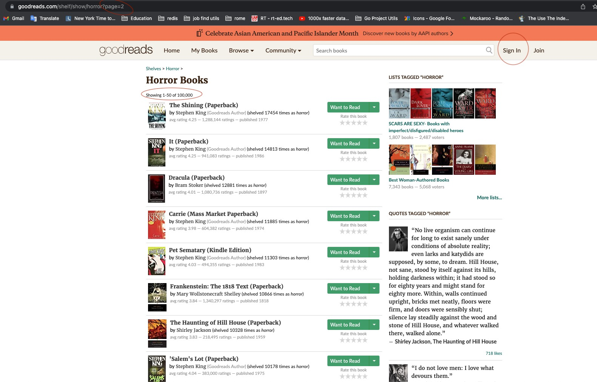
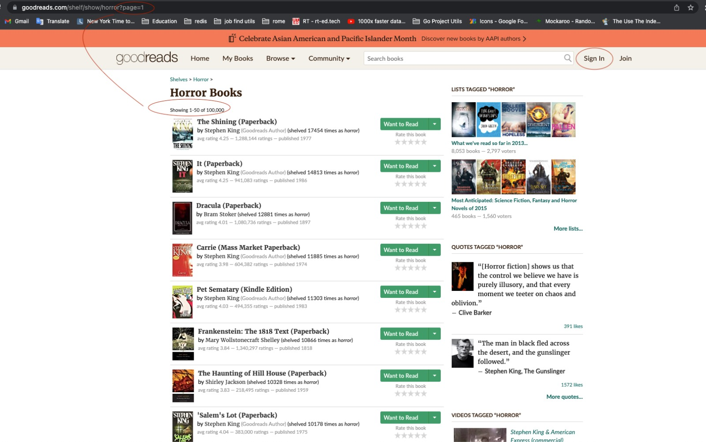
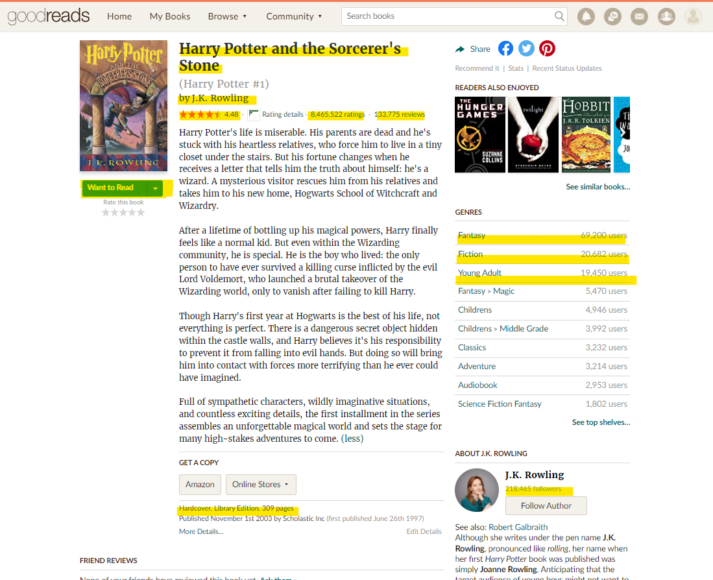
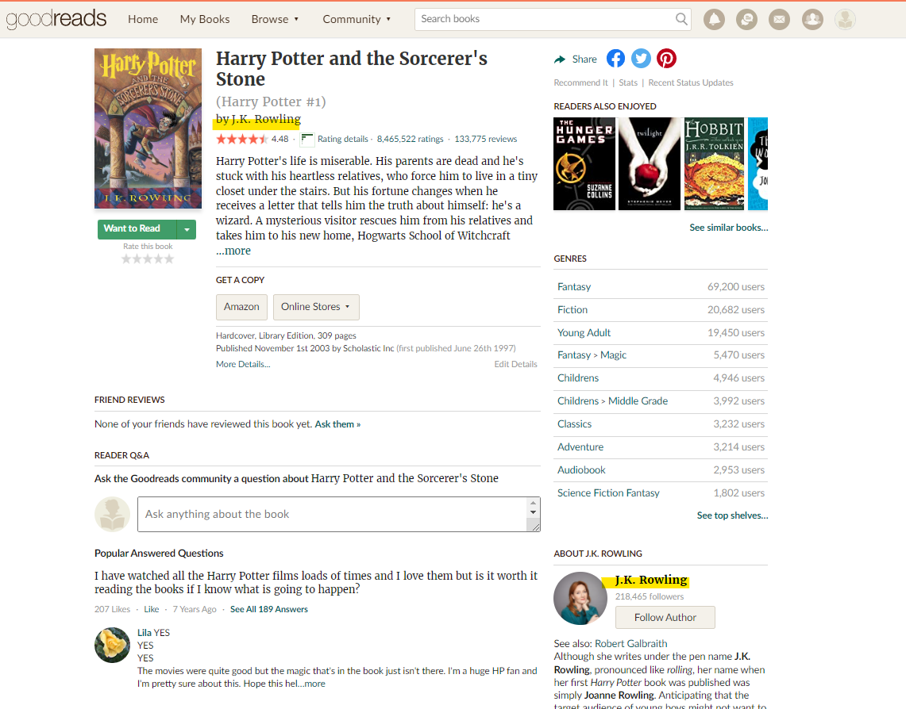
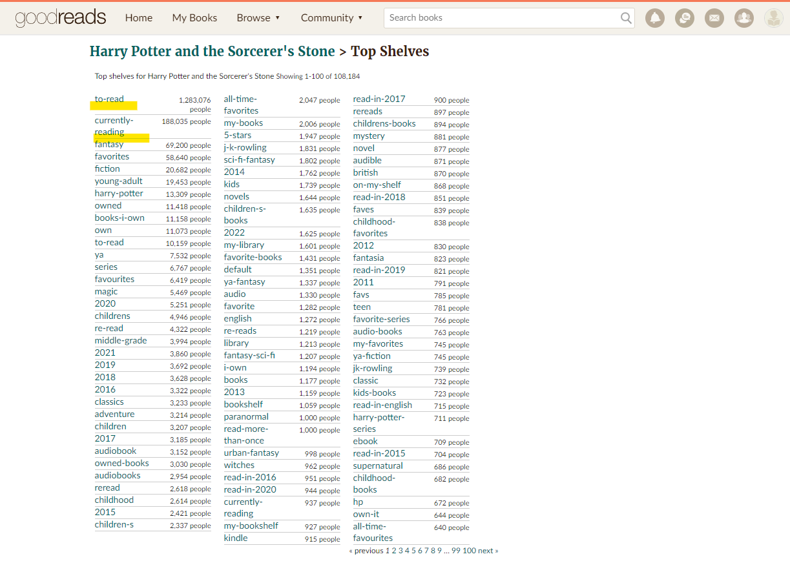
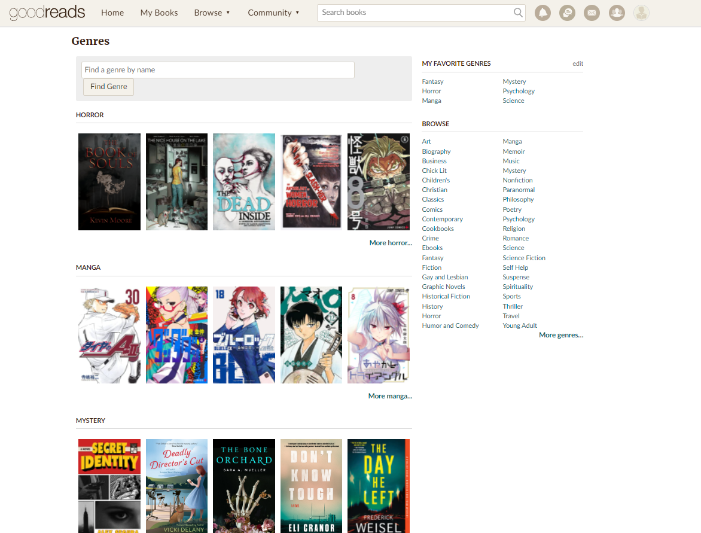
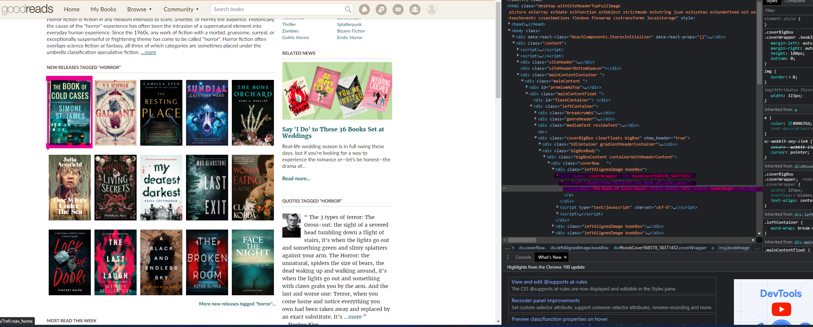
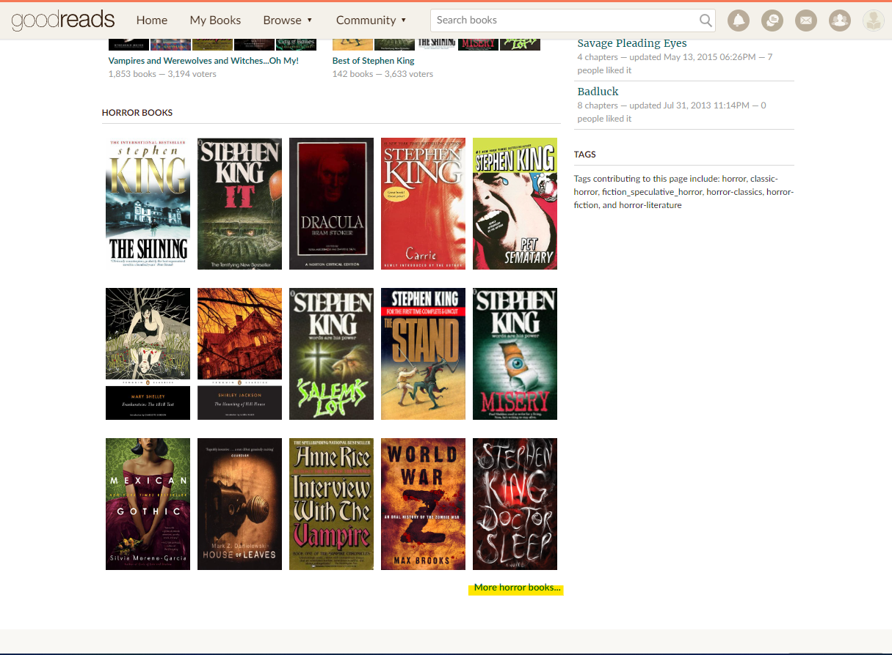
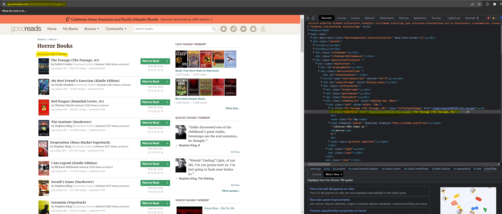

Table of contents
Books Success by Awarding Prediction
Table of contents¶
Data acquisition
3.1 Scraping challanges
3.2 Scraping clean data
3.3 Authentication process
3.4 Authentication class
3.5 Scraping Process
3.6 Book Spider Class
3.7 Scraping route creation
3.8 Genre spiderScrapping and threading
4.1 First crawl
4.2 Concating Data
4.2 Total data scrapedData cleaning
5.1 Corrupted data cleaning
5.2 Replace missing data - original title
5.3 None values - discussion and strategyPre outliers cleaning EDA
6.1 Genre distribution
6.2 Mean rating by genre
6.3 Language distribution
6.4 Edition count to rating
6.5 Rating to award
6.6 Pages count to books countDealing with outliers
7.1 Outliers detection
7.2 Outliers cleaning
7.3 Outliers cleaning resultsEDA after outliers cleaning
8.1 Thoughts of the results
8.2 Aggregation metrics
8.3 Original title correlation with awards
8.4 Awards count per genre
8.5 Awards percentage by genreMachine learning - Decision tree
10.1 Single decision tree
10.2 First prediction
10.3 New dimenstion - The ace in the sleeve
10.4 Depth optiomazationMachine learning - Random forest
11.1 Overfitting?
11.2 Model improvment
11.3 Adjusting features
11.4 Grid search many forests
11.5 F-score accuracy addition
11.6 Random states tests
Introduction
Today the movie industry is one of the biggest industries in the world.
Full of many actors, producers, films and even a lot of rating websites such as: IMDB, Rotten tomatoes, Metacritic and etc.
As the film industry growth we felt that something was forgotten here and thought to ourselves: What about the books industry and those great books which also in days became the scripts of many successful movies?
This thought led us to ask ourselves: assuming we were a huge books publisher and a writer came to us with a book, how could we know if this book will be successful?
Also if we were to be the authors of the book, could we ever know if the book will get the audience sympathy or even reach the cinema theatres?
To answer the following questions we set a goal to our research: to see if we can build a model that will predict if a book is so successful that it will also be awarded by list of books features.
Import needed packages
!pip install pydot
!pip install pydotplus
from bs4 import BeautifulSoup
from bs4.element import Tag as HtmlTag
import requests
import os
from random import randint
import time
from time import sleep
from abc import ABC, abstractmethod
from enum import Enum
from functools import partial
from typing import Callable, List
from numbers import Number
import pandas as pd
import numpy as np
from IPython.display import display
import seaborn as sns
import matplotlib.pyplot as plt
from sklearn.preprocessing import LabelEncoder
from IPython.display import Image, display
import pydotplus
from scipy import misc
from sklearn import metrics
from sklearn.model_selection import train_test_split
from sklearn import tree
from sklearn.model_selection import GridSearchCV
from sklearn.metrics import make_scorer
from sklearn.ensemble import RandomForestClassifier
from sklearn.metrics import f1_score
Requirement already satisfied: pydot in ./venv/lib/python3.9/site-packages (1.4.2)
Requirement already satisfied: pyparsing>=2.1.4 in ./venv/lib/python3.9/site-packages (from pydot) (3.0.9)
WARNING: You are using pip version 21.2.3; however, version 22.1 is available.
You should consider upgrading via the '/Users/shahartal/Desktop/test/venv/bin/python3 -m pip install --upgrade pip' command.
Requirement already satisfied: pydotplus in ./venv/lib/python3.9/site-packages (2.0.2)
Requirement already satisfied: pyparsing>=2.0.1 in ./venv/lib/python3.9/site-packages (from pydotplus) (3.0.9)
WARNING: You are using pip version 21.2.3; however, version 22.1 is available.
You should consider upgrading via the '/Users/shahartal/Desktop/test/venv/bin/python3 -m pip install --upgrade pip' command.
---------------------------------------------------------------------------
ModuleNotFoundError Traceback (most recent call last)
Input In [1], in <cell line: 15>()
13 from typing import Callable, List
14 from numbers import Number
---> 15 import pandas as pd
16 import numpy as np
17 from IPython.display import display
ModuleNotFoundError: No module named 'pandas'
Data Acquisition
In order to create a predication model we first needed to gather relevant data.
Considering our options of data acquisition sources, we decided to look for the biggest library catalogs and reading lists websites and scrape data which we thought will be helpful and save it as a dataframe
The top options we found were:
After a punctual search in these websites for relevant data and great community scale, we have decided to move on with good reads due to the scale of the community and amount of features provided with each book.
We started looking for a way to scrape data from good reads and we immediately faced the issue of having to authenticate and make all network requests to their servers under the same authenticated session
We used authentication credentials, so we stored the credentials to a .env file locally and load the varialbes by name instead hardcoding them.
def load_dotenv_variables() -> None:
env_vars: List[str] = !cat ./.env
for var in env_vars:
key, value = var.split('=')
os.environ[key] = value
load_dotenv_variables()
Scraping challanges
While we trying our first attempts to scrape the data from good reads we found out the following issues:
- When sending too many requests in a short period of time, the website started to slow down and the scraping slowly was defected (slower responses)
- Once in a while instead of getting a valid response from the servers we got an unexpected error which resulted lack of data
- The default user agent used by requests was python-requests/2.26.0 and we were worried that we may be detected has a bot and thus being forbid from sending requests using the same user/ip
The way we dealed with these issues was by created saftey methods for each chllange.
Some util functions to help scrape the data without harming the the 3rd party websites and retry mechanism in case of failure
- sleepms - function made in order to create a delay so the amount of requests sends to the server in parralel will not affect the scraping performance and other users experience in the website
- random_wait - function which is used in order to create random delay so our scraping methodology will not be detected by the servers.
- get_request_with_retry - function that sends a get request to the servers and also address the issue of unexpected errors.
- get_fake_user_agent - function which provides us with a non suspectable user agent.
def sleepms(milliseconds: int): seconds = 0.001 * milliseconds sleep(seconds) def random_wait(): start = time.time() sleepms(randint(1, 250))
class AuthorizationFailureException(Exception): ... class HtmlTagNotFoundException(Exception): ...
def get_request_with_retry(url: str, session: requests.Session = requests.Session(), retries_count: int = 3, expected_status_code: int = 200) -> requests.Response: if retries_count < 1: raise ValueError(f"url:{url}, invalid retries count: {retries_count}") for i in range(0, retries_count): random_wait() result = None try: result = session.get(url) except: continue if result is None: continue if result.status_code == 404 and expected_status_code != 404: return result if not (result is None or result.status_code != expected_status_code): return result raise Exception(f"url:{url}, retries limit exceeded...")
def get_fake_user_agent() -> str: return "Mozilla/5.0 (Macintosh; Intel Mac OS X 10_15_7) AppleWebKit/537.36 (KHTML, like Gecko) Chrome/100.0.4896.88 Safari/537.36"
Scraping clean data
While scaping we found out that we get some of the features scraped with defected such as:
- Some numbers were presented with a comma separator and we wanted to store a numeric type and not a string type.
- Some features were a subset of a bigger text which we only needed a part of it.
In order to resolve these issues we created a converter which extract the data we wanted precisely
class NumberTypesConverters(Enum): INT = partial(int) FLOAT = partial(float) COMPLEX = partial(complex) def string_to_number(string: str, number_converter: Callable) -> Number: """gets a string which may contain commas and a number type, returns converted string""" try: return number_converter("".join(string.split(","))) except: return number_converter(0)
def extract_parentheses_value(string: str) -> str: """gets string with parentheses in it, and return the inner value inside first parentheses""" if not "(" in string or not ")" in string: return string return string.split("(")[1].split(")")[0]
Authentication process
At the beginning we were trying to understand what is needed from us in order to authenticate to the good read servers.
We were looking at the requests sent to the server just by using the website as normal user and logging in to an account.
We could see that besides the username and password which were sent in the request there were 2 more fields sent:
- authenticity_token
- n
Once we did find these fields we were able to create a class to automate the authentication process.
Note: These days the class will not work due to a massive change to the website done in the 19th of April 2022 which included changes to the authentication service - You can still see the old website here at the 18th of April 2022But why do we need authentication in a free to use website?
Apparently the website was free to use but it was not functioning properly while the user is not signed in to the website

Here is a good example that shows how the shelves page is not showing the right books while the user is not signed in (we will talk about shelves later on).Authentication Class
Used to store authentication persistent data inside of a requests session, to allow private scraping
class SessionAuthenticator(ABC): @abstractmethod def authenticate(session: requests.Session): """gets requests session class and authenticate it to derived service"""
class GoodReadsAuthenticator(SessionAuthenticator): LOGIN_URL: str = "https://www.goodreads.com/user/sign_in" def __init__(self, user_email: str, user_password: str) -> None: if user_email is None: raise ValueError("invalid user_email") self.user_email = user_email if user_password is None: raise ValueError("invalid user_password") self.user_password = user_password def __get_authenticity_token(self, html: str) -> str: soup: BeautifulSoup = BeautifulSoup(html, "html.parser") token_hidden_input: HtmlTag = soup.find("input", attrs={"name": "authenticity_token"})# hidden field if token_hidden_input is None: raise HtmlTagNotFoundException("authenticity_token_hidden_input is not found") return token_hidden_input.get("value").strip() def __get_n_value(self, html: str) -> str: soup: BeautifulSoup = BeautifulSoup(html, "html.parser") n_hidden_input: HtmlTag = soup.find("input", attrs={"name": "n"})# used to be below "not a member?" if n_hidden_input is None: raise HtmlTagNotFoundException("n_hidden_input is not found") return n_hidden_input.get("value").strip() def authenticate(self, session: requests.Session): """gets requests.Session and provides cookie persistence for Good Reads""" login_form_page_res: requests.Response = get_request_with_retry(self.LOGIN_URL, session) authenticity_token: str = self.__get_authenticity_token(login_form_page_res.text) n_val: str = self.__get_n_value(login_form_page_res.text) login_payload: dict = { "user[email]": self.user_email, "user[password]": self.user_password, "authenticity_token": authenticity_token, "n": n_val } print(f"Attempting to log in to Good Reads...") authentication_res: requests.Response = session.post(self.LOGIN_URL, data=login_payload) if authentication_res.status_code != 200: raise AuthorizationFailureException("Good Reads login failure") print(f"logged in sucessfully...")
Authenticating...
session: requests.Session = requests.Session() session.headers.update({"User-Agent": get_fake_user_agent()})# otherwise, default is: 'python-requests/2.26.0' grAuth: SessionAuthenticator = GoodReadsAuthenticator(os.getenv("GOODREADS_EMAIL"), os.getenv("GOODREADS_PASSWORD")) grAuth.authenticate(session)
Attempting to log in to Good Reads... logged in sucessfully...
Scraping Process
Once we finished with creating both the authentication class and the utilization functions we were right in the spot were we felt confident to start building a spider classes which will scrape the data for us automatically.
At first glance at the website we thought to ourselves, just how exactly we want to scrape the data?
So went in to the website and started exploring the website in order to find the best route for our scraping proccess.We could clearly see that our best option to get maximum data was in the book's page which contains huge amount of data.
 At this phase we asked ourselves 2 questions:
Right on first sight we could mark ourselves data which we knew we are going to use.
The elements we saw right away:
- What is the exact data we wish to scrape?
- How can we easily access large amount of books which will present different types of books.
We could easily get from the book's page the following list:
- title
- rating
- ratings count
- reviews count
- book format
- pages count
- main language
- editions count
- has awards - The most important field for us since we based our whole research on that page
- The top tagged genres for book - Which we decided 3 will be enough
Yet we knew this was still not enough data, so we explored pages connected to the book's URL page to see what data is available from each book page.
The first thing we wanted to have is connection to the author, we knew that book's success has to be somehow also related to the author that wrote the book.
Luckily for us - The name of the author was also link to the author's page. The exploration in the author's page then began.
While we ere exploring the author's page we found the following data which we decided can be helpful for us in order to create a good prediction method.- author name
- author followers count
- author books count
- author avg rating
- author ratings count
- author reviews count
Now felt more confident about the data we have, but then we recalled one field that caught our interest in book page, which it was the "Want to Read" button at the book's page.
We wandered, is there any way we could get the amount of people interested in reading the book?
Back in the book's page we pressed the "Want to Read" button, that revealed a new field of interest to us - "Currently reading".But still, we did not knew how to get to the number of how many users want to read the book or currently reading the book.

So we kept exploring the book's page up to the point where we pressed the "see top shelves..." hyperlink, there we could finally get the numbers we wanted, Since both the "to read" and "currently reading" were actually tagged in the shelves.Great!
Now have all the data we want to scrape and we know the route from a book's page to the other pages which we can get the data from.
That concludes both the first and the second questions we were asking ourselves.
This is where we decided to create the first spider that scrape the data we agreed on.
We inspected each and every elements we were looking for in the HTML tree of each page and the result led to this class:Book Spider Class
The book spider class is a tool which gets the book's url and the authentication session we are using and scrape the data from the book's page as well as from the author's page and the top shelves page (using another http request if needed for the other linked pages to the book's page).
Remider of the list of data and where are they scraped from:- title - book page
- original title - book page
- rating - book page
- ratings count - book page
- reviews count - book page
- book format - book page
- pages count - book page
- main language - book page
- editions count - book page
- has awards - book page
- top tagged genre 1 - book page
- top tagged genre 2 - book page
- top tagged genre 3 - book page
- to read count - books top shelves
- currently reading count - books top shelves
- author name - author page
- author followers count - author page
- author books count - author page
- author avg rating - author page
- author ratings count - author page
- author reviews count - author page
class BookSpider(ABC): @abstractmethod def scrape_data(self): """scrapes book data and returns object or something"""
class GoodReadsBookSpider(BookSpider): def __init__(self, book_url: str, session: requests.Session) -> None: if book_url is None: raise ValueError("no book_url provided") self.book_url = book_url if session is None: raise ValueError("no session provided") self.session = session def __get_item_from_book_data_box(self, html: str, title: str) -> str: soup: BeautifulSoup = BeautifulSoup(html, "html.parser") book_data_box: HtmlTag = soup.find("div", attrs={"id": "bookDataBox"}) if book_data_box is None: return None for container in book_data_box.findAll("div", attrs={"class", "clearFloats"}): row_title = container.find("div", attrs={"class": "infoBoxRowTitle"}) if row_title.get_text() == title: row_value = container.find("div", attrs={"class": "infoBoxRowItem"}) return row_value.get_text().strip() return None def __get_title(self, html: str) -> str: soup: BeautifulSoup = BeautifulSoup(html, "html.parser") book_title: HtmlTag = soup.find("h1", attrs={"id": "bookTitle"}) if book_title is None: return None title = book_title.get_text().strip() if len(title) == 0: return None return title def __get_original_title(self, html: str) -> str: return self.__get_item_from_book_data_box(html, "Original Title") def __get_rating(self, html: str) -> float: soup: BeautifulSoup = BeautifulSoup(html, "html.parser") rating_tag: HtmlTag = soup.find("span", attrs={"itemprop": "ratingValue"}) if rating_tag is None: return np.nan return string_to_number(rating_tag.get_text().strip(), NumberTypesConverters.FLOAT.value) def __get_ratings_count(self, html: str) -> int: soup: BeautifulSoup = BeautifulSoup(html, "html.parser") rating_tag: HtmlTag = soup.find("meta", attrs={"itemprop": "ratingCount"}) if rating_tag is None: return np.nan rating_text = rating_tag.get_text().strip().split(" ")[0] return string_to_number(rating_text, NumberTypesConverters.INT.value) def __get_reviews_count(self, html: str) -> int: soup: BeautifulSoup = BeautifulSoup(html, "html.parser") review_tag: HtmlTag = soup.find("meta", attrs={"itemprop": "reviewCount"}) if review_tag is None: return np.nan review_text = review_tag.get_text().strip().split(" ")[0] return string_to_number(review_text, NumberTypesConverters.INT.value) def __get_book_format(self, html: str) -> str: soup: BeautifulSoup = BeautifulSoup(html, "html.parser") book_format_tag: HtmlTag = soup.find("span", attrs={"itemprop": "bookFormat"}) if book_format_tag is None: return None return book_format_tag.get_text().strip() def __get_pages_count(self, html: str) -> int: soup: BeautifulSoup = BeautifulSoup(html, "html.parser") pages_num_tag: HtmlTag = soup.find("span", attrs={"itemprop": "numberOfPages"}) if pages_num_tag is None: return np.nan pages_num_text = pages_num_tag.get_text().strip().split(" ")[0] return string_to_number(pages_num_text, NumberTypesConverters.INT.value) def __get_main_language(self, html: str) -> str: soup: BeautifulSoup = BeautifulSoup(html, "html.parser") lang_tag: HtmlTag = soup.find("div", attrs={"itemprop": "inLanguage"}) if lang_tag is None: return None lang = lang_tag.get_text().strip() if len(lang) == 0: return None return lang def __get_editions_count(self, html: str) -> int: soup: BeautifulSoup = BeautifulSoup(html, "html.parser") editions_tag: HtmlTag = soup.find("div", attrs={"class": "otherEditionsLink"}) if editions_tag is None: return 1 editions_a = editions_tag.find("a") return string_to_number(extract_parentheses_value(editions_a.get_text().strip()), NumberTypesConverters.INT.value) def __get_has_awards(self, html: str) -> bool: return self.__get_item_from_book_data_box(html, "Literary Awards") is not None def __get_top_tagged_genre(self, html: str, place: int) -> str: soup: BeautifulSoup = BeautifulSoup(html, "html.parser") generes_tags: HtmlTag = soup.findAll("a", attrs={"class": ["actionLinkLite", "bookPageGenreLink"]}, href=lambda value: value and value.startswith("/genres/")) if place > len(generes_tags): return None genre_tag = generes_tags[place - 1].get_text().strip() if len(genre_tag) == 0: return None return genre_tag # shelves def __get_shelf_stat(self, html: str, self_name: str) -> str: soup: BeautifulSoup = BeautifulSoup(html, "html.parser") stats: HtmlTag = soup.findAll("div", attrs={"class": "shelfStat"}) if stats is None: return None for stat in stats: stat_name = stat.find("a", attrs={"class": ["mediumText", "actionLinkLite"]}) if stat_name.get_text() == self_name: stat_val = stat.find("div", attrs={"class": "smallText"}) stat_val_text = stat_val.get_text().strip() if len(stat_val_text) == 0 or " " not in stat_val_text: return None return stat_val_text.split(" ")[0] return None def __get_user_reading_shelves(self, html: str) -> dict: soup: BeautifulSoup = BeautifulSoup(html, "html.parser") shelves_anchor: HtmlTag = soup.find("a", href=lambda value: value and value.startswith("/book/shelves/")) if shelves_anchor is None: return {"to_read_count": 0, "currently_reading_count": 0} shelves_url = f"https://www.goodreads.com/{shelves_anchor.get('href')}" shelves_response: requests.Response = get_request_with_retry(shelves_url, self.session) to_read_count = self.__get_to_read_count(shelves_response.text) currently_reading_count = self.__get_currently_reading_count(shelves_response.text) return {"to_read_count": to_read_count, "currently_reading_count": currently_reading_count} def __get_to_read_count(self, html: str) -> int: read_count_str = self.__get_shelf_stat(html, "to-read") return string_to_number(read_count_str, NumberTypesConverters.INT.value) def __get_currently_reading_count(self, html: str) -> int: read_count_str = self.__get_shelf_stat(html, "currently-reading") return string_to_number(read_count_str, NumberTypesConverters.INT.value) # author def __get_author_info(self, html: str) -> dict: soup: BeautifulSoup = BeautifulSoup(html, "html.parser") author_name_container: HtmlTag = soup.find("div", attrs={"class": "authorName__container"}) author_name_url_tag = author_name_container.find("a", attrs={"class": "authorName", "itemprop": "url"}) author_href = author_name_url_tag.get("href") author_response: requests.Response = get_request_with_retry(author_href, self.session) author_name = self.__get_author_name(author_response.text) author_followers_count = self.__get_author_followers_count(author_response.text) author_books_count = self.__get_author_books_count(author_response.text) author_avg_rating = self.__get_author_avg_rating(author_response.text) author_ratings_count = self.__get_author_author_ratings_count(author_response.text) author_reviews_count = self.__get_author_author_reviews_count(author_response.text) return { "author_name": author_name, "author_followers_count": author_followers_count, "author_books_count": author_books_count, "author_avg_rating": author_avg_rating, "author_ratings_count": author_ratings_count, "author_reviews_count": author_reviews_count } def __get_author_name(self, html: str) -> str: soup: BeautifulSoup = BeautifulSoup(html, "html.parser") name_cont: HtmlTag = soup.find("h1", attrs={"class": "authorName"}) if name_cont is None: return None name = name_cont.find("span", {"itemprop": "name"}).get_text().strip() if len(name) == 0: return None return name def __get_author_followers_count(self, html: str) -> int: soup: BeautifulSoup = BeautifulSoup(html, "html.parser") author_followers_count_el: HtmlTag = soup.find("a", href=lambda value: value and value.startswith("/author_followings?")) if author_followers_count_el is None: return np.nan author_followers_count: int = string_to_number(extract_parentheses_value(author_followers_count_el.get_text().strip()), NumberTypesConverters.INT.value) return author_followers_count def __get_author_books_count(self, html: str) -> int: soup: BeautifulSoup = BeautifulSoup(html, "html.parser") author_books_count_parent: HtmlTag = soup.find("div", attrs={"class": "hreview-aggregate", "itemprop": "aggregateRating"}) if author_books_count_parent is None: return np.nan distinct_works_text_container: HtmlTag = author_books_count_parent.find("a", href=lambda value: value and value.startswith("/author/list/")) return string_to_number(distinct_works_text_container.get_text().split(" ")[0], NumberTypesConverters.INT.value) def __get_author_avg_rating(self, html: str) -> float: soup: BeautifulSoup = BeautifulSoup(html, "html.parser") cont = soup.find("span", attrs={"class": "average", "itemprop": "ratingValue"}) if cont is None or len(cont.get_text().strip()) == 0: return np.nan author_average_rating: float = string_to_number(cont.get_text().strip(), NumberTypesConverters.FLOAT.value) return author_average_rating def __get_author_author_ratings_count(self, html: str) -> int: soup: BeautifulSoup = BeautifulSoup(html, "html.parser") cont = soup.find("span", attrs={"itemprop": "ratingCount"}) if cont is None: return np.nan author_ratings_count: int = string_to_number(cont.get("content"), NumberTypesConverters.INT.value) return author_ratings_count def __get_author_author_reviews_count(self, html: str) -> int: soup: BeautifulSoup = BeautifulSoup(html, "html.parser") cont = soup.find("span", attrs={"itemprop": "reviewCount"}) if cont is None: return np.nan author_reviews_count: int = string_to_number(cont.get("content"), NumberTypesConverters.INT.value) return author_reviews_count def scrape_data(self): book_page_response: requests.Response = get_request_with_retry(self.book_url, self.session) title = self.__get_title(book_page_response.text) original_title = self.__get_original_title(book_page_response.text) rating = self.__get_rating(book_page_response.text) ratings_count = self.__get_ratings_count(book_page_response.text) reviews_count = self.__get_reviews_count(book_page_response.text) book_format = self.__get_book_format(book_page_response.text) pages_count = self.__get_pages_count(book_page_response.text) main_language = self.__get_main_language(book_page_response.text) editions_count = self.__get_editions_count(book_page_response.text) has_awards = self.__get_has_awards(book_page_response.text) top_tagged_genre_1 = self.__get_top_tagged_genre(book_page_response.text, 1) top_tagged_genre_2 = self.__get_top_tagged_genre(book_page_response.text, 2) top_tagged_genre_3 = self.__get_top_tagged_genre(book_page_response.text, 3) user_reading_shelves = self.__get_user_reading_shelves(book_page_response.text) author_info = self.__get_author_info(book_page_response.text) return { "title": title, "original_title": original_title, "rating": rating, "ratings_count": ratings_count, "reviews_count": reviews_count, "book_format": book_format, "pages_count": pages_count, "main_language": main_language, "editions_count": editions_count, "has_awards": has_awards, "top_tagged_genre_1": top_tagged_genre_1, "top_tagged_genre_2": top_tagged_genre_2, "top_tagged_genre_3": top_tagged_genre_3, "to_read_count": user_reading_shelves["to_read_count"], "currently_reading_count": user_reading_shelves["currently_reading_count"], "author_name": author_info["author_name"], "author_followers_count": author_info["author_followers_count"], "author_books_count": author_info["author_books_count"], "author_avg_rating": author_info["author_avg_rating"], "author_ratings_count": author_info["author_ratings_count"], "author_reviews_count": author_info["author_reviews_count"] }
Creating the route for successful scraping
Now what left was just to find the way to access a large amount of different types of books.
So we went on and thought about what could be the best way to get different types of books? Genres of course!
Great, We know how to get a great scale of books, So we decided to check how does the genres page looks like when exploring all the genres.This is the page we found out there.
Inside a genre we could see the access to book links but we were not satisfied with the way we can access book link from the generes page - The coverWrapper class was too generic and we had no access to large amount of books.
Exploration of the genere page led to this button:
Which this link provided us with the solution to all of our problems.
This page's URL built from easy to explore api links:
- https://www.goodreads.com/shelf/show
- followed by the genre
- with ending of which page are you at
Moreover, accessing a book's page was easy from this page. Last but not least we knew exactly how many books to expect each page since each shelf page holds up to 50 books per page.Genre Spider Class
Once we found out the right way to start scraping the data, now what's left is to create a genre spider which will handle browsing inside genres and help us getting the books easily.
We built a Genre spider which gets a genre from a list of genres we decided, the spider handles the mechanism for fetching pages by genre and using books scrapers to store books data.class GenreSpider(ABC): @abstractmethod def scrape_books(self, max_books: int, books_offset: int) -> pd.DataFrame: """scrapes genre books data and returns dataframe"""
class GoodReadsGenreSpider(GenreSpider): GENRE_EXPLORATION_URL = f"https://www.goodreads.com/shelf/show" PAGE_BOOKS_NUM = 50 GOOD_READS_DEFINED_GENRE_MAX = 100_000 def __init__(self, genre_name: str, session: requests.Session) -> None: if genre_name is None: raise ValueError("no genre_name provided") self.genre_name = genre_name if session is None: raise ValueError("no session provided") self.session = session def __get_page_books(self, html: str) -> List[dict]: soup: BeautifulSoup = BeautifulSoup(html, "html.parser") books_url_tags = soup.find_all("a", {"class": "bookTitle"}) books = [] for book_url_tag_tag in books_url_tags: book_url = f"https://www.goodreads.com{book_url_tag_tag.get('href')}" bs: BookSpider = GoodReadsBookSpider(book_url, self.session) book = bs.scrape_data() books.append(book) print(f"genre={self.genre_name}, new book has been fetched sucessfully, page scope: {len(books)}/{len(books_url_tags)}") return books def scrape_books( self, max_books: int = None, books_offset: int = 0 ) -> pd.DataFrame: genre_url = f"{self.GENRE_EXPLORATION_URL}/{self.genre_name}" if max_books is None: max_books = self.GOOD_READS_DEFINED_GENRE_MAX has_next = True page = 1 if books_offset > self.PAGE_BOOKS_NUM: page += int(books_offset / self.PAGE_BOOKS_NUM) books = [] while len(books) < max_books and has_next: page_url = f"{genre_url}?page={page}" print(f"fetching genre={self.genre_name}, page={page}") page += 1 page_response: requests.Response = get_request_with_retry(page_url, self.session) if page_response.status_code == 404: has_next = False continue page_books = self.__get_page_books(page_response.text) if len(page_books) < self.PAGE_BOOKS_NUM: has_next = False books.extend(page_books) return pd.DataFrame.from_records(books)
Scraping - Let's start scraping
But before we started scraping there was something we wanted to improve in our scraping model.
Because scraping is a lot of IO and different genres are not dependent, in order to have better network utilization we have decided to use multi-threading.
We did not want to overload the site and harm other users experience with over-requesting, however we wanted to decrease our scraping time by scraping multiple genres at the same time.
But what is the right number of threads that will remain balance between faster scraping and not causing over-requesting from the website which will also delay the server's response time?
The best practice was by doing "trial and error" here are the trials we did:
- 2 Threads simultaneously - did not improve the scraping time to our satisfaction.
- All Threads simultaneously (17 threads) - The server was overloaded and we did not get responses in a decent time.
- 10 Threads simultaneously - As we suspected it was still too much for the server to handle.
- 5 Threads simultaneously - The server response time was as fast as send single threaded request.
import threading def explore_genre(genre: str): print(f"start working on genre: {genre}") gs: GenreSpider = GoodReadsGenreSpider(genre, session) genre_df = gs.scrape_books(max_books=1000) file_name = f"{genre}_books" genre_df.to_parquet(f"./books_by_genres/{file_name}") print(f"work on genre: {genre} has been finished") target_genres_to_explore = [ "fantasy", "crime", "fiction", "horror", "manga", "psychology", "travel", "thriller", "adult", "sport", "science", "science-fiction", "biography", "self-help", "religion", "history", "cookbooks" ] MAX_CONCURRENTLY = 5 genres_buckets = [] offset = 0 while offset < len(target_genres_to_explore): genres_buckets.append(target_genres_to_explore[offset:MAX_CONCURRENTLY + offset]) offset += MAX_CONCURRENTLY for genres in genres_buckets: print(f"start genre bucket: {genres}") threads = [] for genre in genres: threads.append(threading.Thread(target=explore_genre, args=(genre,))) for thread in threads: thread.start() for thread in threads: thread.join() print(f"end genre bucket: {genres}") print("done all target genres exploration")
note: accidently restarted output, won't run this long scraping stage again
First Crawl Conclusion
As can be seen, in the logs above, although at the start, we have set boundary of 1000 books at max for each genre, it seems like some of the genres are having just 6 pages and such.
You can see it below, as the travel books rows count is below 1000 (below 20 pages)example_genre_with_low_books_number_df = pd.read_parquet(f"./books_by_genres/travel_books") example_genre_with_low_books_number_df.shape
(299, 21)
First Crawl Conclusion - Continue
In addition, after further investigating our scrape target website, we see that all genres have up to 25 pages (1250 books) to browse (AT MAX). Therefore, We are going to run the scrape flow again so we fetch every book we are able to (by selected genres), but this time change the genreSpider class to support offset, so it won't re-read the same books again, AND we will append the books this time to the existing parquet file, instead of overwriting them... other than that, same approach. NOTE: original Class as been updated.
- Same Target Genres, Altough, only the ones which have any books left to scrape. (the genres which has 1000 books in their df (prev max)
- same multi-threades approach
# getting only relevant genres (to better perform I/O utilization) # (prevent case of just 2 genres in same threading group with idles genres - waste of time) new_target_genres_to_explore = [] for genre in target_genres_to_explore: file_name = f"{genre}_books" file_path = f"./books_by_genres/{file_name}" prev_max = 1000 df = pd.read_parquet(file_path) if df.shape[0] == prev_max: new_target_genres_to_explore.append(genre) # again, bucket the genres up.. MAX_CONCURRENTLY = 5 # same as before genres_buckets = [] offset = 0 while offset < len(new_target_genres_to_explore): genres_buckets.append(target_genres_to_explore[offset:MAX_CONCURRENTLY + offset]) offset += MAX_CONCURRENTLY # just passing offset to scraper instead of max... def explore_genre(genre: str): print(f"start working on genre: {genre}") gs: GenreSpider = GoodReadsGenreSpider(genre, session) genre_df = gs.scrape_books(books_offset=1000) if genre_df.shape[0] == 0: return # already fetched all this genre books, empty df. file_name = f"{genre}_books" file_path = f"./books_by_genres/{file_name}" # reading df and concat instead of overwrting prev one... prev_genre_df = pd.read_parquet(file_path) genre_books = pd.concat([prev_genre_df, genre_df]) genre_books.to_parquet(file_path) print(f"work on genre: {genre} has been finished") for genres in genres_buckets: print(f"start genre bucket: {genres}") threads = [] for genre in genres: threads.append(threading.Thread(target=explore_genre, args=(genre,))) for thread in threads: thread.start() for thread in threads: thread.join() print(f"end genre bucket: {genres}") print("done all target genres exploration")
start genre bucket: ['fantasy', 'crime', 'fiction', 'horror', 'manga'] start working on genre: fantasy fetching genre=fantasy, page=21 start working on genre: crime fetching genre=crime, page=21 start working on genre: fiction fetching genre=fiction, page=21 start working on genre: horror fetching genre=horror, page=21 start working on genre: manga fetching genre=manga, page=21 genre=manga, new book has been fetched sucessfully, page scope: 1/50 genre=horror, new book has been fetched sucessfully, page scope: 1/50 genre=fiction, new book has been fetched sucessfully, page scope: 1/50 genre=crime, new book has been fetched sucessfully, page scope: 1/50 genre=fantasy, new book has been fetched sucessfully, page scope: 1/50 genre=manga, new book has been fetched sucessfully, page scope: 2/50 genre=horror, new book has been fetched sucessfully, page scope: 2/50 genre=fiction, new book has been fetched sucessfully, page scope: 2/50 genre=crime, new book has been fetched sucessfully, page scope: 2/50 genre=fantasy, new book has been fetched sucessfully, page scope: 2/50 genre=manga, new book has been fetched sucessfully, page scope: 3/50 genre=fiction, new book has been fetched sucessfully, page scope: 3/50 genre=horror, new book has been fetched sucessfully, page scope: 3/50 genre=crime, new book has been fetched sucessfully, page scope: 3/50 genre=fantasy, new book has been fetched sucessfully, page scope: 3/50 genre=manga, new book has been fetched sucessfully, page scope: 4/50 genre=fiction, new book has been fetched sucessfully, page scope: 4/50 genre=horror, new book has been fetched sucessfully, page scope: 4/50 genre=crime, new book has been fetched sucessfully, page scope: 4/50 genre=manga, new book has been fetched sucessfully, page scope: 5/50 genre=fantasy, new book has been fetched sucessfully, page scope: 4/50 genre=fiction, new book has been fetched sucessfully, page scope: 5/50 genre=horror, new book has been fetched sucessfully, page scope: 5/50 genre=crime, new book has been fetched sucessfully, page scope: 5/50 genre=manga, new book has been fetched sucessfully, page scope: 6/50 genre=fantasy, new book has been fetched sucessfully, page scope: 5/50 genre=fiction, new book has been fetched sucessfully, page scope: 6/50 genre=crime, new book has been fetched sucessfully, page scope: 6/50 genre=manga, new book has been fetched sucessfully, page scope: 7/50 genre=horror, new book has been fetched sucessfully, page scope: 6/50 genre=fiction, new book has been fetched sucessfully, page scope: 7/50 genre=fantasy, new book has been fetched sucessfully, page scope: 6/50 genre=crime, new book has been fetched sucessfully, page scope: 7/50 genre=manga, new book has been fetched sucessfully, page scope: 8/50 genre=horror, new book has been fetched sucessfully, page scope: 7/50 genre=fiction, new book has been fetched sucessfully, page scope: 8/50 genre=horror, new book has been fetched sucessfully, page scope: 8/50 genre=manga, new book has been fetched sucessfully, page scope: 9/50 genre=crime, new book has been fetched sucessfully, page scope: 8/50 genre=fantasy, new book has been fetched sucessfully, page scope: 7/50 genre=fiction, new book has been fetched sucessfully, page scope: 9/50 genre=manga, new book has been fetched sucessfully, page scope: 10/50 genre=crime, new book has been fetched sucessfully, page scope: 9/50 genre=horror, new book has been fetched sucessfully, page scope: 9/50 genre=fantasy, new book has been fetched sucessfully, page scope: 8/50 genre=fiction, new book has been fetched sucessfully, page scope: 10/50 genre=manga, new book has been fetched sucessfully, page scope: 11/50 genre=crime, new book has been fetched sucessfully, page scope: 10/50 genre=horror, new book has been fetched sucessfully, page scope: 10/50 genre=fiction, new book has been fetched sucessfully, page scope: 11/50 genre=fantasy, new book has been fetched sucessfully, page scope: 9/50 genre=manga, new book has been fetched sucessfully, page scope: 12/50 genre=crime, new book has been fetched sucessfully, page scope: 11/50 genre=horror, new book has been fetched sucessfully, page scope: 11/50 genre=fiction, new book has been fetched sucessfully, page scope: 12/50 genre=fantasy, new book has been fetched sucessfully, page scope: 10/50 genre=manga, new book has been fetched sucessfully, page scope: 13/50 genre=horror, new book has been fetched sucessfully, page scope: 12/50 genre=crime, new book has been fetched sucessfully, page scope: 12/50 genre=fiction, new book has been fetched sucessfully, page scope: 13/50 genre=fantasy, new book has been fetched sucessfully, page scope: 11/50 genre=manga, new book has been fetched sucessfully, page scope: 14/50 genre=horror, new book has been fetched sucessfully, page scope: 13/50 genre=fiction, new book has been fetched sucessfully, page scope: 14/50 genre=crime, new book has been fetched sucessfully, page scope: 13/50 genre=fantasy, new book has been fetched sucessfully, page scope: 12/50 genre=manga, new book has been fetched sucessfully, page scope: 15/50 genre=horror, new book has been fetched sucessfully, page scope: 14/50 genre=fiction, new book has been fetched sucessfully, page scope: 15/50 genre=crime, new book has been fetched sucessfully, page scope: 14/50 genre=fantasy, new book has been fetched sucessfully, page scope: 13/50 genre=manga, new book has been fetched sucessfully, page scope: 16/50 genre=horror, new book has been fetched sucessfully, page scope: 15/50 genre=fiction, new book has been fetched sucessfully, page scope: 16/50 genre=crime, new book has been fetched sucessfully, page scope: 15/50 genre=fantasy, new book has been fetched sucessfully, page scope: 14/50 genre=manga, new book has been fetched sucessfully, page scope: 17/50 genre=horror, new book has been fetched sucessfully, page scope: 16/50 genre=crime, new book has been fetched sucessfully, page scope: 16/50 genre=fantasy, new book has been fetched sucessfully, page scope: 15/50 genre=fiction, new book has been fetched sucessfully, page scope: 17/50 genre=manga, new book has been fetched sucessfully, page scope: 18/50 genre=horror, new book has been fetched sucessfully, page scope: 17/50 genre=crime, new book has been fetched sucessfully, page scope: 17/50 genre=fantasy, new book has been fetched sucessfully, page scope: 16/50 genre=manga, new book has been fetched sucessfully, page scope: 19/50 genre=fiction, new book has been fetched sucessfully, page scope: 18/50 genre=horror, new book has been fetched sucessfully, page scope: 18/50 genre=crime, new book has been fetched sucessfully, page scope: 18/50 genre=fantasy, new book has been fetched sucessfully, page scope: 17/50 genre=manga, new book has been fetched sucessfully, page scope: 20/50 genre=horror, new book has been fetched sucessfully, page scope: 19/50 genre=fiction, new book has been fetched sucessfully, page scope: 19/50 genre=crime, new book has been fetched sucessfully, page scope: 19/50 genre=fantasy, new book has been fetched sucessfully, page scope: 18/50 genre=manga, new book has been fetched sucessfully, page scope: 21/50 genre=fiction, new book has been fetched sucessfully, page scope: 20/50 genre=crime, new book has been fetched sucessfully, page scope: 20/50 genre=horror, new book has been fetched sucessfully, page scope: 20/50 genre=manga, new book has been fetched sucessfully, page scope: 22/50 genre=fiction, new book has been fetched sucessfully, page scope: 21/50 genre=fantasy, new book has been fetched sucessfully, page scope: 19/50 genre=crime, new book has been fetched sucessfully, page scope: 21/50 genre=horror, new book has been fetched sucessfully, page scope: 21/50 genre=manga, new book has been fetched sucessfully, page scope: 23/50 genre=fantasy, new book has been fetched sucessfully, page scope: 20/50 genre=crime, new book has been fetched sucessfully, page scope: 22/50 genre=fiction, new book has been fetched sucessfully, page scope: 22/50 genre=horror, new book has been fetched sucessfully, page scope: 22/50 genre=manga, new book has been fetched sucessfully, page scope: 24/50 genre=fantasy, new book has been fetched sucessfully, page scope: 21/50
genre=crime, new book has been fetched sucessfully, page scope: 23/50 genre=manga, new book has been fetched sucessfully, page scope: 25/50 genre=fiction, new book has been fetched sucessfully, page scope: 23/50 genre=horror, new book has been fetched sucessfully, page scope: 23/50 genre=fantasy, new book has been fetched sucessfully, page scope: 22/50 genre=manga, new book has been fetched sucessfully, page scope: 26/50 genre=crime, new book has been fetched sucessfully, page scope: 24/50 genre=horror, new book has been fetched sucessfully, page scope: 24/50 genre=fiction, new book has been fetched sucessfully, page scope: 24/50 genre=fantasy, new book has been fetched sucessfully, page scope: 23/50 genre=manga, new book has been fetched sucessfully, page scope: 27/50 genre=crime, new book has been fetched sucessfully, page scope: 25/50 genre=fiction, new book has been fetched sucessfully, page scope: 25/50 genre=horror, new book has been fetched sucessfully, page scope: 25/50 genre=manga, new book has been fetched sucessfully, page scope: 28/50 genre=fantasy, new book has been fetched sucessfully, page scope: 24/50 genre=crime, new book has been fetched sucessfully, page scope: 26/50 genre=fiction, new book has been fetched sucessfully, page scope: 26/50 genre=horror, new book has been fetched sucessfully, page scope: 26/50 genre=crime, new book has been fetched sucessfully, page scope: 27/50 genre=fantasy, new book has been fetched sucessfully, page scope: 25/50 genre=horror, new book has been fetched sucessfully, page scope: 27/50 genre=fiction, new book has been fetched sucessfully, page scope: 27/50 genre=crime, new book has been fetched sucessfully, page scope: 28/50 genre=fantasy, new book has been fetched sucessfully, page scope: 26/50 genre=horror, new book has been fetched sucessfully, page scope: 28/50 genre=fiction, new book has been fetched sucessfully, page scope: 28/50 genre=crime, new book has been fetched sucessfully, page scope: 29/50 genre=fantasy, new book has been fetched sucessfully, page scope: 27/50 genre=fiction, new book has been fetched sucessfully, page scope: 29/50 genre=crime, new book has been fetched sucessfully, page scope: 30/50 genre=horror, new book has been fetched sucessfully, page scope: 29/50 genre=fantasy, new book has been fetched sucessfully, page scope: 28/50 genre=crime, new book has been fetched sucessfully, page scope: 31/50 genre=fiction, new book has been fetched sucessfully, page scope: 30/50 genre=horror, new book has been fetched sucessfully, page scope: 30/50 genre=fantasy, new book has been fetched sucessfully, page scope: 29/50 genre=crime, new book has been fetched sucessfully, page scope: 32/50 genre=horror, new book has been fetched sucessfully, page scope: 31/50 genre=fiction, new book has been fetched sucessfully, page scope: 31/50 genre=fantasy, new book has been fetched sucessfully, page scope: 30/50 genre=crime, new book has been fetched sucessfully, page scope: 33/50 genre=fiction, new book has been fetched sucessfully, page scope: 32/50 genre=horror, new book has been fetched sucessfully, page scope: 32/50 genre=fantasy, new book has been fetched sucessfully, page scope: 31/50 genre=crime, new book has been fetched sucessfully, page scope: 34/50 genre=manga, new book has been fetched sucessfully, page scope: 29/50 genre=fiction, new book has been fetched sucessfully, page scope: 33/50 genre=horror, new book has been fetched sucessfully, page scope: 33/50 genre=fantasy, new book has been fetched sucessfully, page scope: 32/50 genre=crime, new book has been fetched sucessfully, page scope: 35/50 genre=manga, new book has been fetched sucessfully, page scope: 30/50 genre=fiction, new book has been fetched sucessfully, page scope: 34/50 genre=fantasy, new book has been fetched sucessfully, page scope: 33/50 genre=horror, new book has been fetched sucessfully, page scope: 34/50 genre=crime, new book has been fetched sucessfully, page scope: 36/50 genre=manga, new book has been fetched sucessfully, page scope: 31/50 genre=fantasy, new book has been fetched sucessfully, page scope: 34/50 genre=horror, new book has been fetched sucessfully, page scope: 35/50 genre=manga, new book has been fetched sucessfully, page scope: 32/50 genre=fantasy, new book has been fetched sucessfully, page scope: 35/50 genre=crime, new book has been fetched sucessfully, page scope: 37/50 genre=horror, new book has been fetched sucessfully, page scope: 36/50 genre=manga, new book has been fetched sucessfully, page scope: 33/50 genre=fantasy, new book has been fetched sucessfully, page scope: 36/50 genre=horror, new book has been fetched sucessfully, page scope: 37/50 genre=crime, new book has been fetched sucessfully, page scope: 38/50 genre=manga, new book has been fetched sucessfully, page scope: 34/50 genre=crime, new book has been fetched sucessfully, page scope: 39/50 genre=horror, new book has been fetched sucessfully, page scope: 38/50 genre=manga, new book has been fetched sucessfully, page scope: 35/50 genre=fantasy, new book has been fetched sucessfully, page scope: 37/50 genre=crime, new book has been fetched sucessfully, page scope: 40/50 genre=manga, new book has been fetched sucessfully, page scope: 36/50 genre=fantasy, new book has been fetched sucessfully, page scope: 38/50 genre=horror, new book has been fetched sucessfully, page scope: 39/50 genre=manga, new book has been fetched sucessfully, page scope: 37/50 genre=horror, new book has been fetched sucessfully, page scope: 40/50 genre=crime, new book has been fetched sucessfully, page scope: 41/50 genre=fantasy, new book has been fetched sucessfully, page scope: 39/50 genre=manga, new book has been fetched sucessfully, page scope: 38/50 genre=horror, new book has been fetched sucessfully, page scope: 41/50 genre=crime, new book has been fetched sucessfully, page scope: 42/50 genre=fantasy, new book has been fetched sucessfully, page scope: 40/50 genre=manga, new book has been fetched sucessfully, page scope: 39/50 genre=fiction, new book has been fetched sucessfully, page scope: 35/50 genre=crime, new book has been fetched sucessfully, page scope: 43/50 genre=fantasy, new book has been fetched sucessfully, page scope: 41/50 genre=horror, new book has been fetched sucessfully, page scope: 42/50 genre=manga, new book has been fetched sucessfully, page scope: 40/50 genre=fiction, new book has been fetched sucessfully, page scope: 36/50 genre=crime, new book has been fetched sucessfully, page scope: 44/50 genre=fantasy, new book has been fetched sucessfully, page scope: 42/50 genre=horror, new book has been fetched sucessfully, page scope: 43/50 genre=manga, new book has been fetched sucessfully, page scope: 41/50 genre=fiction, new book has been fetched sucessfully, page scope: 37/50 genre=crime, new book has been fetched sucessfully, page scope: 45/50 genre=fantasy, new book has been fetched sucessfully, page scope: 43/50 genre=horror, new book has been fetched sucessfully, page scope: 44/50 genre=manga, new book has been fetched sucessfully, page scope: 42/50 genre=fiction, new book has been fetched sucessfully, page scope: 38/50 genre=fantasy, new book has been fetched sucessfully, page scope: 44/50 genre=crime, new book has been fetched sucessfully, page scope: 46/50 genre=horror, new book has been fetched sucessfully, page scope: 45/50 genre=manga, new book has been fetched sucessfully, page scope: 43/50 genre=fiction, new book has been fetched sucessfully, page scope: 39/50 genre=fantasy, new book has been fetched sucessfully, page scope: 45/50 genre=crime, new book has been fetched sucessfully, page scope: 47/50 genre=horror, new book has been fetched sucessfully, page scope: 46/50 genre=manga, new book has been fetched sucessfully, page scope: 44/50 genre=fiction, new book has been fetched sucessfully, page scope: 40/50 genre=manga, new book has been fetched sucessfully, page scope: 45/50 genre=crime, new book has been fetched sucessfully, page scope: 48/50 genre=horror, new book has been fetched sucessfully, page scope: 47/50 genre=fantasy, new book has been fetched sucessfully, page scope: 46/50 genre=fiction, new book has been fetched sucessfully, page scope: 41/50
genre=crime, new book has been fetched sucessfully, page scope: 49/50 genre=manga, new book has been fetched sucessfully, page scope: 46/50 genre=fantasy, new book has been fetched sucessfully, page scope: 47/50 genre=horror, new book has been fetched sucessfully, page scope: 48/50 genre=fiction, new book has been fetched sucessfully, page scope: 42/50 genre=crime, new book has been fetched sucessfully, page scope: 50/50 fetching genre=crime, page=22 genre=manga, new book has been fetched sucessfully, page scope: 47/50 genre=fantasy, new book has been fetched sucessfully, page scope: 48/50 genre=horror, new book has been fetched sucessfully, page scope: 49/50 genre=fiction, new book has been fetched sucessfully, page scope: 43/50 genre=manga, new book has been fetched sucessfully, page scope: 48/50 genre=crime, new book has been fetched sucessfully, page scope: 1/50 genre=fantasy, new book has been fetched sucessfully, page scope: 49/50 genre=fiction, new book has been fetched sucessfully, page scope: 44/50 genre=manga, new book has been fetched sucessfully, page scope: 49/50 genre=horror, new book has been fetched sucessfully, page scope: 50/50 fetching genre=horror, page=22 genre=crime, new book has been fetched sucessfully, page scope: 2/50 genre=fantasy, new book has been fetched sucessfully, page scope: 50/50 fetching genre=fantasy, page=22 genre=fiction, new book has been fetched sucessfully, page scope: 45/50 genre=manga, new book has been fetched sucessfully, page scope: 50/50 fetching genre=manga, page=22 genre=crime, new book has been fetched sucessfully, page scope: 3/50 genre=horror, new book has been fetched sucessfully, page scope: 1/50 genre=fiction, new book has been fetched sucessfully, page scope: 46/50 genre=fantasy, new book has been fetched sucessfully, page scope: 1/50 genre=manga, new book has been fetched sucessfully, page scope: 1/50 genre=crime, new book has been fetched sucessfully, page scope: 4/50 genre=horror, new book has been fetched sucessfully, page scope: 2/50 genre=fiction, new book has been fetched sucessfully, page scope: 47/50 genre=fantasy, new book has been fetched sucessfully, page scope: 2/50 genre=manga, new book has been fetched sucessfully, page scope: 2/50 genre=fiction, new book has been fetched sucessfully, page scope: 48/50 genre=crime, new book has been fetched sucessfully, page scope: 5/50 genre=horror, new book has been fetched sucessfully, page scope: 3/50 genre=fantasy, new book has been fetched sucessfully, page scope: 3/50 genre=manga, new book has been fetched sucessfully, page scope: 3/50 genre=fiction, new book has been fetched sucessfully, page scope: 49/50 genre=crime, new book has been fetched sucessfully, page scope: 6/50 genre=horror, new book has been fetched sucessfully, page scope: 4/50 genre=manga, new book has been fetched sucessfully, page scope: 4/50 genre=fantasy, new book has been fetched sucessfully, page scope: 4/50 genre=fiction, new book has been fetched sucessfully, page scope: 50/50 fetching genre=fiction, page=22 genre=crime, new book has been fetched sucessfully, page scope: 7/50 genre=horror, new book has been fetched sucessfully, page scope: 5/50 genre=manga, new book has been fetched sucessfully, page scope: 5/50 genre=fantasy, new book has been fetched sucessfully, page scope: 5/50 genre=crime, new book has been fetched sucessfully, page scope: 8/50 genre=horror, new book has been fetched sucessfully, page scope: 6/50 genre=manga, new book has been fetched sucessfully, page scope: 6/50 genre=fantasy, new book has been fetched sucessfully, page scope: 6/50 genre=crime, new book has been fetched sucessfully, page scope: 9/50 genre=fiction, new book has been fetched sucessfully, page scope: 1/50 genre=horror, new book has been fetched sucessfully, page scope: 7/50 genre=manga, new book has been fetched sucessfully, page scope: 7/50 genre=crime, new book has been fetched sucessfully, page scope: 10/50 genre=fantasy, new book has been fetched sucessfully, page scope: 7/50 genre=fiction, new book has been fetched sucessfully, page scope: 2/50 genre=manga, new book has been fetched sucessfully, page scope: 8/50 genre=horror, new book has been fetched sucessfully, page scope: 8/50 genre=crime, new book has been fetched sucessfully, page scope: 11/50 genre=fantasy, new book has been fetched sucessfully, page scope: 8/50 genre=fiction, new book has been fetched sucessfully, page scope: 3/50 genre=manga, new book has been fetched sucessfully, page scope: 9/50 genre=crime, new book has been fetched sucessfully, page scope: 12/50 genre=horror, new book has been fetched sucessfully, page scope: 9/50 genre=fiction, new book has been fetched sucessfully, page scope: 4/50 genre=fantasy, new book has been fetched sucessfully, page scope: 9/50 genre=manga, new book has been fetched sucessfully, page scope: 10/50 genre=horror, new book has been fetched sucessfully, page scope: 10/50 genre=crime, new book has been fetched sucessfully, page scope: 13/50 genre=fiction, new book has been fetched sucessfully, page scope: 5/50 genre=fantasy, new book has been fetched sucessfully, page scope: 10/50 genre=manga, new book has been fetched sucessfully, page scope: 11/50 genre=crime, new book has been fetched sucessfully, page scope: 14/50 genre=horror, new book has been fetched sucessfully, page scope: 11/50 genre=fiction, new book has been fetched sucessfully, page scope: 6/50 genre=fantasy, new book has been fetched sucessfully, page scope: 11/50 genre=manga, new book has been fetched sucessfully, page scope: 12/50 genre=crime, new book has been fetched sucessfully, page scope: 15/50 genre=fiction, new book has been fetched sucessfully, page scope: 7/50 genre=horror, new book has been fetched sucessfully, page scope: 12/50 genre=fantasy, new book has been fetched sucessfully, page scope: 12/50 genre=manga, new book has been fetched sucessfully, page scope: 13/50 genre=crime, new book has been fetched sucessfully, page scope: 16/50 genre=fiction, new book has been fetched sucessfully, page scope: 8/50 genre=horror, new book has been fetched sucessfully, page scope: 13/50 genre=fantasy, new book has been fetched sucessfully, page scope: 13/50 genre=manga, new book has been fetched sucessfully, page scope: 14/50 genre=crime, new book has been fetched sucessfully, page scope: 17/50 genre=fiction, new book has been fetched sucessfully, page scope: 9/50 genre=horror, new book has been fetched sucessfully, page scope: 14/50 genre=manga, new book has been fetched sucessfully, page scope: 15/50 genre=crime, new book has been fetched sucessfully, page scope: 18/50 genre=fiction, new book has been fetched sucessfully, page scope: 10/50 genre=fantasy, new book has been fetched sucessfully, page scope: 14/50 genre=horror, new book has been fetched sucessfully, page scope: 15/50 genre=manga, new book has been fetched sucessfully, page scope: 16/50 genre=fiction, new book has been fetched sucessfully, page scope: 11/50 genre=crime, new book has been fetched sucessfully, page scope: 19/50 genre=fantasy, new book has been fetched sucessfully, page scope: 15/50 genre=horror, new book has been fetched sucessfully, page scope: 16/50 genre=manga, new book has been fetched sucessfully, page scope: 17/50 genre=fiction, new book has been fetched sucessfully, page scope: 12/50 genre=fantasy, new book has been fetched sucessfully, page scope: 16/50genre=crime, new book has been fetched sucessfully, page scope: 20/50 genre=horror, new book has been fetched sucessfully, page scope: 17/50 genre=manga, new book has been fetched sucessfully, page scope: 18/50 genre=fiction, new book has been fetched sucessfully, page scope: 13/50 genre=crime, new book has been fetched sucessfully, page scope: 21/50 genre=fantasy, new book has been fetched sucessfully, page scope: 17/50 genre=horror, new book has been fetched sucessfully, page scope: 18/50 genre=manga, new book has been fetched sucessfully, page scope: 19/50 genre=fiction, new book has been fetched sucessfully, page scope: 14/50 genre=crime, new book has been fetched sucessfully, page scope: 22/50 genre=fantasy, new book has been fetched sucessfully, page scope: 18/50
genre=horror, new book has been fetched sucessfully, page scope: 19/50 genre=manga, new book has been fetched sucessfully, page scope: 20/50 genre=fiction, new book has been fetched sucessfully, page scope: 15/50 genre=crime, new book has been fetched sucessfully, page scope: 23/50 genre=horror, new book has been fetched sucessfully, page scope: 20/50 genre=fantasy, new book has been fetched sucessfully, page scope: 19/50 genre=manga, new book has been fetched sucessfully, page scope: 21/50 genre=crime, new book has been fetched sucessfully, page scope: 24/50 genre=fiction, new book has been fetched sucessfully, page scope: 16/50 genre=horror, new book has been fetched sucessfully, page scope: 21/50 genre=fantasy, new book has been fetched sucessfully, page scope: 20/50 genre=manga, new book has been fetched sucessfully, page scope: 22/50 genre=crime, new book has been fetched sucessfully, page scope: 25/50 genre=horror, new book has been fetched sucessfully, page scope: 22/50 genre=fiction, new book has been fetched sucessfully, page scope: 17/50 genre=manga, new book has been fetched sucessfully, page scope: 23/50 genre=crime, new book has been fetched sucessfully, page scope: 26/50 genre=fantasy, new book has been fetched sucessfully, page scope: 21/50 genre=fiction, new book has been fetched sucessfully, page scope: 18/50 genre=manga, new book has been fetched sucessfully, page scope: 24/50 genre=fantasy, new book has been fetched sucessfully, page scope: 22/50 genre=crime, new book has been fetched sucessfully, page scope: 27/50 genre=fiction, new book has been fetched sucessfully, page scope: 19/50 genre=manga, new book has been fetched sucessfully, page scope: 25/50 genre=fantasy, new book has been fetched sucessfully, page scope: 23/50 genre=crime, new book has been fetched sucessfully, page scope: 28/50 genre=manga, new book has been fetched sucessfully, page scope: 26/50 genre=fiction, new book has been fetched sucessfully, page scope: 20/50 genre=fantasy, new book has been fetched sucessfully, page scope: 24/50 genre=crime, new book has been fetched sucessfully, page scope: 29/50 genre=fiction, new book has been fetched sucessfully, page scope: 21/50 genre=manga, new book has been fetched sucessfully, page scope: 27/50 genre=crime, new book has been fetched sucessfully, page scope: 30/50 genre=fantasy, new book has been fetched sucessfully, page scope: 25/50 genre=fiction, new book has been fetched sucessfully, page scope: 22/50 genre=manga, new book has been fetched sucessfully, page scope: 28/50 genre=crime, new book has been fetched sucessfully, page scope: 31/50 genre=fiction, new book has been fetched sucessfully, page scope: 23/50 genre=fantasy, new book has been fetched sucessfully, page scope: 26/50 genre=manga, new book has been fetched sucessfully, page scope: 29/50 genre=crime, new book has been fetched sucessfully, page scope: 32/50 genre=fiction, new book has been fetched sucessfully, page scope: 24/50 genre=manga, new book has been fetched sucessfully, page scope: 30/50 genre=fantasy, new book has been fetched sucessfully, page scope: 27/50 genre=crime, new book has been fetched sucessfully, page scope: 33/50 genre=fiction, new book has been fetched sucessfully, page scope: 25/50 genre=manga, new book has been fetched sucessfully, page scope: 31/50 genre=fantasy, new book has been fetched sucessfully, page scope: 28/50 genre=horror, new book has been fetched sucessfully, page scope: 23/50 genre=crime, new book has been fetched sucessfully, page scope: 34/50 genre=fiction, new book has been fetched sucessfully, page scope: 26/50 genre=manga, new book has been fetched sucessfully, page scope: 32/50 genre=fantasy, new book has been fetched sucessfully, page scope: 29/50 genre=horror, new book has been fetched sucessfully, page scope: 24/50 genre=fiction, new book has been fetched sucessfully, page scope: 27/50 genre=crime, new book has been fetched sucessfully, page scope: 35/50 genre=manga, new book has been fetched sucessfully, page scope: 33/50 genre=fantasy, new book has been fetched sucessfully, page scope: 30/50 genre=crime, new book has been fetched sucessfully, page scope: 36/50 genre=horror, new book has been fetched sucessfully, page scope: 25/50 genre=manga, new book has been fetched sucessfully, page scope: 34/50 genre=fiction, new book has been fetched sucessfully, page scope: 28/50 genre=fantasy, new book has been fetched sucessfully, page scope: 31/50 genre=horror, new book has been fetched sucessfully, page scope: 26/50 genre=manga, new book has been fetched sucessfully, page scope: 35/50 genre=fiction, new book has been fetched sucessfully, page scope: 29/50 genre=crime, new book has been fetched sucessfully, page scope: 37/50 genre=fantasy, new book has been fetched sucessfully, page scope: 32/50 genre=manga, new book has been fetched sucessfully, page scope: 36/50 genre=horror, new book has been fetched sucessfully, page scope: 27/50 genre=crime, new book has been fetched sucessfully, page scope: 38/50genre=fiction, new book has been fetched sucessfully, page scope: 30/50 genre=fantasy, new book has been fetched sucessfully, page scope: 33/50 genre=manga, new book has been fetched sucessfully, page scope: 37/50 genre=horror, new book has been fetched sucessfully, page scope: 28/50 genre=fiction, new book has been fetched sucessfully, page scope: 31/50 genre=crime, new book has been fetched sucessfully, page scope: 39/50 genre=fantasy, new book has been fetched sucessfully, page scope: 34/50 genre=manga, new book has been fetched sucessfully, page scope: 38/50 genre=horror, new book has been fetched sucessfully, page scope: 29/50 genre=fiction, new book has been fetched sucessfully, page scope: 32/50 genre=crime, new book has been fetched sucessfully, page scope: 40/50 genre=fantasy, new book has been fetched sucessfully, page scope: 35/50 genre=manga, new book has been fetched sucessfully, page scope: 39/50 genre=horror, new book has been fetched sucessfully, page scope: 30/50 genre=fiction, new book has been fetched sucessfully, page scope: 33/50 genre=crime, new book has been fetched sucessfully, page scope: 41/50 genre=fantasy, new book has been fetched sucessfully, page scope: 36/50 genre=manga, new book has been fetched sucessfully, page scope: 40/50 genre=horror, new book has been fetched sucessfully, page scope: 31/50 genre=fiction, new book has been fetched sucessfully, page scope: 34/50 genre=crime, new book has been fetched sucessfully, page scope: 42/50 genre=fantasy, new book has been fetched sucessfully, page scope: 37/50 genre=manga, new book has been fetched sucessfully, page scope: 41/50 genre=horror, new book has been fetched sucessfully, page scope: 32/50 genre=fiction, new book has been fetched sucessfully, page scope: 35/50 genre=crime, new book has been fetched sucessfully, page scope: 43/50 genre=manga, new book has been fetched sucessfully, page scope: 42/50 genre=fantasy, new book has been fetched sucessfully, page scope: 38/50 genre=horror, new book has been fetched sucessfully, page scope: 33/50 genre=fiction, new book has been fetched sucessfully, page scope: 36/50 genre=crime, new book has been fetched sucessfully, page scope: 44/50 genre=manga, new book has been fetched sucessfully, page scope: 43/50 genre=fantasy, new book has been fetched sucessfully, page scope: 39/50 genre=fiction, new book has been fetched sucessfully, page scope: 37/50 genre=horror, new book has been fetched sucessfully, page scope: 34/50 genre=crime, new book has been fetched sucessfully, page scope: 45/50 genre=manga, new book has been fetched sucessfully, page scope: 44/50 genre=fantasy, new book has been fetched sucessfully, page scope: 40/50 genre=fiction, new book has been fetched sucessfully, page scope: 38/50 genre=horror, new book has been fetched sucessfully, page scope: 35/50 genre=crime, new book has been fetched sucessfully, page scope: 46/50 genre=manga, new book has been fetched sucessfully, page scope: 45/50 genre=fantasy, new book has been fetched sucessfully, page scope: 41/50 genre=fiction, new book has been fetched sucessfully, page scope: 39/50 genre=crime, new book has been fetched sucessfully, page scope: 47/50
genre=horror, new book has been fetched sucessfully, page scope: 36/50 genre=manga, new book has been fetched sucessfully, page scope: 46/50 genre=fantasy, new book has been fetched sucessfully, page scope: 42/50 genre=fiction, new book has been fetched sucessfully, page scope: 40/50 genre=crime, new book has been fetched sucessfully, page scope: 48/50 genre=horror, new book has been fetched sucessfully, page scope: 37/50 genre=manga, new book has been fetched sucessfully, page scope: 47/50 genre=crime, new book has been fetched sucessfully, page scope: 49/50 genre=fiction, new book has been fetched sucessfully, page scope: 41/50 genre=fantasy, new book has been fetched sucessfully, page scope: 43/50 genre=manga, new book has been fetched sucessfully, page scope: 48/50 genre=horror, new book has been fetched sucessfully, page scope: 38/50 genre=fiction, new book has been fetched sucessfully, page scope: 42/50 genre=crime, new book has been fetched sucessfully, page scope: 50/50 fetching genre=crime, page=23 genre=fantasy, new book has been fetched sucessfully, page scope: 44/50 genre=manga, new book has been fetched sucessfully, page scope: 49/50 genre=horror, new book has been fetched sucessfully, page scope: 39/50 genre=fiction, new book has been fetched sucessfully, page scope: 43/50 genre=manga, new book has been fetched sucessfully, page scope: 50/50 fetching genre=manga, page=23 genre=fantasy, new book has been fetched sucessfully, page scope: 45/50 genre=crime, new book has been fetched sucessfully, page scope: 1/50 genre=horror, new book has been fetched sucessfully, page scope: 40/50 genre=fiction, new book has been fetched sucessfully, page scope: 44/50 genre=fantasy, new book has been fetched sucessfully, page scope: 46/50 genre=manga, new book has been fetched sucessfully, page scope: 1/50 genre=crime, new book has been fetched sucessfully, page scope: 2/50 genre=horror, new book has been fetched sucessfully, page scope: 41/50 genre=fantasy, new book has been fetched sucessfully, page scope: 47/50 genre=fiction, new book has been fetched sucessfully, page scope: 45/50 genre=manga, new book has been fetched sucessfully, page scope: 2/50 genre=horror, new book has been fetched sucessfully, page scope: 42/50 genre=crime, new book has been fetched sucessfully, page scope: 3/50 genre=fiction, new book has been fetched sucessfully, page scope: 46/50 genre=manga, new book has been fetched sucessfully, page scope: 3/50 genre=horror, new book has been fetched sucessfully, page scope: 43/50 genre=crime, new book has been fetched sucessfully, page scope: 4/50 genre=fiction, new book has been fetched sucessfully, page scope: 47/50 genre=manga, new book has been fetched sucessfully, page scope: 4/50 genre=crime, new book has been fetched sucessfully, page scope: 5/50 genre=horror, new book has been fetched sucessfully, page scope: 44/50 genre=manga, new book has been fetched sucessfully, page scope: 5/50 genre=fiction, new book has been fetched sucessfully, page scope: 48/50 genre=horror, new book has been fetched sucessfully, page scope: 45/50 genre=crime, new book has been fetched sucessfully, page scope: 6/50 genre=manga, new book has been fetched sucessfully, page scope: 6/50 genre=fiction, new book has been fetched sucessfully, page scope: 49/50 genre=horror, new book has been fetched sucessfully, page scope: 46/50 genre=crime, new book has been fetched sucessfully, page scope: 7/50 genre=manga, new book has been fetched sucessfully, page scope: 7/50 genre=fiction, new book has been fetched sucessfully, page scope: 50/50 fetching genre=fiction, page=23 genre=horror, new book has been fetched sucessfully, page scope: 47/50 genre=crime, new book has been fetched sucessfully, page scope: 8/50 genre=manga, new book has been fetched sucessfully, page scope: 8/50 genre=horror, new book has been fetched sucessfully, page scope: 48/50 genre=crime, new book has been fetched sucessfully, page scope: 9/50 genre=fiction, new book has been fetched sucessfully, page scope: 1/50 genre=manga, new book has been fetched sucessfully, page scope: 9/50 genre=horror, new book has been fetched sucessfully, page scope: 49/50 genre=crime, new book has been fetched sucessfully, page scope: 10/50 genre=manga, new book has been fetched sucessfully, page scope: 10/50 genre=fiction, new book has been fetched sucessfully, page scope: 2/50 genre=fantasy, new book has been fetched sucessfully, page scope: 48/50 genre=crime, new book has been fetched sucessfully, page scope: 11/50 genre=horror, new book has been fetched sucessfully, page scope: 50/50 fetching genre=horror, page=23 genre=manga, new book has been fetched sucessfully, page scope: 11/50 genre=fiction, new book has been fetched sucessfully, page scope: 3/50 genre=fantasy, new book has been fetched sucessfully, page scope: 49/50 genre=crime, new book has been fetched sucessfully, page scope: 12/50 genre=manga, new book has been fetched sucessfully, page scope: 12/50 genre=horror, new book has been fetched sucessfully, page scope: 1/50 genre=fiction, new book has been fetched sucessfully, page scope: 4/50 genre=fantasy, new book has been fetched sucessfully, page scope: 50/50 fetching genre=fantasy, page=23 genre=crime, new book has been fetched sucessfully, page scope: 13/50 genre=manga, new book has been fetched sucessfully, page scope: 13/50 genre=fiction, new book has been fetched sucessfully, page scope: 5/50 genre=crime, new book has been fetched sucessfully, page scope: 14/50 genre=horror, new book has been fetched sucessfully, page scope: 2/50 genre=fantasy, new book has been fetched sucessfully, page scope: 1/50 genre=manga, new book has been fetched sucessfully, page scope: 14/50 genre=crime, new book has been fetched sucessfully, page scope: 15/50 genre=fantasy, new book has been fetched sucessfully, page scope: 2/50 genre=manga, new book has been fetched sucessfully, page scope: 15/50 genre=horror, new book has been fetched sucessfully, page scope: 3/50 genre=crime, new book has been fetched sucessfully, page scope: 16/50 genre=manga, new book has been fetched sucessfully, page scope: 16/50 genre=horror, new book has been fetched sucessfully, page scope: 4/50 genre=fantasy, new book has been fetched sucessfully, page scope: 3/50 genre=crime, new book has been fetched sucessfully, page scope: 17/50 genre=manga, new book has been fetched sucessfully, page scope: 17/50 genre=horror, new book has been fetched sucessfully, page scope: 5/50 genre=fantasy, new book has been fetched sucessfully, page scope: 4/50 genre=crime, new book has been fetched sucessfully, page scope: 18/50 genre=manga, new book has been fetched sucessfully, page scope: 18/50 genre=horror, new book has been fetched sucessfully, page scope: 6/50 genre=fantasy, new book has been fetched sucessfully, page scope: 5/50 genre=manga, new book has been fetched sucessfully, page scope: 19/50 genre=horror, new book has been fetched sucessfully, page scope: 7/50 genre=crime, new book has been fetched sucessfully, page scope: 19/50 genre=fantasy, new book has been fetched sucessfully, page scope: 6/50 genre=manga, new book has been fetched sucessfully, page scope: 20/50 genre=horror, new book has been fetched sucessfully, page scope: 8/50 genre=crime, new book has been fetched sucessfully, page scope: 20/50 genre=fantasy, new book has been fetched sucessfully, page scope: 7/50 genre=manga, new book has been fetched sucessfully, page scope: 21/50 genre=horror, new book has been fetched sucessfully, page scope: 9/50 genre=fiction, new book has been fetched sucessfully, page scope: 6/50 genre=fantasy, new book has been fetched sucessfully, page scope: 8/50 genre=manga, new book has been fetched sucessfully, page scope: 22/50 genre=horror, new book has been fetched sucessfully, page scope: 10/50 genre=fiction, new book has been fetched sucessfully, page scope: 7/50 genre=manga, new book has been fetched sucessfully, page scope: 23/50 genre=fantasy, new book has been fetched sucessfully, page scope: 9/50 genre=horror, new book has been fetched sucessfully, page scope: 11/50 genre=fiction, new book has been fetched sucessfully, page scope: 8/50 genre=manga, new book has been fetched sucessfully, page scope: 24/50
genre=horror, new book has been fetched sucessfully, page scope: 12/50 genre=fiction, new book has been fetched sucessfully, page scope: 9/50 genre=fantasy, new book has been fetched sucessfully, page scope: 10/50 genre=manga, new book has been fetched sucessfully, page scope: 25/50 genre=fiction, new book has been fetched sucessfully, page scope: 10/50genre=fantasy, new book has been fetched sucessfully, page scope: 11/50 genre=horror, new book has been fetched sucessfully, page scope: 13/50 genre=manga, new book has been fetched sucessfully, page scope: 26/50 genre=fantasy, new book has been fetched sucessfully, page scope: 12/50 genre=horror, new book has been fetched sucessfully, page scope: 14/50 genre=fiction, new book has been fetched sucessfully, page scope: 11/50 genre=fantasy, new book has been fetched sucessfully, page scope: 13/50 genre=horror, new book has been fetched sucessfully, page scope: 15/50 genre=fiction, new book has been fetched sucessfully, page scope: 12/50 genre=crime, new book has been fetched sucessfully, page scope: 21/50 genre=horror, new book has been fetched sucessfully, page scope: 16/50 genre=fantasy, new book has been fetched sucessfully, page scope: 14/50 genre=fiction, new book has been fetched sucessfully, page scope: 13/50 genre=crime, new book has been fetched sucessfully, page scope: 22/50 genre=fiction, new book has been fetched sucessfully, page scope: 14/50 genre=horror, new book has been fetched sucessfully, page scope: 17/50 genre=fantasy, new book has been fetched sucessfully, page scope: 15/50 genre=crime, new book has been fetched sucessfully, page scope: 23/50 genre=fiction, new book has been fetched sucessfully, page scope: 15/50 genre=horror, new book has been fetched sucessfully, page scope: 18/50 genre=fantasy, new book has been fetched sucessfully, page scope: 16/50 genre=horror, new book has been fetched sucessfully, page scope: 19/50 genre=fiction, new book has been fetched sucessfully, page scope: 16/50 genre=fantasy, new book has been fetched sucessfully, page scope: 17/50 genre=crime, new book has been fetched sucessfully, page scope: 24/50 genre=fiction, new book has been fetched sucessfully, page scope: 17/50 genre=horror, new book has been fetched sucessfully, page scope: 20/50 genre=crime, new book has been fetched sucessfully, page scope: 25/50 genre=fantasy, new book has been fetched sucessfully, page scope: 18/50 genre=fiction, new book has been fetched sucessfully, page scope: 18/50 genre=manga, new book has been fetched sucessfully, page scope: 27/50 genre=horror, new book has been fetched sucessfully, page scope: 21/50 genre=crime, new book has been fetched sucessfully, page scope: 26/50 genre=fantasy, new book has been fetched sucessfully, page scope: 19/50 genre=fiction, new book has been fetched sucessfully, page scope: 19/50 genre=manga, new book has been fetched sucessfully, page scope: 28/50 genre=horror, new book has been fetched sucessfully, page scope: 22/50 genre=crime, new book has been fetched sucessfully, page scope: 27/50 genre=manga, new book has been fetched sucessfully, page scope: 29/50 genre=horror, new book has been fetched sucessfully, page scope: 23/50 genre=fiction, new book has been fetched sucessfully, page scope: 20/50 genre=fantasy, new book has been fetched sucessfully, page scope: 20/50 genre=crime, new book has been fetched sucessfully, page scope: 28/50 genre=manga, new book has been fetched sucessfully, page scope: 30/50 genre=fiction, new book has been fetched sucessfully, page scope: 21/50 genre=crime, new book has been fetched sucessfully, page scope: 29/50 genre=horror, new book has been fetched sucessfully, page scope: 24/50 genre=fantasy, new book has been fetched sucessfully, page scope: 21/50 genre=manga, new book has been fetched sucessfully, page scope: 31/50 genre=fiction, new book has been fetched sucessfully, page scope: 22/50 genre=horror, new book has been fetched sucessfully, page scope: 25/50 genre=crime, new book has been fetched sucessfully, page scope: 30/50 genre=fiction, new book has been fetched sucessfully, page scope: 23/50 genre=manga, new book has been fetched sucessfully, page scope: 32/50 genre=horror, new book has been fetched sucessfully, page scope: 26/50 genre=crime, new book has been fetched sucessfully, page scope: 31/50 genre=fiction, new book has been fetched sucessfully, page scope: 24/50 genre=manga, new book has been fetched sucessfully, page scope: 33/50 genre=horror, new book has been fetched sucessfully, page scope: 27/50 genre=fiction, new book has been fetched sucessfully, page scope: 25/50 genre=crime, new book has been fetched sucessfully, page scope: 32/50 genre=manga, new book has been fetched sucessfully, page scope: 34/50 genre=horror, new book has been fetched sucessfully, page scope: 28/50 genre=manga, new book has been fetched sucessfully, page scope: 35/50 genre=fiction, new book has been fetched sucessfully, page scope: 26/50 genre=crime, new book has been fetched sucessfully, page scope: 33/50 genre=horror, new book has been fetched sucessfully, page scope: 29/50 genre=manga, new book has been fetched sucessfully, page scope: 36/50 genre=horror, new book has been fetched sucessfully, page scope: 30/50 genre=fiction, new book has been fetched sucessfully, page scope: 27/50 genre=crime, new book has been fetched sucessfully, page scope: 34/50 genre=manga, new book has been fetched sucessfully, page scope: 37/50 genre=horror, new book has been fetched sucessfully, page scope: 31/50 genre=fiction, new book has been fetched sucessfully, page scope: 28/50 genre=crime, new book has been fetched sucessfully, page scope: 35/50 genre=manga, new book has been fetched sucessfully, page scope: 38/50 genre=horror, new book has been fetched sucessfully, page scope: 32/50 genre=fiction, new book has been fetched sucessfully, page scope: 29/50 genre=manga, new book has been fetched sucessfully, page scope: 39/50 genre=crime, new book has been fetched sucessfully, page scope: 36/50 genre=fantasy, new book has been fetched sucessfully, page scope: 22/50 genre=horror, new book has been fetched sucessfully, page scope: 33/50 genre=fiction, new book has been fetched sucessfully, page scope: 30/50 genre=crime, new book has been fetched sucessfully, page scope: 37/50 genre=manga, new book has been fetched sucessfully, page scope: 40/50 genre=fantasy, new book has been fetched sucessfully, page scope: 23/50 genre=horror, new book has been fetched sucessfully, page scope: 34/50 genre=fiction, new book has been fetched sucessfully, page scope: 31/50 genre=manga, new book has been fetched sucessfully, page scope: 41/50 genre=fantasy, new book has been fetched sucessfully, page scope: 24/50 genre=crime, new book has been fetched sucessfully, page scope: 38/50 genre=fiction, new book has been fetched sucessfully, page scope: 32/50 genre=horror, new book has been fetched sucessfully, page scope: 35/50 genre=manga, new book has been fetched sucessfully, page scope: 42/50 genre=crime, new book has been fetched sucessfully, page scope: 39/50 genre=fantasy, new book has been fetched sucessfully, page scope: 25/50 genre=horror, new book has been fetched sucessfully, page scope: 36/50 genre=fiction, new book has been fetched sucessfully, page scope: 33/50 genre=manga, new book has been fetched sucessfully, page scope: 43/50 genre=crime, new book has been fetched sucessfully, page scope: 40/50 genre=fantasy, new book has been fetched sucessfully, page scope: 26/50 genre=fiction, new book has been fetched sucessfully, page scope: 34/50 genre=horror, new book has been fetched sucessfully, page scope: 37/50 genre=crime, new book has been fetched sucessfully, page scope: 41/50 genre=manga, new book has been fetched sucessfully, page scope: 44/50 genre=fantasy, new book has been fetched sucessfully, page scope: 27/50 genre=horror, new book has been fetched sucessfully, page scope: 38/50 genre=fiction, new book has been fetched sucessfully, page scope: 35/50 genre=crime, new book has been fetched sucessfully, page scope: 42/50 genre=manga, new book has been fetched sucessfully, page scope: 45/50 genre=fantasy, new book has been fetched sucessfully, page scope: 28/50
genre=crime, new book has been fetched sucessfully, page scope: 43/50 genre=horror, new book has been fetched sucessfully, page scope: 39/50 genre=fiction, new book has been fetched sucessfully, page scope: 36/50 genre=manga, new book has been fetched sucessfully, page scope: 46/50 genre=fantasy, new book has been fetched sucessfully, page scope: 29/50 genre=crime, new book has been fetched sucessfully, page scope: 44/50 genre=fiction, new book has been fetched sucessfully, page scope: 37/50 genre=horror, new book has been fetched sucessfully, page scope: 40/50 genre=manga, new book has been fetched sucessfully, page scope: 47/50 genre=crime, new book has been fetched sucessfully, page scope: 45/50 genre=fantasy, new book has been fetched sucessfully, page scope: 30/50 genre=fiction, new book has been fetched sucessfully, page scope: 38/50 genre=manga, new book has been fetched sucessfully, page scope: 48/50 genre=horror, new book has been fetched sucessfully, page scope: 41/50 genre=crime, new book has been fetched sucessfully, page scope: 46/50 genre=horror, new book has been fetched sucessfully, page scope: 42/50 genre=manga, new book has been fetched sucessfully, page scope: 49/50 genre=fiction, new book has been fetched sucessfully, page scope: 39/50 genre=fantasy, new book has been fetched sucessfully, page scope: 31/50 genre=horror, new book has been fetched sucessfully, page scope: 43/50 genre=crime, new book has been fetched sucessfully, page scope: 47/50 genre=fiction, new book has been fetched sucessfully, page scope: 40/50 genre=manga, new book has been fetched sucessfully, page scope: 50/50 fetching genre=manga, page=24 genre=fantasy, new book has been fetched sucessfully, page scope: 32/50 genre=horror, new book has been fetched sucessfully, page scope: 44/50 genre=crime, new book has been fetched sucessfully, page scope: 48/50 genre=fiction, new book has been fetched sucessfully, page scope: 41/50 genre=fantasy, new book has been fetched sucessfully, page scope: 33/50 genre=manga, new book has been fetched sucessfully, page scope: 1/50 genre=horror, new book has been fetched sucessfully, page scope: 45/50 genre=crime, new book has been fetched sucessfully, page scope: 49/50 genre=fiction, new book has been fetched sucessfully, page scope: 42/50 genre=fantasy, new book has been fetched sucessfully, page scope: 34/50 genre=manga, new book has been fetched sucessfully, page scope: 2/50 genre=horror, new book has been fetched sucessfully, page scope: 46/50 genre=crime, new book has been fetched sucessfully, page scope: 50/50 fetching genre=crime, page=24 genre=fantasy, new book has been fetched sucessfully, page scope: 35/50 genre=horror, new book has been fetched sucessfully, page scope: 47/50 genre=fiction, new book has been fetched sucessfully, page scope: 43/50 genre=manga, new book has been fetched sucessfully, page scope: 3/50 genre=crime, new book has been fetched sucessfully, page scope: 1/50 genre=manga, new book has been fetched sucessfully, page scope: 4/50 genre=horror, new book has been fetched sucessfully, page scope: 48/50 genre=fiction, new book has been fetched sucessfully, page scope: 44/50 genre=fantasy, new book has been fetched sucessfully, page scope: 36/50 genre=crime, new book has been fetched sucessfully, page scope: 2/50 genre=manga, new book has been fetched sucessfully, page scope: 5/50 genre=horror, new book has been fetched sucessfully, page scope: 49/50 genre=fiction, new book has been fetched sucessfully, page scope: 45/50 genre=fantasy, new book has been fetched sucessfully, page scope: 37/50 genre=horror, new book has been fetched sucessfully, page scope: 50/50 fetching genre=horror, page=24 genre=manga, new book has been fetched sucessfully, page scope: 6/50 genre=crime, new book has been fetched sucessfully, page scope: 3/50 genre=fiction, new book has been fetched sucessfully, page scope: 46/50 genre=fantasy, new book has been fetched sucessfully, page scope: 38/50 genre=manga, new book has been fetched sucessfully, page scope: 7/50 genre=crime, new book has been fetched sucessfully, page scope: 4/50 genre=horror, new book has been fetched sucessfully, page scope: 1/49 genre=fiction, new book has been fetched sucessfully, page scope: 47/50 genre=fantasy, new book has been fetched sucessfully, page scope: 39/50 genre=manga, new book has been fetched sucessfully, page scope: 8/50 genre=crime, new book has been fetched sucessfully, page scope: 5/50 genre=fiction, new book has been fetched sucessfully, page scope: 48/50 genre=horror, new book has been fetched sucessfully, page scope: 2/49 genre=fantasy, new book has been fetched sucessfully, page scope: 40/50 genre=manga, new book has been fetched sucessfully, page scope: 9/50 genre=crime, new book has been fetched sucessfully, page scope: 6/50 genre=horror, new book has been fetched sucessfully, page scope: 3/49 genre=fantasy, new book has been fetched sucessfully, page scope: 41/50 genre=fiction, new book has been fetched sucessfully, page scope: 49/50 genre=manga, new book has been fetched sucessfully, page scope: 10/50 genre=crime, new book has been fetched sucessfully, page scope: 7/50 genre=fantasy, new book has been fetched sucessfully, page scope: 42/50 genre=horror, new book has been fetched sucessfully, page scope: 4/49 genre=manga, new book has been fetched sucessfully, page scope: 11/50 genre=fiction, new book has been fetched sucessfully, page scope: 50/50 fetching genre=fiction, page=24 genre=crime, new book has been fetched sucessfully, page scope: 8/50 genre=manga, new book has been fetched sucessfully, page scope: 12/50 genre=fantasy, new book has been fetched sucessfully, page scope: 43/50 genre=horror, new book has been fetched sucessfully, page scope: 5/49 genre=crime, new book has been fetched sucessfully, page scope: 9/50 genre=fiction, new book has been fetched sucessfully, page scope: 1/50 genre=manga, new book has been fetched sucessfully, page scope: 13/50 genre=horror, new book has been fetched sucessfully, page scope: 6/49 genre=fantasy, new book has been fetched sucessfully, page scope: 44/50 genre=fiction, new book has been fetched sucessfully, page scope: 2/50genre=manga, new book has been fetched sucessfully, page scope: 14/50 genre=crime, new book has been fetched sucessfully, page scope: 10/50 genre=horror, new book has been fetched sucessfully, page scope: 7/49 genre=fantasy, new book has been fetched sucessfully, page scope: 45/50 genre=fiction, new book has been fetched sucessfully, page scope: 3/50 genre=manga, new book has been fetched sucessfully, page scope: 15/50 genre=crime, new book has been fetched sucessfully, page scope: 11/50 genre=horror, new book has been fetched sucessfully, page scope: 8/49 genre=fantasy, new book has been fetched sucessfully, page scope: 46/50 genre=manga, new book has been fetched sucessfully, page scope: 16/50 genre=crime, new book has been fetched sucessfully, page scope: 12/50 genre=fiction, new book has been fetched sucessfully, page scope: 4/50 genre=horror, new book has been fetched sucessfully, page scope: 9/49 genre=fantasy, new book has been fetched sucessfully, page scope: 47/50 genre=manga, new book has been fetched sucessfully, page scope: 17/50 genre=crime, new book has been fetched sucessfully, page scope: 13/50 genre=horror, new book has been fetched sucessfully, page scope: 10/49 genre=fiction, new book has been fetched sucessfully, page scope: 5/50 genre=fantasy, new book has been fetched sucessfully, page scope: 48/50 genre=manga, new book has been fetched sucessfully, page scope: 18/50 genre=horror, new book has been fetched sucessfully, page scope: 11/49 genre=crime, new book has been fetched sucessfully, page scope: 14/50 genre=fiction, new book has been fetched sucessfully, page scope: 6/50 genre=manga, new book has been fetched sucessfully, page scope: 19/50 genre=horror, new book has been fetched sucessfully, page scope: 12/49 genre=fantasy, new book has been fetched sucessfully, page scope: 49/50 genre=fiction, new book has been fetched sucessfully, page scope: 7/50 genre=crime, new book has been fetched sucessfully, page scope: 15/50 genre=manga, new book has been fetched sucessfully, page scope: 20/50
genre=fantasy, new book has been fetched sucessfully, page scope: 50/50 fetching genre=fantasy, page=24 genre=horror, new book has been fetched sucessfully, page scope: 13/49 genre=fiction, new book has been fetched sucessfully, page scope: 8/50 genre=crime, new book has been fetched sucessfully, page scope: 16/50 genre=manga, new book has been fetched sucessfully, page scope: 21/50 genre=horror, new book has been fetched sucessfully, page scope: 14/49 genre=crime, new book has been fetched sucessfully, page scope: 17/50 genre=fiction, new book has been fetched sucessfully, page scope: 9/50 genre=fantasy, new book has been fetched sucessfully, page scope: 1/49 genre=manga, new book has been fetched sucessfully, page scope: 22/50 genre=horror, new book has been fetched sucessfully, page scope: 15/49 genre=crime, new book has been fetched sucessfully, page scope: 18/50 genre=fantasy, new book has been fetched sucessfully, page scope: 2/49 genre=fiction, new book has been fetched sucessfully, page scope: 10/50 genre=manga, new book has been fetched sucessfully, page scope: 23/50 genre=horror, new book has been fetched sucessfully, page scope: 16/49 genre=crime, new book has been fetched sucessfully, page scope: 19/50 genre=fantasy, new book has been fetched sucessfully, page scope: 3/49 genre=fiction, new book has been fetched sucessfully, page scope: 11/50 genre=horror, new book has been fetched sucessfully, page scope: 17/49 genre=manga, new book has been fetched sucessfully, page scope: 24/50 genre=crime, new book has been fetched sucessfully, page scope: 20/50 genre=fiction, new book has been fetched sucessfully, page scope: 12/50 genre=fantasy, new book has been fetched sucessfully, page scope: 4/49 genre=manga, new book has been fetched sucessfully, page scope: 25/50 genre=crime, new book has been fetched sucessfully, page scope: 21/50genre=horror, new book has been fetched sucessfully, page scope: 18/49 genre=fiction, new book has been fetched sucessfully, page scope: 13/50 genre=fantasy, new book has been fetched sucessfully, page scope: 5/49 genre=manga, new book has been fetched sucessfully, page scope: 26/50genre=crime, new book has been fetched sucessfully, page scope: 22/50 genre=horror, new book has been fetched sucessfully, page scope: 19/49 genre=fiction, new book has been fetched sucessfully, page scope: 14/50 genre=fantasy, new book has been fetched sucessfully, page scope: 6/49 genre=manga, new book has been fetched sucessfully, page scope: 27/50 genre=horror, new book has been fetched sucessfully, page scope: 20/49 genre=crime, new book has been fetched sucessfully, page scope: 23/50 genre=fiction, new book has been fetched sucessfully, page scope: 15/50 genre=fantasy, new book has been fetched sucessfully, page scope: 7/49 genre=manga, new book has been fetched sucessfully, page scope: 28/50 genre=crime, new book has been fetched sucessfully, page scope: 24/50 genre=fiction, new book has been fetched sucessfully, page scope: 16/50 genre=horror, new book has been fetched sucessfully, page scope: 21/49 genre=fantasy, new book has been fetched sucessfully, page scope: 8/49 genre=manga, new book has been fetched sucessfully, page scope: 29/50 genre=crime, new book has been fetched sucessfully, page scope: 25/50 genre=fiction, new book has been fetched sucessfully, page scope: 17/50 genre=horror, new book has been fetched sucessfully, page scope: 22/49 genre=manga, new book has been fetched sucessfully, page scope: 30/50 genre=fantasy, new book has been fetched sucessfully, page scope: 9/49 genre=crime, new book has been fetched sucessfully, page scope: 26/50 genre=fiction, new book has been fetched sucessfully, page scope: 18/50 genre=horror, new book has been fetched sucessfully, page scope: 23/49 genre=manga, new book has been fetched sucessfully, page scope: 31/50 genre=fantasy, new book has been fetched sucessfully, page scope: 10/49 genre=crime, new book has been fetched sucessfully, page scope: 27/50 genre=fiction, new book has been fetched sucessfully, page scope: 19/50 genre=manga, new book has been fetched sucessfully, page scope: 32/50 genre=horror, new book has been fetched sucessfully, page scope: 24/49 genre=fantasy, new book has been fetched sucessfully, page scope: 11/49 genre=crime, new book has been fetched sucessfully, page scope: 28/50 genre=fiction, new book has been fetched sucessfully, page scope: 20/50 genre=manga, new book has been fetched sucessfully, page scope: 33/50 genre=horror, new book has been fetched sucessfully, page scope: 25/49 genre=fantasy, new book has been fetched sucessfully, page scope: 12/49 genre=crime, new book has been fetched sucessfully, page scope: 29/50 genre=manga, new book has been fetched sucessfully, page scope: 34/50 genre=fiction, new book has been fetched sucessfully, page scope: 21/50 genre=horror, new book has been fetched sucessfully, page scope: 26/49 genre=crime, new book has been fetched sucessfully, page scope: 30/50 genre=manga, new book has been fetched sucessfully, page scope: 35/50 genre=fantasy, new book has been fetched sucessfully, page scope: 13/49 genre=fiction, new book has been fetched sucessfully, page scope: 22/50 genre=horror, new book has been fetched sucessfully, page scope: 27/49 genre=manga, new book has been fetched sucessfully, page scope: 36/50 genre=fantasy, new book has been fetched sucessfully, page scope: 14/49 genre=crime, new book has been fetched sucessfully, page scope: 31/50 genre=fiction, new book has been fetched sucessfully, page scope: 23/50 genre=horror, new book has been fetched sucessfully, page scope: 28/49 genre=manga, new book has been fetched sucessfully, page scope: 37/50 genre=fiction, new book has been fetched sucessfully, page scope: 24/50 genre=fantasy, new book has been fetched sucessfully, page scope: 15/49 genre=crime, new book has been fetched sucessfully, page scope: 32/50 genre=horror, new book has been fetched sucessfully, page scope: 29/49 genre=manga, new book has been fetched sucessfully, page scope: 38/50 genre=fiction, new book has been fetched sucessfully, page scope: 25/50 genre=crime, new book has been fetched sucessfully, page scope: 33/50 genre=manga, new book has been fetched sucessfully, page scope: 39/50 genre=horror, new book has been fetched sucessfully, page scope: 30/49 genre=fantasy, new book has been fetched sucessfully, page scope: 16/49 genre=fiction, new book has been fetched sucessfully, page scope: 26/50 genre=manga, new book has been fetched sucessfully, page scope: 40/50 genre=crime, new book has been fetched sucessfully, page scope: 34/50 genre=horror, new book has been fetched sucessfully, page scope: 31/49 genre=fiction, new book has been fetched sucessfully, page scope: 27/50 genre=manga, new book has been fetched sucessfully, page scope: 41/50 genre=crime, new book has been fetched sucessfully, page scope: 35/50 genre=horror, new book has been fetched sucessfully, page scope: 32/49 genre=manga, new book has been fetched sucessfully, page scope: 42/50 genre=fiction, new book has been fetched sucessfully, page scope: 28/50 genre=crime, new book has been fetched sucessfully, page scope: 36/50 genre=horror, new book has been fetched sucessfully, page scope: 33/49 genre=manga, new book has been fetched sucessfully, page scope: 43/50 genre=fiction, new book has been fetched sucessfully, page scope: 29/50 genre=crime, new book has been fetched sucessfully, page scope: 37/50 genre=horror, new book has been fetched sucessfully, page scope: 34/49 genre=manga, new book has been fetched sucessfully, page scope: 44/50 genre=fiction, new book has been fetched sucessfully, page scope: 30/50 genre=crime, new book has been fetched sucessfully, page scope: 38/50 genre=horror, new book has been fetched sucessfully, page scope: 35/49 genre=manga, new book has been fetched sucessfully, page scope: 45/50 genre=fiction, new book has been fetched sucessfully, page scope: 31/50 genre=crime, new book has been fetched sucessfully, page scope: 39/50 genre=horror, new book has been fetched sucessfully, page scope: 36/49 genre=manga, new book has been fetched sucessfully, page scope: 46/50 genre=fiction, new book has been fetched sucessfully, page scope: 32/50genre=crime, new book has been fetched sucessfully, page scope: 40/50
genre=horror, new book has been fetched sucessfully, page scope: 37/49 genre=crime, new book has been fetched sucessfully, page scope: 41/50 genre=manga, new book has been fetched sucessfully, page scope: 47/50 genre=fiction, new book has been fetched sucessfully, page scope: 33/50 genre=horror, new book has been fetched sucessfully, page scope: 38/49 genre=manga, new book has been fetched sucessfully, page scope: 48/50 genre=crime, new book has been fetched sucessfully, page scope: 42/50 genre=fiction, new book has been fetched sucessfully, page scope: 34/50 genre=horror, new book has been fetched sucessfully, page scope: 39/49 genre=fantasy, new book has been fetched sucessfully, page scope: 17/49 genre=manga, new book has been fetched sucessfully, page scope: 49/50 genre=crime, new book has been fetched sucessfully, page scope: 43/50 genre=fiction, new book has been fetched sucessfully, page scope: 35/50 genre=horror, new book has been fetched sucessfully, page scope: 40/49 genre=fantasy, new book has been fetched sucessfully, page scope: 18/49 genre=manga, new book has been fetched sucessfully, page scope: 50/50 fetching genre=manga, page=25 genre=crime, new book has been fetched sucessfully, page scope: 44/50 genre=fiction, new book has been fetched sucessfully, page scope: 36/50 genre=horror, new book has been fetched sucessfully, page scope: 41/49 genre=fantasy, new book has been fetched sucessfully, page scope: 19/49 genre=manga, new book has been fetched sucessfully, page scope: 1/50 genre=crime, new book has been fetched sucessfully, page scope: 45/50 genre=fiction, new book has been fetched sucessfully, page scope: 37/50 genre=horror, new book has been fetched sucessfully, page scope: 42/49 genre=fantasy, new book has been fetched sucessfully, page scope: 20/49 genre=manga, new book has been fetched sucessfully, page scope: 2/50 genre=crime, new book has been fetched sucessfully, page scope: 46/50 genre=fiction, new book has been fetched sucessfully, page scope: 38/50 genre=horror, new book has been fetched sucessfully, page scope: 43/49 genre=fantasy, new book has been fetched sucessfully, page scope: 21/49 genre=manga, new book has been fetched sucessfully, page scope: 3/50 genre=crime, new book has been fetched sucessfully, page scope: 47/50 genre=horror, new book has been fetched sucessfully, page scope: 44/49 genre=fiction, new book has been fetched sucessfully, page scope: 39/50 genre=manga, new book has been fetched sucessfully, page scope: 4/50 genre=fantasy, new book has been fetched sucessfully, page scope: 22/49 genre=crime, new book has been fetched sucessfully, page scope: 48/50 genre=horror, new book has been fetched sucessfully, page scope: 45/49 genre=fiction, new book has been fetched sucessfully, page scope: 40/50 genre=manga, new book has been fetched sucessfully, page scope: 5/50 genre=fantasy, new book has been fetched sucessfully, page scope: 23/49 genre=crime, new book has been fetched sucessfully, page scope: 49/50 genre=manga, new book has been fetched sucessfully, page scope: 6/50 genre=fiction, new book has been fetched sucessfully, page scope: 41/50 genre=horror, new book has been fetched sucessfully, page scope: 46/49 genre=fantasy, new book has been fetched sucessfully, page scope: 24/49 genre=crime, new book has been fetched sucessfully, page scope: 50/50 fetching genre=crime, page=25 genre=manga, new book has been fetched sucessfully, page scope: 7/50 genre=fiction, new book has been fetched sucessfully, page scope: 42/50 genre=horror, new book has been fetched sucessfully, page scope: 47/49 genre=fantasy, new book has been fetched sucessfully, page scope: 25/49 genre=manga, new book has been fetched sucessfully, page scope: 8/50 genre=fiction, new book has been fetched sucessfully, page scope: 43/50 genre=crime, new book has been fetched sucessfully, page scope: 1/50 genre=horror, new book has been fetched sucessfully, page scope: 48/49 genre=fantasy, new book has been fetched sucessfully, page scope: 26/49 genre=manga, new book has been fetched sucessfully, page scope: 9/50 genre=fiction, new book has been fetched sucessfully, page scope: 44/50 genre=crime, new book has been fetched sucessfully, page scope: 2/50 genre=horror, new book has been fetched sucessfully, page scope: 49/49 work on genre: horror has been finished genre=manga, new book has been fetched sucessfully, page scope: 10/50 genre=fantasy, new book has been fetched sucessfully, page scope: 27/49 genre=fiction, new book has been fetched sucessfully, page scope: 45/50 genre=crime, new book has been fetched sucessfully, page scope: 3/50 genre=manga, new book has been fetched sucessfully, page scope: 11/50 genre=fantasy, new book has been fetched sucessfully, page scope: 28/49 genre=fiction, new book has been fetched sucessfully, page scope: 46/50 genre=crime, new book has been fetched sucessfully, page scope: 4/50 genre=manga, new book has been fetched sucessfully, page scope: 12/50 genre=fiction, new book has been fetched sucessfully, page scope: 47/50 genre=fantasy, new book has been fetched sucessfully, page scope: 29/49 genre=crime, new book has been fetched sucessfully, page scope: 5/50 genre=manga, new book has been fetched sucessfully, page scope: 13/50 genre=fantasy, new book has been fetched sucessfully, page scope: 30/49 genre=manga, new book has been fetched sucessfully, page scope: 14/50 genre=crime, new book has been fetched sucessfully, page scope: 6/50 genre=fantasy, new book has been fetched sucessfully, page scope: 31/49 genre=manga, new book has been fetched sucessfully, page scope: 15/50 genre=crime, new book has been fetched sucessfully, page scope: 7/50 genre=fantasy, new book has been fetched sucessfully, page scope: 32/49 genre=manga, new book has been fetched sucessfully, page scope: 16/50 genre=crime, new book has been fetched sucessfully, page scope: 8/50 genre=fantasy, new book has been fetched sucessfully, page scope: 33/49 genre=manga, new book has been fetched sucessfully, page scope: 17/50 genre=crime, new book has been fetched sucessfully, page scope: 9/50 genre=manga, new book has been fetched sucessfully, page scope: 18/50 genre=fantasy, new book has been fetched sucessfully, page scope: 34/49 genre=crime, new book has been fetched sucessfully, page scope: 10/50 genre=manga, new book has been fetched sucessfully, page scope: 19/50 genre=crime, new book has been fetched sucessfully, page scope: 11/50 genre=fantasy, new book has been fetched sucessfully, page scope: 35/49 genre=manga, new book has been fetched sucessfully, page scope: 20/50 genre=crime, new book has been fetched sucessfully, page scope: 12/50 genre=manga, new book has been fetched sucessfully, page scope: 21/50 genre=crime, new book has been fetched sucessfully, page scope: 13/50 genre=manga, new book has been fetched sucessfully, page scope: 22/50 genre=fiction, new book has been fetched sucessfully, page scope: 48/50 genre=crime, new book has been fetched sucessfully, page scope: 14/50 genre=manga, new book has been fetched sucessfully, page scope: 23/50 genre=fiction, new book has been fetched sucessfully, page scope: 49/50 genre=crime, new book has been fetched sucessfully, page scope: 15/50 genre=manga, new book has been fetched sucessfully, page scope: 24/50 genre=fiction, new book has been fetched sucessfully, page scope: 50/50 fetching genre=fiction, page=25 genre=crime, new book has been fetched sucessfully, page scope: 16/50 genre=manga, new book has been fetched sucessfully, page scope: 25/50 genre=crime, new book has been fetched sucessfully, page scope: 17/50 genre=manga, new book has been fetched sucessfully, page scope: 26/50 genre=fiction, new book has been fetched sucessfully, page scope: 1/50 genre=crime, new book has been fetched sucessfully, page scope: 18/50 genre=manga, new book has been fetched sucessfully, page scope: 27/50 genre=fiction, new book has been fetched sucessfully, page scope: 2/50 genre=crime, new book has been fetched sucessfully, page scope: 19/50 genre=manga, new book has been fetched sucessfully, page scope: 28/50 genre=fiction, new book has been fetched sucessfully, page scope: 3/50 genre=manga, new book has been fetched sucessfully, page scope: 29/50
genre=fiction, new book has been fetched sucessfully, page scope: 4/50 genre=fantasy, new book has been fetched sucessfully, page scope: 36/49 genre=fiction, new book has been fetched sucessfully, page scope: 5/50 genre=manga, new book has been fetched sucessfully, page scope: 30/50 genre=fantasy, new book has been fetched sucessfully, page scope: 37/49 genre=fiction, new book has been fetched sucessfully, page scope: 6/50 genre=manga, new book has been fetched sucessfully, page scope: 31/50 genre=fantasy, new book has been fetched sucessfully, page scope: 38/49 genre=fiction, new book has been fetched sucessfully, page scope: 7/50 genre=manga, new book has been fetched sucessfully, page scope: 32/50 genre=fantasy, new book has been fetched sucessfully, page scope: 39/49genre=fiction, new book has been fetched sucessfully, page scope: 8/50 genre=manga, new book has been fetched sucessfully, page scope: 33/50 genre=manga, new book has been fetched sucessfully, page scope: 34/50 genre=fantasy, new book has been fetched sucessfully, page scope: 40/49 genre=fiction, new book has been fetched sucessfully, page scope: 9/50 genre=manga, new book has been fetched sucessfully, page scope: 35/50 genre=fantasy, new book has been fetched sucessfully, page scope: 41/49 genre=fiction, new book has been fetched sucessfully, page scope: 10/50 genre=manga, new book has been fetched sucessfully, page scope: 36/50 genre=fantasy, new book has been fetched sucessfully, page scope: 42/49 genre=fiction, new book has been fetched sucessfully, page scope: 11/50 genre=crime, new book has been fetched sucessfully, page scope: 20/50 genre=manga, new book has been fetched sucessfully, page scope: 37/50 genre=fantasy, new book has been fetched sucessfully, page scope: 43/49 genre=fiction, new book has been fetched sucessfully, page scope: 12/50 genre=manga, new book has been fetched sucessfully, page scope: 38/50 genre=crime, new book has been fetched sucessfully, page scope: 21/50 genre=fiction, new book has been fetched sucessfully, page scope: 13/50 genre=fantasy, new book has been fetched sucessfully, page scope: 44/49 genre=manga, new book has been fetched sucessfully, page scope: 39/50 genre=crime, new book has been fetched sucessfully, page scope: 22/50 genre=fiction, new book has been fetched sucessfully, page scope: 14/50 genre=fantasy, new book has been fetched sucessfully, page scope: 45/49 genre=manga, new book has been fetched sucessfully, page scope: 40/50 genre=crime, new book has been fetched sucessfully, page scope: 23/50 genre=fiction, new book has been fetched sucessfully, page scope: 15/50 genre=fantasy, new book has been fetched sucessfully, page scope: 46/49 genre=manga, new book has been fetched sucessfully, page scope: 41/50 genre=crime, new book has been fetched sucessfully, page scope: 24/50 genre=fiction, new book has been fetched sucessfully, page scope: 16/50 genre=fantasy, new book has been fetched sucessfully, page scope: 47/49 genre=fiction, new book has been fetched sucessfully, page scope: 17/50 genre=crime, new book has been fetched sucessfully, page scope: 25/50 genre=fantasy, new book has been fetched sucessfully, page scope: 48/49 genre=crime, new book has been fetched sucessfully, page scope: 26/50 genre=fiction, new book has been fetched sucessfully, page scope: 18/50 genre=fantasy, new book has been fetched sucessfully, page scope: 49/49 work on genre: fantasy has been finished genre=crime, new book has been fetched sucessfully, page scope: 27/50 genre=fiction, new book has been fetched sucessfully, page scope: 19/50 genre=crime, new book has been fetched sucessfully, page scope: 28/50 genre=fiction, new book has been fetched sucessfully, page scope: 20/50 genre=crime, new book has been fetched sucessfully, page scope: 29/50 genre=fiction, new book has been fetched sucessfully, page scope: 21/50 genre=crime, new book has been fetched sucessfully, page scope: 30/50 genre=fiction, new book has been fetched sucessfully, page scope: 22/50 genre=crime, new book has been fetched sucessfully, page scope: 31/50 genre=fiction, new book has been fetched sucessfully, page scope: 23/50 genre=crime, new book has been fetched sucessfully, page scope: 32/50 genre=fiction, new book has been fetched sucessfully, page scope: 24/50 genre=crime, new book has been fetched sucessfully, page scope: 33/50 genre=fiction, new book has been fetched sucessfully, page scope: 25/50 genre=manga, new book has been fetched sucessfully, page scope: 42/50 genre=crime, new book has been fetched sucessfully, page scope: 34/50 genre=fiction, new book has been fetched sucessfully, page scope: 26/50 genre=manga, new book has been fetched sucessfully, page scope: 43/50 genre=crime, new book has been fetched sucessfully, page scope: 35/50 genre=fiction, new book has been fetched sucessfully, page scope: 27/50 genre=crime, new book has been fetched sucessfully, page scope: 36/50 genre=manga, new book has been fetched sucessfully, page scope: 44/50 genre=fiction, new book has been fetched sucessfully, page scope: 28/50 genre=manga, new book has been fetched sucessfully, page scope: 45/50 genre=fiction, new book has been fetched sucessfully, page scope: 29/50 genre=crime, new book has been fetched sucessfully, page scope: 37/50 genre=manga, new book has been fetched sucessfully, page scope: 46/50 genre=fiction, new book has been fetched sucessfully, page scope: 30/50 genre=crime, new book has been fetched sucessfully, page scope: 38/50 genre=fiction, new book has been fetched sucessfully, page scope: 31/50 genre=manga, new book has been fetched sucessfully, page scope: 47/50 genre=crime, new book has been fetched sucessfully, page scope: 39/50 genre=fiction, new book has been fetched sucessfully, page scope: 32/50 genre=manga, new book has been fetched sucessfully, page scope: 48/50 genre=crime, new book has been fetched sucessfully, page scope: 40/50 genre=manga, new book has been fetched sucessfully, page scope: 49/50 genre=fiction, new book has been fetched sucessfully, page scope: 33/50 genre=crime, new book has been fetched sucessfully, page scope: 41/50 genre=manga, new book has been fetched sucessfully, page scope: 50/50 fetching genre=manga, page=26 genre=fiction, new book has been fetched sucessfully, page scope: 34/50 work on genre: manga has been finished genre=crime, new book has been fetched sucessfully, page scope: 42/50 genre=fiction, new book has been fetched sucessfully, page scope: 35/50 genre=crime, new book has been fetched sucessfully, page scope: 43/50 genre=fiction, new book has been fetched sucessfully, page scope: 36/50 genre=crime, new book has been fetched sucessfully, page scope: 44/50 genre=fiction, new book has been fetched sucessfully, page scope: 37/50 genre=crime, new book has been fetched sucessfully, page scope: 45/50 genre=fiction, new book has been fetched sucessfully, page scope: 38/50 genre=crime, new book has been fetched sucessfully, page scope: 46/50 genre=fiction, new book has been fetched sucessfully, page scope: 39/50 genre=crime, new book has been fetched sucessfully, page scope: 47/50 genre=fiction, new book has been fetched sucessfully, page scope: 40/50 genre=crime, new book has been fetched sucessfully, page scope: 48/50 genre=fiction, new book has been fetched sucessfully, page scope: 41/50 genre=crime, new book has been fetched sucessfully, page scope: 49/50 genre=fiction, new book has been fetched sucessfully, page scope: 42/50 genre=crime, new book has been fetched sucessfully, page scope: 50/50 fetching genre=crime, page=26 work on genre: crime has been finished genre=fiction, new book has been fetched sucessfully, page scope: 43/50 genre=fiction, new book has been fetched sucessfully, page scope: 44/50 genre=fiction, new book has been fetched sucessfully, page scope: 45/50 genre=fiction, new book has been fetched sucessfully, page scope: 46/50 genre=fiction, new book has been fetched sucessfully, page scope: 47/50 genre=fiction, new book has been fetched sucessfully, page scope: 48/50 genre=fiction, new book has been fetched sucessfully, page scope: 49/50 genre=fiction, new book has been fetched sucessfully, page scope: 50/50 fetching genre=fiction, page=26
work on genre: fiction has been finished end genre bucket: ['fantasy', 'crime', 'fiction', 'horror', 'manga'] start genre bucket: ['psychology', 'travel', 'thriller', 'adult', 'sport'] start working on genre: psychology fetching genre=psychology, page=21 start working on genre: travel fetching genre=travel, page=21 start working on genre: thriller fetching genre=thriller, page=21 start working on genre: adult fetching genre=adult, page=21 start working on genre: sport fetching genre=sport, page=21 genre=sport, new book has been fetched sucessfully, page scope: 1/50 genre=travel, new book has been fetched sucessfully, page scope: 1/50 genre=psychology, new book has been fetched sucessfully, page scope: 1/50 genre=adult, new book has been fetched sucessfully, page scope: 1/50 genre=thriller, new book has been fetched sucessfully, page scope: 1/50 genre=travel, new book has been fetched sucessfully, page scope: 2/50 genre=sport, new book has been fetched sucessfully, page scope: 2/50 genre=psychology, new book has been fetched sucessfully, page scope: 2/50 genre=adult, new book has been fetched sucessfully, page scope: 2/50 genre=thriller, new book has been fetched sucessfully, page scope: 2/50 genre=psychology, new book has been fetched sucessfully, page scope: 3/50 genre=travel, new book has been fetched sucessfully, page scope: 3/50 genre=adult, new book has been fetched sucessfully, page scope: 3/50 genre=sport, new book has been fetched sucessfully, page scope: 3/50 genre=thriller, new book has been fetched sucessfully, page scope: 3/50 genre=psychology, new book has been fetched sucessfully, page scope: 4/50 genre=travel, new book has been fetched sucessfully, page scope: 4/50 genre=adult, new book has been fetched sucessfully, page scope: 4/50 genre=sport, new book has been fetched sucessfully, page scope: 4/50 genre=psychology, new book has been fetched sucessfully, page scope: 5/50 genre=thriller, new book has been fetched sucessfully, page scope: 4/50 genre=travel, new book has been fetched sucessfully, page scope: 5/50 genre=sport, new book has been fetched sucessfully, page scope: 5/50 genre=psychology, new book has been fetched sucessfully, page scope: 6/50 genre=travel, new book has been fetched sucessfully, page scope: 6/50 genre=adult, new book has been fetched sucessfully, page scope: 5/50 genre=thriller, new book has been fetched sucessfully, page scope: 5/50 genre=psychology, new book has been fetched sucessfully, page scope: 7/50 genre=travel, new book has been fetched sucessfully, page scope: 7/50 genre=sport, new book has been fetched sucessfully, page scope: 6/50 genre=thriller, new book has been fetched sucessfully, page scope: 6/50 genre=psychology, new book has been fetched sucessfully, page scope: 8/50 genre=travel, new book has been fetched sucessfully, page scope: 8/50 genre=sport, new book has been fetched sucessfully, page scope: 7/50 genre=thriller, new book has been fetched sucessfully, page scope: 7/50 genre=psychology, new book has been fetched sucessfully, page scope: 9/50 genre=travel, new book has been fetched sucessfully, page scope: 9/50 genre=sport, new book has been fetched sucessfully, page scope: 8/50 genre=psychology, new book has been fetched sucessfully, page scope: 10/50 genre=thriller, new book has been fetched sucessfully, page scope: 8/50 genre=travel, new book has been fetched sucessfully, page scope: 10/50 genre=sport, new book has been fetched sucessfully, page scope: 9/50 genre=psychology, new book has been fetched sucessfully, page scope: 11/50 genre=thriller, new book has been fetched sucessfully, page scope: 9/50 genre=travel, new book has been fetched sucessfully, page scope: 11/50 genre=psychology, new book has been fetched sucessfully, page scope: 12/50 genre=travel, new book has been fetched sucessfully, page scope: 12/50 genre=thriller, new book has been fetched sucessfully, page scope: 10/50 genre=sport, new book has been fetched sucessfully, page scope: 10/50 genre=psychology, new book has been fetched sucessfully, page scope: 13/50 genre=travel, new book has been fetched sucessfully, page scope: 13/50 genre=thriller, new book has been fetched sucessfully, page scope: 11/50 genre=sport, new book has been fetched sucessfully, page scope: 11/50 genre=psychology, new book has been fetched sucessfully, page scope: 14/50 genre=travel, new book has been fetched sucessfully, page scope: 14/50 genre=sport, new book has been fetched sucessfully, page scope: 12/50 genre=thriller, new book has been fetched sucessfully, page scope: 12/50 genre=psychology, new book has been fetched sucessfully, page scope: 15/50 genre=travel, new book has been fetched sucessfully, page scope: 15/50 genre=sport, new book has been fetched sucessfully, page scope: 13/50 genre=adult, new book has been fetched sucessfully, page scope: 6/50 genre=psychology, new book has been fetched sucessfully, page scope: 16/50 genre=thriller, new book has been fetched sucessfully, page scope: 13/50 genre=travel, new book has been fetched sucessfully, page scope: 16/50 genre=psychology, new book has been fetched sucessfully, page scope: 17/50 genre=sport, new book has been fetched sucessfully, page scope: 14/50 genre=travel, new book has been fetched sucessfully, page scope: 17/50 genre=thriller, new book has been fetched sucessfully, page scope: 14/50 genre=adult, new book has been fetched sucessfully, page scope: 7/50 genre=psychology, new book has been fetched sucessfully, page scope: 18/50 genre=sport, new book has been fetched sucessfully, page scope: 15/50 genre=travel, new book has been fetched sucessfully, page scope: 18/50 genre=thriller, new book has been fetched sucessfully, page scope: 15/50 genre=adult, new book has been fetched sucessfully, page scope: 8/50 genre=psychology, new book has been fetched sucessfully, page scope: 19/50 genre=travel, new book has been fetched sucessfully, page scope: 19/50 genre=sport, new book has been fetched sucessfully, page scope: 16/50 genre=thriller, new book has been fetched sucessfully, page scope: 16/50 genre=adult, new book has been fetched sucessfully, page scope: 9/50 genre=psychology, new book has been fetched sucessfully, page scope: 20/50 genre=travel, new book has been fetched sucessfully, page scope: 20/50 genre=sport, new book has been fetched sucessfully, page scope: 17/50 genre=thriller, new book has been fetched sucessfully, page scope: 17/50 genre=psychology, new book has been fetched sucessfully, page scope: 21/50 genre=adult, new book has been fetched sucessfully, page scope: 10/50 genre=travel, new book has been fetched sucessfully, page scope: 21/50 genre=thriller, new book has been fetched sucessfully, page scope: 18/50 genre=sport, new book has been fetched sucessfully, page scope: 18/50 genre=psychology, new book has been fetched sucessfully, page scope: 22/50 genre=adult, new book has been fetched sucessfully, page scope: 11/50 genre=travel, new book has been fetched sucessfully, page scope: 22/50 genre=thriller, new book has been fetched sucessfully, page scope: 19/50 genre=sport, new book has been fetched sucessfully, page scope: 19/50 genre=psychology, new book has been fetched sucessfully, page scope: 23/50 genre=travel, new book has been fetched sucessfully, page scope: 23/50 genre=adult, new book has been fetched sucessfully, page scope: 12/50 genre=sport, new book has been fetched sucessfully, page scope: 20/50 genre=thriller, new book has been fetched sucessfully, page scope: 20/50 genre=psychology, new book has been fetched sucessfully, page scope: 24/50 genre=travel, new book has been fetched sucessfully, page scope: 24/50 genre=sport, new book has been fetched sucessfully, page scope: 21/50 genre=adult, new book has been fetched sucessfully, page scope: 13/50 genre=thriller, new book has been fetched sucessfully, page scope: 21/50 genre=psychology, new book has been fetched sucessfully, page scope: 25/50 genre=travel, new book has been fetched sucessfully, page scope: 25/50 genre=sport, new book has been fetched sucessfully, page scope: 22/50 genre=adult, new book has been fetched sucessfully, page scope: 14/50 genre=psychology, new book has been fetched sucessfully, page scope: 26/50
genre=thriller, new book has been fetched sucessfully, page scope: 22/50 genre=travel, new book has been fetched sucessfully, page scope: 26/50 genre=sport, new book has been fetched sucessfully, page scope: 23/50 genre=psychology, new book has been fetched sucessfully, page scope: 27/50 genre=adult, new book has been fetched sucessfully, page scope: 15/50 genre=thriller, new book has been fetched sucessfully, page scope: 23/50 genre=sport, new book has been fetched sucessfully, page scope: 24/50 genre=psychology, new book has been fetched sucessfully, page scope: 28/50 genre=adult, new book has been fetched sucessfully, page scope: 16/50 genre=thriller, new book has been fetched sucessfully, page scope: 24/50 genre=sport, new book has been fetched sucessfully, page scope: 25/50 genre=psychology, new book has been fetched sucessfully, page scope: 29/50 genre=adult, new book has been fetched sucessfully, page scope: 17/50 genre=psychology, new book has been fetched sucessfully, page scope: 30/50 genre=thriller, new book has been fetched sucessfully, page scope: 25/50 genre=sport, new book has been fetched sucessfully, page scope: 26/50 genre=adult, new book has been fetched sucessfully, page scope: 18/50 genre=psychology, new book has been fetched sucessfully, page scope: 31/50 genre=thriller, new book has been fetched sucessfully, page scope: 26/50 genre=sport, new book has been fetched sucessfully, page scope: 27/50 genre=adult, new book has been fetched sucessfully, page scope: 19/50 genre=psychology, new book has been fetched sucessfully, page scope: 32/50 genre=sport, new book has been fetched sucessfully, page scope: 28/50 genre=psychology, new book has been fetched sucessfully, page scope: 33/50 genre=adult, new book has been fetched sucessfully, page scope: 20/50 genre=sport, new book has been fetched sucessfully, page scope: 29/50 genre=psychology, new book has been fetched sucessfully, page scope: 34/50 genre=adult, new book has been fetched sucessfully, page scope: 21/50 genre=psychology, new book has been fetched sucessfully, page scope: 35/50 genre=sport, new book has been fetched sucessfully, page scope: 30/50 genre=adult, new book has been fetched sucessfully, page scope: 22/50 genre=sport, new book has been fetched sucessfully, page scope: 31/50 genre=psychology, new book has been fetched sucessfully, page scope: 36/50 genre=sport, new book has been fetched sucessfully, page scope: 32/50 genre=travel, new book has been fetched sucessfully, page scope: 27/50 genre=psychology, new book has been fetched sucessfully, page scope: 37/50 genre=adult, new book has been fetched sucessfully, page scope: 23/50 genre=travel, new book has been fetched sucessfully, page scope: 28/50 genre=psychology, new book has been fetched sucessfully, page scope: 38/50 genre=sport, new book has been fetched sucessfully, page scope: 33/50 genre=adult, new book has been fetched sucessfully, page scope: 24/50 genre=travel, new book has been fetched sucessfully, page scope: 29/50 genre=psychology, new book has been fetched sucessfully, page scope: 39/50 genre=sport, new book has been fetched sucessfully, page scope: 34/50 genre=travel, new book has been fetched sucessfully, page scope: 30/50 genre=adult, new book has been fetched sucessfully, page scope: 25/50 genre=sport, new book has been fetched sucessfully, page scope: 35/50 genre=psychology, new book has been fetched sucessfully, page scope: 40/50 genre=travel, new book has been fetched sucessfully, page scope: 31/50 genre=psychology, new book has been fetched sucessfully, page scope: 41/50 genre=sport, new book has been fetched sucessfully, page scope: 36/50 genre=adult, new book has been fetched sucessfully, page scope: 26/50 genre=travel, new book has been fetched sucessfully, page scope: 32/50 genre=thriller, new book has been fetched sucessfully, page scope: 27/50 genre=psychology, new book has been fetched sucessfully, page scope: 42/50 genre=adult, new book has been fetched sucessfully, page scope: 27/50 genre=sport, new book has been fetched sucessfully, page scope: 37/50 genre=travel, new book has been fetched sucessfully, page scope: 33/50 genre=thriller, new book has been fetched sucessfully, page scope: 28/50 genre=psychology, new book has been fetched sucessfully, page scope: 43/50 genre=sport, new book has been fetched sucessfully, page scope: 38/50 genre=adult, new book has been fetched sucessfully, page scope: 28/50 genre=travel, new book has been fetched sucessfully, page scope: 34/50 genre=psychology, new book has been fetched sucessfully, page scope: 44/50 genre=thriller, new book has been fetched sucessfully, page scope: 29/50 genre=sport, new book has been fetched sucessfully, page scope: 39/50 genre=travel, new book has been fetched sucessfully, page scope: 35/50 genre=adult, new book has been fetched sucessfully, page scope: 29/50 genre=psychology, new book has been fetched sucessfully, page scope: 45/50 genre=thriller, new book has been fetched sucessfully, page scope: 30/50 genre=sport, new book has been fetched sucessfully, page scope: 40/50 genre=adult, new book has been fetched sucessfully, page scope: 30/50 genre=psychology, new book has been fetched sucessfully, page scope: 46/50 genre=sport, new book has been fetched sucessfully, page scope: 41/50 genre=thriller, new book has been fetched sucessfully, page scope: 31/50 genre=adult, new book has been fetched sucessfully, page scope: 31/50 genre=psychology, new book has been fetched sucessfully, page scope: 47/50 genre=thriller, new book has been fetched sucessfully, page scope: 32/50 genre=sport, new book has been fetched sucessfully, page scope: 42/50 genre=psychology, new book has been fetched sucessfully, page scope: 48/50 genre=adult, new book has been fetched sucessfully, page scope: 32/50 genre=thriller, new book has been fetched sucessfully, page scope: 33/50 genre=psychology, new book has been fetched sucessfully, page scope: 49/50 genre=sport, new book has been fetched sucessfully, page scope: 43/50 genre=thriller, new book has been fetched sucessfully, page scope: 34/50 genre=psychology, new book has been fetched sucessfully, page scope: 50/50 fetching genre=psychology, page=22 genre=sport, new book has been fetched sucessfully, page scope: 44/50 genre=thriller, new book has been fetched sucessfully, page scope: 35/50 genre=psychology, new book has been fetched sucessfully, page scope: 1/50 genre=sport, new book has been fetched sucessfully, page scope: 45/50 genre=thriller, new book has been fetched sucessfully, page scope: 36/50 genre=psychology, new book has been fetched sucessfully, page scope: 2/50 genre=sport, new book has been fetched sucessfully, page scope: 46/50 genre=psychology, new book has been fetched sucessfully, page scope: 3/50 genre=sport, new book has been fetched sucessfully, page scope: 47/50 genre=thriller, new book has been fetched sucessfully, page scope: 37/50 genre=psychology, new book has been fetched sucessfully, page scope: 4/50 genre=sport, new book has been fetched sucessfully, page scope: 48/50 genre=thriller, new book has been fetched sucessfully, page scope: 38/50 genre=travel, new book has been fetched sucessfully, page scope: 36/50 genre=psychology, new book has been fetched sucessfully, page scope: 5/50 genre=sport, new book has been fetched sucessfully, page scope: 49/50 genre=travel, new book has been fetched sucessfully, page scope: 37/50 genre=psychology, new book has been fetched sucessfully, page scope: 6/50 genre=sport, new book has been fetched sucessfully, page scope: 50/50 fetching genre=sport, page=22 genre=psychology, new book has been fetched sucessfully, page scope: 7/50 genre=sport, new book has been fetched sucessfully, page scope: 1/50 genre=psychology, new book has been fetched sucessfully, page scope: 8/50 genre=sport, new book has been fetched sucessfully, page scope: 2/50 genre=adult, new book has been fetched sucessfully, page scope: 33/50 genre=psychology, new book has been fetched sucessfully, page scope: 9/50 genre=psychology, new book has been fetched sucessfully, page scope: 10/50 genre=adult, new book has been fetched sucessfully, page scope: 34/50
genre=psychology, new book has been fetched sucessfully, page scope: 11/50 genre=adult, new book has been fetched sucessfully, page scope: 35/50 genre=psychology, new book has been fetched sucessfully, page scope: 12/50 genre=adult, new book has been fetched sucessfully, page scope: 36/50 genre=psychology, new book has been fetched sucessfully, page scope: 13/50 genre=adult, new book has been fetched sucessfully, page scope: 37/50 genre=psychology, new book has been fetched sucessfully, page scope: 14/50 genre=adult, new book has been fetched sucessfully, page scope: 38/50 genre=psychology, new book has been fetched sucessfully, page scope: 15/50 genre=psychology, new book has been fetched sucessfully, page scope: 16/50 genre=adult, new book has been fetched sucessfully, page scope: 39/50 genre=thriller, new book has been fetched sucessfully, page scope: 39/50 genre=travel, new book has been fetched sucessfully, page scope: 38/50 genre=psychology, new book has been fetched sucessfully, page scope: 17/50 genre=adult, new book has been fetched sucessfully, page scope: 40/50 genre=thriller, new book has been fetched sucessfully, page scope: 40/50 genre=travel, new book has been fetched sucessfully, page scope: 39/50 genre=psychology, new book has been fetched sucessfully, page scope: 18/50 genre=thriller, new book has been fetched sucessfully, page scope: 41/50 genre=adult, new book has been fetched sucessfully, page scope: 41/50 genre=travel, new book has been fetched sucessfully, page scope: 40/50 genre=sport, new book has been fetched sucessfully, page scope: 3/50 genre=psychology, new book has been fetched sucessfully, page scope: 19/50 genre=sport, new book has been fetched sucessfully, page scope: 4/50 genre=adult, new book has been fetched sucessfully, page scope: 42/50 genre=travel, new book has been fetched sucessfully, page scope: 41/50 genre=thriller, new book has been fetched sucessfully, page scope: 42/50 genre=psychology, new book has been fetched sucessfully, page scope: 20/50 genre=sport, new book has been fetched sucessfully, page scope: 5/50 genre=adult, new book has been fetched sucessfully, page scope: 43/50 genre=travel, new book has been fetched sucessfully, page scope: 42/50 genre=thriller, new book has been fetched sucessfully, page scope: 43/50 genre=psychology, new book has been fetched sucessfully, page scope: 21/50 genre=sport, new book has been fetched sucessfully, page scope: 6/50 genre=travel, new book has been fetched sucessfully, page scope: 43/50 genre=adult, new book has been fetched sucessfully, page scope: 44/50 genre=sport, new book has been fetched sucessfully, page scope: 7/50 genre=psychology, new book has been fetched sucessfully, page scope: 22/50 genre=thriller, new book has been fetched sucessfully, page scope: 44/50 genre=travel, new book has been fetched sucessfully, page scope: 44/50 genre=sport, new book has been fetched sucessfully, page scope: 8/50 genre=adult, new book has been fetched sucessfully, page scope: 45/50 genre=psychology, new book has been fetched sucessfully, page scope: 23/50 genre=thriller, new book has been fetched sucessfully, page scope: 45/50 genre=travel, new book has been fetched sucessfully, page scope: 45/50 genre=sport, new book has been fetched sucessfully, page scope: 9/50 genre=adult, new book has been fetched sucessfully, page scope: 46/50 genre=psychology, new book has been fetched sucessfully, page scope: 24/50 genre=thriller, new book has been fetched sucessfully, page scope: 46/50 genre=sport, new book has been fetched sucessfully, page scope: 10/50 genre=travel, new book has been fetched sucessfully, page scope: 46/50 genre=adult, new book has been fetched sucessfully, page scope: 47/50 genre=psychology, new book has been fetched sucessfully, page scope: 25/50 genre=thriller, new book has been fetched sucessfully, page scope: 47/50 genre=travel, new book has been fetched sucessfully, page scope: 47/50 genre=sport, new book has been fetched sucessfully, page scope: 11/50 genre=psychology, new book has been fetched sucessfully, page scope: 26/50 genre=adult, new book has been fetched sucessfully, page scope: 48/50 genre=sport, new book has been fetched sucessfully, page scope: 12/50 genre=thriller, new book has been fetched sucessfully, page scope: 48/50 genre=travel, new book has been fetched sucessfully, page scope: 48/50 genre=psychology, new book has been fetched sucessfully, page scope: 27/50 genre=adult, new book has been fetched sucessfully, page scope: 49/50 genre=sport, new book has been fetched sucessfully, page scope: 13/50 genre=travel, new book has been fetched sucessfully, page scope: 49/50 genre=thriller, new book has been fetched sucessfully, page scope: 49/50 genre=psychology, new book has been fetched sucessfully, page scope: 28/50 genre=sport, new book has been fetched sucessfully, page scope: 14/50 genre=travel, new book has been fetched sucessfully, page scope: 50/50 fetching genre=travel, page=22 genre=thriller, new book has been fetched sucessfully, page scope: 50/50 fetching genre=thriller, page=22 genre=sport, new book has been fetched sucessfully, page scope: 15/50 genre=psychology, new book has been fetched sucessfully, page scope: 29/50 genre=sport, new book has been fetched sucessfully, page scope: 16/50 genre=travel, new book has been fetched sucessfully, page scope: 1/50 genre=psychology, new book has been fetched sucessfully, page scope: 30/50 genre=thriller, new book has been fetched sucessfully, page scope: 1/50 genre=sport, new book has been fetched sucessfully, page scope: 17/50 genre=travel, new book has been fetched sucessfully, page scope: 2/50 genre=psychology, new book has been fetched sucessfully, page scope: 31/50 genre=thriller, new book has been fetched sucessfully, page scope: 2/50 genre=sport, new book has been fetched sucessfully, page scope: 18/50 genre=travel, new book has been fetched sucessfully, page scope: 3/50 genre=thriller, new book has been fetched sucessfully, page scope: 3/50 genre=psychology, new book has been fetched sucessfully, page scope: 32/50 genre=sport, new book has been fetched sucessfully, page scope: 19/50 genre=travel, new book has been fetched sucessfully, page scope: 4/50 genre=thriller, new book has been fetched sucessfully, page scope: 4/50 genre=psychology, new book has been fetched sucessfully, page scope: 33/50 genre=sport, new book has been fetched sucessfully, page scope: 20/50 genre=thriller, new book has been fetched sucessfully, page scope: 5/50 genre=travel, new book has been fetched sucessfully, page scope: 5/50 genre=psychology, new book has been fetched sucessfully, page scope: 34/50 genre=sport, new book has been fetched sucessfully, page scope: 21/50 genre=psychology, new book has been fetched sucessfully, page scope: 35/50 genre=travel, new book has been fetched sucessfully, page scope: 6/50 genre=thriller, new book has been fetched sucessfully, page scope: 6/50 genre=psychology, new book has been fetched sucessfully, page scope: 36/50 genre=travel, new book has been fetched sucessfully, page scope: 7/50 genre=thriller, new book has been fetched sucessfully, page scope: 7/50 genre=sport, new book has been fetched sucessfully, page scope: 22/50 genre=adult, new book has been fetched sucessfully, page scope: 50/50 fetching genre=adult, page=22 genre=travel, new book has been fetched sucessfully, page scope: 8/50 genre=psychology, new book has been fetched sucessfully, page scope: 37/50 genre=sport, new book has been fetched sucessfully, page scope: 23/50 genre=thriller, new book has been fetched sucessfully, page scope: 8/50 genre=adult, new book has been fetched sucessfully, page scope: 1/50 genre=travel, new book has been fetched sucessfully, page scope: 9/50 genre=psychology, new book has been fetched sucessfully, page scope: 38/50 genre=thriller, new book has been fetched sucessfully, page scope: 9/50 genre=sport, new book has been fetched sucessfully, page scope: 24/50 genre=psychology, new book has been fetched sucessfully, page scope: 39/50 genre=travel, new book has been fetched sucessfully, page scope: 10/50 genre=adult, new book has been fetched sucessfully, page scope: 2/50
genre=thriller, new book has been fetched sucessfully, page scope: 10/50 genre=travel, new book has been fetched sucessfully, page scope: 11/50 genre=sport, new book has been fetched sucessfully, page scope: 25/50 genre=psychology, new book has been fetched sucessfully, page scope: 40/50 genre=adult, new book has been fetched sucessfully, page scope: 3/50 genre=thriller, new book has been fetched sucessfully, page scope: 11/50 genre=travel, new book has been fetched sucessfully, page scope: 12/50 genre=psychology, new book has been fetched sucessfully, page scope: 41/50 genre=sport, new book has been fetched sucessfully, page scope: 26/50 genre=adult, new book has been fetched sucessfully, page scope: 4/50 genre=travel, new book has been fetched sucessfully, page scope: 13/50 genre=thriller, new book has been fetched sucessfully, page scope: 12/50 genre=psychology, new book has been fetched sucessfully, page scope: 42/50 genre=adult, new book has been fetched sucessfully, page scope: 5/50 genre=travel, new book has been fetched sucessfully, page scope: 14/50 genre=sport, new book has been fetched sucessfully, page scope: 27/50 genre=psychology, new book has been fetched sucessfully, page scope: 43/50 genre=thriller, new book has been fetched sucessfully, page scope: 13/50 genre=travel, new book has been fetched sucessfully, page scope: 15/50 genre=sport, new book has been fetched sucessfully, page scope: 28/50 genre=psychology, new book has been fetched sucessfully, page scope: 44/50 genre=thriller, new book has been fetched sucessfully, page scope: 14/50 genre=sport, new book has been fetched sucessfully, page scope: 29/50 genre=travel, new book has been fetched sucessfully, page scope: 16/50 genre=psychology, new book has been fetched sucessfully, page scope: 45/50 genre=thriller, new book has been fetched sucessfully, page scope: 15/50 genre=travel, new book has been fetched sucessfully, page scope: 17/50 genre=sport, new book has been fetched sucessfully, page scope: 30/50 genre=psychology, new book has been fetched sucessfully, page scope: 46/50 genre=thriller, new book has been fetched sucessfully, page scope: 16/50 genre=travel, new book has been fetched sucessfully, page scope: 18/50 genre=psychology, new book has been fetched sucessfully, page scope: 47/50 genre=sport, new book has been fetched sucessfully, page scope: 31/50 genre=thriller, new book has been fetched sucessfully, page scope: 17/50 genre=travel, new book has been fetched sucessfully, page scope: 19/50 genre=psychology, new book has been fetched sucessfully, page scope: 48/50 genre=sport, new book has been fetched sucessfully, page scope: 32/50 genre=thriller, new book has been fetched sucessfully, page scope: 18/50 genre=travel, new book has been fetched sucessfully, page scope: 20/50 genre=sport, new book has been fetched sucessfully, page scope: 33/50 genre=psychology, new book has been fetched sucessfully, page scope: 49/50 genre=thriller, new book has been fetched sucessfully, page scope: 19/50 genre=travel, new book has been fetched sucessfully, page scope: 21/50 genre=psychology, new book has been fetched sucessfully, page scope: 50/50 fetching genre=psychology, page=23 genre=sport, new book has been fetched sucessfully, page scope: 34/50 genre=travel, new book has been fetched sucessfully, page scope: 22/50 genre=thriller, new book has been fetched sucessfully, page scope: 20/50 genre=sport, new book has been fetched sucessfully, page scope: 35/50 genre=psychology, new book has been fetched sucessfully, page scope: 1/50 genre=adult, new book has been fetched sucessfully, page scope: 6/50 genre=travel, new book has been fetched sucessfully, page scope: 23/50 genre=thriller, new book has been fetched sucessfully, page scope: 21/50 genre=psychology, new book has been fetched sucessfully, page scope: 2/50 genre=sport, new book has been fetched sucessfully, page scope: 36/50 genre=travel, new book has been fetched sucessfully, page scope: 24/50 genre=adult, new book has been fetched sucessfully, page scope: 7/50 genre=thriller, new book has been fetched sucessfully, page scope: 22/50 genre=psychology, new book has been fetched sucessfully, page scope: 3/50 genre=travel, new book has been fetched sucessfully, page scope: 25/50 genre=sport, new book has been fetched sucessfully, page scope: 37/50 genre=adult, new book has been fetched sucessfully, page scope: 8/50 genre=thriller, new book has been fetched sucessfully, page scope: 23/50 genre=psychology, new book has been fetched sucessfully, page scope: 4/50 genre=travel, new book has been fetched sucessfully, page scope: 26/50 genre=thriller, new book has been fetched sucessfully, page scope: 24/50 genre=sport, new book has been fetched sucessfully, page scope: 38/50genre=adult, new book has been fetched sucessfully, page scope: 9/50 genre=psychology, new book has been fetched sucessfully, page scope: 5/50 genre=travel, new book has been fetched sucessfully, page scope: 27/50 genre=thriller, new book has been fetched sucessfully, page scope: 25/50 genre=psychology, new book has been fetched sucessfully, page scope: 6/50 genre=adult, new book has been fetched sucessfully, page scope: 10/50 genre=sport, new book has been fetched sucessfully, page scope: 39/50 genre=travel, new book has been fetched sucessfully, page scope: 28/50 genre=psychology, new book has been fetched sucessfully, page scope: 7/50 genre=thriller, new book has been fetched sucessfully, page scope: 26/50 genre=adult, new book has been fetched sucessfully, page scope: 11/50 genre=travel, new book has been fetched sucessfully, page scope: 29/50 genre=sport, new book has been fetched sucessfully, page scope: 40/50 genre=psychology, new book has been fetched sucessfully, page scope: 8/50 genre=thriller, new book has been fetched sucessfully, page scope: 27/50 genre=travel, new book has been fetched sucessfully, page scope: 30/50 genre=adult, new book has been fetched sucessfully, page scope: 12/50 genre=sport, new book has been fetched sucessfully, page scope: 41/50 genre=psychology, new book has been fetched sucessfully, page scope: 9/50 genre=travel, new book has been fetched sucessfully, page scope: 31/50 genre=thriller, new book has been fetched sucessfully, page scope: 28/50 genre=adult, new book has been fetched sucessfully, page scope: 13/50 genre=psychology, new book has been fetched sucessfully, page scope: 10/50 genre=travel, new book has been fetched sucessfully, page scope: 32/50 genre=sport, new book has been fetched sucessfully, page scope: 42/50 genre=thriller, new book has been fetched sucessfully, page scope: 29/50 genre=adult, new book has been fetched sucessfully, page scope: 14/50 genre=sport, new book has been fetched sucessfully, page scope: 43/50 genre=travel, new book has been fetched sucessfully, page scope: 33/50 genre=psychology, new book has been fetched sucessfully, page scope: 11/50 genre=thriller, new book has been fetched sucessfully, page scope: 30/50 genre=adult, new book has been fetched sucessfully, page scope: 15/50 genre=travel, new book has been fetched sucessfully, page scope: 34/50 genre=psychology, new book has been fetched sucessfully, page scope: 12/50 genre=sport, new book has been fetched sucessfully, page scope: 44/50 genre=thriller, new book has been fetched sucessfully, page scope: 31/50 genre=adult, new book has been fetched sucessfully, page scope: 16/50 genre=travel, new book has been fetched sucessfully, page scope: 35/50 genre=psychology, new book has been fetched sucessfully, page scope: 13/50 genre=thriller, new book has been fetched sucessfully, page scope: 32/50 genre=sport, new book has been fetched sucessfully, page scope: 45/50 genre=adult, new book has been fetched sucessfully, page scope: 17/50 genre=travel, new book has been fetched sucessfully, page scope: 36/50 genre=psychology, new book has been fetched sucessfully, page scope: 14/50 genre=thriller, new book has been fetched sucessfully, page scope: 33/50 genre=sport, new book has been fetched sucessfully, page scope: 46/50 genre=adult, new book has been fetched sucessfully, page scope: 18/50 genre=travel, new book has been fetched sucessfully, page scope: 37/50
genre=psychology, new book has been fetched sucessfully, page scope: 15/50 genre=thriller, new book has been fetched sucessfully, page scope: 34/50 genre=sport, new book has been fetched sucessfully, page scope: 47/50 genre=travel, new book has been fetched sucessfully, page scope: 38/50 genre=adult, new book has been fetched sucessfully, page scope: 19/50 genre=psychology, new book has been fetched sucessfully, page scope: 16/50 genre=thriller, new book has been fetched sucessfully, page scope: 35/50 genre=travel, new book has been fetched sucessfully, page scope: 39/50 genre=sport, new book has been fetched sucessfully, page scope: 48/50 genre=psychology, new book has been fetched sucessfully, page scope: 17/50 genre=adult, new book has been fetched sucessfully, page scope: 20/50 genre=travel, new book has been fetched sucessfully, page scope: 40/50 genre=thriller, new book has been fetched sucessfully, page scope: 36/50 genre=sport, new book has been fetched sucessfully, page scope: 49/50 genre=adult, new book has been fetched sucessfully, page scope: 21/50 genre=psychology, new book has been fetched sucessfully, page scope: 18/50 genre=thriller, new book has been fetched sucessfully, page scope: 37/50 genre=travel, new book has been fetched sucessfully, page scope: 41/50 genre=adult, new book has been fetched sucessfully, page scope: 22/50 genre=sport, new book has been fetched sucessfully, page scope: 50/50 fetching genre=sport, page=23 genre=psychology, new book has been fetched sucessfully, page scope: 19/50 genre=travel, new book has been fetched sucessfully, page scope: 42/50 genre=thriller, new book has been fetched sucessfully, page scope: 38/50 genre=adult, new book has been fetched sucessfully, page scope: 23/50 genre=psychology, new book has been fetched sucessfully, page scope: 20/50 genre=sport, new book has been fetched sucessfully, page scope: 1/50 genre=travel, new book has been fetched sucessfully, page scope: 43/50 genre=adult, new book has been fetched sucessfully, page scope: 24/50 genre=thriller, new book has been fetched sucessfully, page scope: 39/50 genre=psychology, new book has been fetched sucessfully, page scope: 21/50 genre=travel, new book has been fetched sucessfully, page scope: 44/50 genre=sport, new book has been fetched sucessfully, page scope: 2/50 genre=adult, new book has been fetched sucessfully, page scope: 25/50 genre=psychology, new book has been fetched sucessfully, page scope: 22/50 genre=thriller, new book has been fetched sucessfully, page scope: 40/50 genre=travel, new book has been fetched sucessfully, page scope: 45/50 genre=sport, new book has been fetched sucessfully, page scope: 3/50 genre=psychology, new book has been fetched sucessfully, page scope: 23/50 genre=travel, new book has been fetched sucessfully, page scope: 46/50 genre=thriller, new book has been fetched sucessfully, page scope: 41/50 genre=adult, new book has been fetched sucessfully, page scope: 26/50 genre=sport, new book has been fetched sucessfully, page scope: 4/50 genre=psychology, new book has been fetched sucessfully, page scope: 24/50 genre=travel, new book has been fetched sucessfully, page scope: 47/50 genre=thriller, new book has been fetched sucessfully, page scope: 42/50 genre=sport, new book has been fetched sucessfully, page scope: 5/50 genre=adult, new book has been fetched sucessfully, page scope: 27/50 genre=psychology, new book has been fetched sucessfully, page scope: 25/50 genre=travel, new book has been fetched sucessfully, page scope: 48/50 genre=thriller, new book has been fetched sucessfully, page scope: 43/50 genre=psychology, new book has been fetched sucessfully, page scope: 26/50 genre=sport, new book has been fetched sucessfully, page scope: 6/50 genre=adult, new book has been fetched sucessfully, page scope: 28/50 genre=thriller, new book has been fetched sucessfully, page scope: 44/50 genre=psychology, new book has been fetched sucessfully, page scope: 27/50 genre=sport, new book has been fetched sucessfully, page scope: 7/50 genre=adult, new book has been fetched sucessfully, page scope: 29/50 genre=psychology, new book has been fetched sucessfully, page scope: 28/50 genre=thriller, new book has been fetched sucessfully, page scope: 45/50 genre=sport, new book has been fetched sucessfully, page scope: 8/50 genre=adult, new book has been fetched sucessfully, page scope: 30/50 genre=psychology, new book has been fetched sucessfully, page scope: 29/50 genre=thriller, new book has been fetched sucessfully, page scope: 46/50 genre=sport, new book has been fetched sucessfully, page scope: 9/50 genre=psychology, new book has been fetched sucessfully, page scope: 30/50 genre=adult, new book has been fetched sucessfully, page scope: 31/50 genre=thriller, new book has been fetched sucessfully, page scope: 47/50 genre=psychology, new book has been fetched sucessfully, page scope: 31/50 genre=sport, new book has been fetched sucessfully, page scope: 10/50 genre=adult, new book has been fetched sucessfully, page scope: 32/50 genre=thriller, new book has been fetched sucessfully, page scope: 48/50 genre=psychology, new book has been fetched sucessfully, page scope: 32/50 genre=sport, new book has been fetched sucessfully, page scope: 11/50 genre=adult, new book has been fetched sucessfully, page scope: 33/50 genre=thriller, new book has been fetched sucessfully, page scope: 49/50 genre=psychology, new book has been fetched sucessfully, page scope: 33/50 genre=sport, new book has been fetched sucessfully, page scope: 12/50 genre=adult, new book has been fetched sucessfully, page scope: 34/50 genre=thriller, new book has been fetched sucessfully, page scope: 50/50 fetching genre=thriller, page=23 genre=psychology, new book has been fetched sucessfully, page scope: 34/50 genre=sport, new book has been fetched sucessfully, page scope: 13/50 genre=adult, new book has been fetched sucessfully, page scope: 35/50 genre=psychology, new book has been fetched sucessfully, page scope: 35/50 genre=travel, new book has been fetched sucessfully, page scope: 49/50 genre=thriller, new book has been fetched sucessfully, page scope: 1/50 genre=psychology, new book has been fetched sucessfully, page scope: 36/50 genre=travel, new book has been fetched sucessfully, page scope: 50/50 fetching genre=travel, page=23 genre=sport, new book has been fetched sucessfully, page scope: 14/50 genre=adult, new book has been fetched sucessfully, page scope: 36/50 genre=thriller, new book has been fetched sucessfully, page scope: 2/50 genre=travel, new book has been fetched sucessfully, page scope: 1/50 genre=psychology, new book has been fetched sucessfully, page scope: 37/50 genre=sport, new book has been fetched sucessfully, page scope: 15/50 genre=adult, new book has been fetched sucessfully, page scope: 37/50 genre=thriller, new book has been fetched sucessfully, page scope: 3/50 genre=psychology, new book has been fetched sucessfully, page scope: 38/50 genre=travel, new book has been fetched sucessfully, page scope: 2/50 genre=sport, new book has been fetched sucessfully, page scope: 16/50 genre=thriller, new book has been fetched sucessfully, page scope: 4/50 genre=adult, new book has been fetched sucessfully, page scope: 38/50 genre=psychology, new book has been fetched sucessfully, page scope: 39/50 genre=travel, new book has been fetched sucessfully, page scope: 3/50 genre=sport, new book has been fetched sucessfully, page scope: 17/50 genre=thriller, new book has been fetched sucessfully, page scope: 5/50 genre=psychology, new book has been fetched sucessfully, page scope: 40/50 genre=adult, new book has been fetched sucessfully, page scope: 39/50 genre=travel, new book has been fetched sucessfully, page scope: 4/50 genre=sport, new book has been fetched sucessfully, page scope: 18/50 genre=psychology, new book has been fetched sucessfully, page scope: 41/50 genre=travel, new book has been fetched sucessfully, page scope: 5/50 genre=adult, new book has been fetched sucessfully, page scope: 40/50 genre=thriller, new book has been fetched sucessfully, page scope: 6/50 genre=sport, new book has been fetched sucessfully, page scope: 19/50
genre=psychology, new book has been fetched sucessfully, page scope: 42/50 genre=thriller, new book has been fetched sucessfully, page scope: 7/50 genre=travel, new book has been fetched sucessfully, page scope: 6/50 genre=adult, new book has been fetched sucessfully, page scope: 41/50 genre=psychology, new book has been fetched sucessfully, page scope: 43/50 genre=sport, new book has been fetched sucessfully, page scope: 20/50 genre=thriller, new book has been fetched sucessfully, page scope: 8/50 genre=travel, new book has been fetched sucessfully, page scope: 7/50 genre=adult, new book has been fetched sucessfully, page scope: 42/50 genre=thriller, new book has been fetched sucessfully, page scope: 9/50 genre=sport, new book has been fetched sucessfully, page scope: 21/50 genre=travel, new book has been fetched sucessfully, page scope: 8/50 genre=adult, new book has been fetched sucessfully, page scope: 43/50 genre=thriller, new book has been fetched sucessfully, page scope: 10/50 genre=travel, new book has been fetched sucessfully, page scope: 9/50 genre=sport, new book has been fetched sucessfully, page scope: 22/50 genre=adult, new book has been fetched sucessfully, page scope: 44/50 genre=travel, new book has been fetched sucessfully, page scope: 10/50 genre=thriller, new book has been fetched sucessfully, page scope: 11/50 genre=sport, new book has been fetched sucessfully, page scope: 23/50 genre=adult, new book has been fetched sucessfully, page scope: 45/50 genre=travel, new book has been fetched sucessfully, page scope: 11/50 genre=thriller, new book has been fetched sucessfully, page scope: 12/50 genre=adult, new book has been fetched sucessfully, page scope: 46/50 genre=sport, new book has been fetched sucessfully, page scope: 24/50 genre=travel, new book has been fetched sucessfully, page scope: 12/50 genre=adult, new book has been fetched sucessfully, page scope: 47/50 genre=thriller, new book has been fetched sucessfully, page scope: 13/50 genre=sport, new book has been fetched sucessfully, page scope: 25/50 genre=travel, new book has been fetched sucessfully, page scope: 13/50 genre=adult, new book has been fetched sucessfully, page scope: 48/50 genre=thriller, new book has been fetched sucessfully, page scope: 14/50 genre=travel, new book has been fetched sucessfully, page scope: 14/50 genre=sport, new book has been fetched sucessfully, page scope: 26/50 genre=adult, new book has been fetched sucessfully, page scope: 49/50 genre=thriller, new book has been fetched sucessfully, page scope: 15/50 genre=travel, new book has been fetched sucessfully, page scope: 15/50 genre=sport, new book has been fetched sucessfully, page scope: 27/50 genre=psychology, new book has been fetched sucessfully, page scope: 44/50 genre=travel, new book has been fetched sucessfully, page scope: 16/50 genre=thriller, new book has been fetched sucessfully, page scope: 16/50 genre=adult, new book has been fetched sucessfully, page scope: 50/50 fetching genre=adult, page=23 genre=sport, new book has been fetched sucessfully, page scope: 28/50 genre=psychology, new book has been fetched sucessfully, page scope: 45/50 genre=travel, new book has been fetched sucessfully, page scope: 17/50 genre=thriller, new book has been fetched sucessfully, page scope: 17/50 genre=psychology, new book has been fetched sucessfully, page scope: 46/50 genre=sport, new book has been fetched sucessfully, page scope: 29/50 genre=adult, new book has been fetched sucessfully, page scope: 1/50 genre=travel, new book has been fetched sucessfully, page scope: 18/50 genre=thriller, new book has been fetched sucessfully, page scope: 18/50 genre=psychology, new book has been fetched sucessfully, page scope: 47/50 genre=adult, new book has been fetched sucessfully, page scope: 2/50 genre=travel, new book has been fetched sucessfully, page scope: 19/50 genre=sport, new book has been fetched sucessfully, page scope: 30/50 genre=thriller, new book has been fetched sucessfully, page scope: 19/50 genre=psychology, new book has been fetched sucessfully, page scope: 48/50 genre=adult, new book has been fetched sucessfully, page scope: 3/50 genre=travel, new book has been fetched sucessfully, page scope: 20/50 genre=sport, new book has been fetched sucessfully, page scope: 31/50 genre=thriller, new book has been fetched sucessfully, page scope: 20/50 genre=adult, new book has been fetched sucessfully, page scope: 4/50 genre=travel, new book has been fetched sucessfully, page scope: 21/50 genre=psychology, new book has been fetched sucessfully, page scope: 49/50 genre=adult, new book has been fetched sucessfully, page scope: 5/50 genre=travel, new book has been fetched sucessfully, page scope: 22/50 genre=thriller, new book has been fetched sucessfully, page scope: 21/50 genre=sport, new book has been fetched sucessfully, page scope: 32/50 genre=psychology, new book has been fetched sucessfully, page scope: 50/50 fetching genre=psychology, page=24 genre=adult, new book has been fetched sucessfully, page scope: 6/50 genre=travel, new book has been fetched sucessfully, page scope: 23/50 genre=sport, new book has been fetched sucessfully, page scope: 33/50 genre=psychology, new book has been fetched sucessfully, page scope: 1/50 genre=thriller, new book has been fetched sucessfully, page scope: 22/50 genre=adult, new book has been fetched sucessfully, page scope: 7/50 genre=travel, new book has been fetched sucessfully, page scope: 24/50 genre=sport, new book has been fetched sucessfully, page scope: 34/50 genre=psychology, new book has been fetched sucessfully, page scope: 2/50 genre=thriller, new book has been fetched sucessfully, page scope: 23/50 genre=adult, new book has been fetched sucessfully, page scope: 8/50 genre=sport, new book has been fetched sucessfully, page scope: 35/50 genre=travel, new book has been fetched sucessfully, page scope: 25/50 genre=psychology, new book has been fetched sucessfully, page scope: 3/50 genre=sport, new book has been fetched sucessfully, page scope: 36/50 genre=travel, new book has been fetched sucessfully, page scope: 26/50 genre=thriller, new book has been fetched sucessfully, page scope: 24/50 genre=adult, new book has been fetched sucessfully, page scope: 9/50 genre=psychology, new book has been fetched sucessfully, page scope: 4/50 genre=sport, new book has been fetched sucessfully, page scope: 37/50 genre=travel, new book has been fetched sucessfully, page scope: 27/50 genre=thriller, new book has been fetched sucessfully, page scope: 25/50 genre=adult, new book has been fetched sucessfully, page scope: 10/50 genre=psychology, new book has been fetched sucessfully, page scope: 5/50 genre=sport, new book has been fetched sucessfully, page scope: 38/50 genre=travel, new book has been fetched sucessfully, page scope: 28/50 genre=adult, new book has been fetched sucessfully, page scope: 11/50 genre=thriller, new book has been fetched sucessfully, page scope: 26/50 genre=psychology, new book has been fetched sucessfully, page scope: 6/50 genre=sport, new book has been fetched sucessfully, page scope: 39/50 genre=travel, new book has been fetched sucessfully, page scope: 29/50 genre=adult, new book has been fetched sucessfully, page scope: 12/50 genre=psychology, new book has been fetched sucessfully, page scope: 7/50 genre=sport, new book has been fetched sucessfully, page scope: 40/50 genre=thriller, new book has been fetched sucessfully, page scope: 27/50 genre=travel, new book has been fetched sucessfully, page scope: 30/50 genre=adult, new book has been fetched sucessfully, page scope: 13/50 genre=psychology, new book has been fetched sucessfully, page scope: 8/50 genre=travel, new book has been fetched sucessfully, page scope: 31/50 genre=sport, new book has been fetched sucessfully, page scope: 41/50 genre=psychology, new book has been fetched sucessfully, page scope: 9/50 genre=thriller, new book has been fetched sucessfully, page scope: 28/50 genre=adult, new book has been fetched sucessfully, page scope: 14/50 genre=travel, new book has been fetched sucessfully, page scope: 32/50 genre=sport, new book has been fetched sucessfully, page scope: 42/50
genre=adult, new book has been fetched sucessfully, page scope: 15/50genre=psychology, new book has been fetched sucessfully, page scope: 10/50 genre=thriller, new book has been fetched sucessfully, page scope: 29/50 genre=travel, new book has been fetched sucessfully, page scope: 33/50 genre=sport, new book has been fetched sucessfully, page scope: 43/50 genre=psychology, new book has been fetched sucessfully, page scope: 11/50 genre=adult, new book has been fetched sucessfully, page scope: 16/50 genre=thriller, new book has been fetched sucessfully, page scope: 30/50 genre=travel, new book has been fetched sucessfully, page scope: 34/50 genre=psychology, new book has been fetched sucessfully, page scope: 12/50 genre=adult, new book has been fetched sucessfully, page scope: 17/50 genre=sport, new book has been fetched sucessfully, page scope: 44/50 genre=thriller, new book has been fetched sucessfully, page scope: 31/50 genre=travel, new book has been fetched sucessfully, page scope: 35/50 genre=psychology, new book has been fetched sucessfully, page scope: 13/50 genre=adult, new book has been fetched sucessfully, page scope: 18/50 genre=thriller, new book has been fetched sucessfully, page scope: 32/50 genre=travel, new book has been fetched sucessfully, page scope: 36/50 genre=sport, new book has been fetched sucessfully, page scope: 45/50 genre=psychology, new book has been fetched sucessfully, page scope: 14/50 genre=adult, new book has been fetched sucessfully, page scope: 19/50 genre=travel, new book has been fetched sucessfully, page scope: 37/50 genre=thriller, new book has been fetched sucessfully, page scope: 33/50 genre=sport, new book has been fetched sucessfully, page scope: 46/50 genre=psychology, new book has been fetched sucessfully, page scope: 15/50 genre=adult, new book has been fetched sucessfully, page scope: 20/50 genre=travel, new book has been fetched sucessfully, page scope: 38/50 genre=thriller, new book has been fetched sucessfully, page scope: 34/50 genre=psychology, new book has been fetched sucessfully, page scope: 16/50 genre=adult, new book has been fetched sucessfully, page scope: 21/50 genre=sport, new book has been fetched sucessfully, page scope: 47/50 genre=travel, new book has been fetched sucessfully, page scope: 39/50 genre=thriller, new book has been fetched sucessfully, page scope: 35/50 genre=psychology, new book has been fetched sucessfully, page scope: 17/50 genre=adult, new book has been fetched sucessfully, page scope: 22/50 genre=travel, new book has been fetched sucessfully, page scope: 40/50 genre=sport, new book has been fetched sucessfully, page scope: 48/50 genre=psychology, new book has been fetched sucessfully, page scope: 18/50 genre=thriller, new book has been fetched sucessfully, page scope: 36/50 genre=adult, new book has been fetched sucessfully, page scope: 23/50 genre=sport, new book has been fetched sucessfully, page scope: 49/50 genre=travel, new book has been fetched sucessfully, page scope: 41/50 genre=psychology, new book has been fetched sucessfully, page scope: 19/50 genre=thriller, new book has been fetched sucessfully, page scope: 37/50 genre=adult, new book has been fetched sucessfully, page scope: 24/50 genre=travel, new book has been fetched sucessfully, page scope: 42/50 genre=psychology, new book has been fetched sucessfully, page scope: 20/50 genre=sport, new book has been fetched sucessfully, page scope: 50/50 fetching genre=sport, page=24 genre=thriller, new book has been fetched sucessfully, page scope: 38/50 genre=adult, new book has been fetched sucessfully, page scope: 25/50 genre=psychology, new book has been fetched sucessfully, page scope: 21/50 genre=travel, new book has been fetched sucessfully, page scope: 43/50 genre=sport, new book has been fetched sucessfully, page scope: 1/50 genre=thriller, new book has been fetched sucessfully, page scope: 39/50 genre=psychology, new book has been fetched sucessfully, page scope: 22/50 genre=travel, new book has been fetched sucessfully, page scope: 44/50 genre=adult, new book has been fetched sucessfully, page scope: 26/50 genre=thriller, new book has been fetched sucessfully, page scope: 40/50 genre=psychology, new book has been fetched sucessfully, page scope: 23/50 genre=sport, new book has been fetched sucessfully, page scope: 2/50 genre=travel, new book has been fetched sucessfully, page scope: 45/50 genre=adult, new book has been fetched sucessfully, page scope: 27/50 genre=thriller, new book has been fetched sucessfully, page scope: 41/50 genre=sport, new book has been fetched sucessfully, page scope: 3/50 genre=psychology, new book has been fetched sucessfully, page scope: 24/50 genre=travel, new book has been fetched sucessfully, page scope: 46/50 genre=thriller, new book has been fetched sucessfully, page scope: 42/50 genre=adult, new book has been fetched sucessfully, page scope: 28/50 genre=sport, new book has been fetched sucessfully, page scope: 4/50 genre=travel, new book has been fetched sucessfully, page scope: 47/50 genre=psychology, new book has been fetched sucessfully, page scope: 25/50 genre=adult, new book has been fetched sucessfully, page scope: 29/50 genre=travel, new book has been fetched sucessfully, page scope: 48/50 genre=sport, new book has been fetched sucessfully, page scope: 5/50genre=psychology, new book has been fetched sucessfully, page scope: 26/50 genre=thriller, new book has been fetched sucessfully, page scope: 43/50 genre=adult, new book has been fetched sucessfully, page scope: 30/50 genre=travel, new book has been fetched sucessfully, page scope: 49/50 genre=psychology, new book has been fetched sucessfully, page scope: 27/50 genre=sport, new book has been fetched sucessfully, page scope: 6/50 genre=thriller, new book has been fetched sucessfully, page scope: 44/50 genre=adult, new book has been fetched sucessfully, page scope: 31/50 genre=travel, new book has been fetched sucessfully, page scope: 50/50 fetching genre=travel, page=24 genre=thriller, new book has been fetched sucessfully, page scope: 45/50 genre=psychology, new book has been fetched sucessfully, page scope: 28/50 genre=sport, new book has been fetched sucessfully, page scope: 7/50 genre=adult, new book has been fetched sucessfully, page scope: 32/50 genre=travel, new book has been fetched sucessfully, page scope: 1/50 genre=psychology, new book has been fetched sucessfully, page scope: 29/50 genre=thriller, new book has been fetched sucessfully, page scope: 46/50 genre=adult, new book has been fetched sucessfully, page scope: 33/50 genre=sport, new book has been fetched sucessfully, page scope: 8/50 genre=psychology, new book has been fetched sucessfully, page scope: 30/50 genre=travel, new book has been fetched sucessfully, page scope: 2/50 genre=thriller, new book has been fetched sucessfully, page scope: 47/50 genre=adult, new book has been fetched sucessfully, page scope: 34/50 genre=sport, new book has been fetched sucessfully, page scope: 9/50 genre=travel, new book has been fetched sucessfully, page scope: 3/50 genre=psychology, new book has been fetched sucessfully, page scope: 31/50 genre=thriller, new book has been fetched sucessfully, page scope: 48/50 genre=adult, new book has been fetched sucessfully, page scope: 35/50 genre=travel, new book has been fetched sucessfully, page scope: 4/50 genre=psychology, new book has been fetched sucessfully, page scope: 32/50 genre=sport, new book has been fetched sucessfully, page scope: 10/50 genre=thriller, new book has been fetched sucessfully, page scope: 49/50 genre=sport, new book has been fetched sucessfully, page scope: 11/50 genre=travel, new book has been fetched sucessfully, page scope: 5/50 genre=psychology, new book has been fetched sucessfully, page scope: 33/50 genre=adult, new book has been fetched sucessfully, page scope: 36/50 genre=thriller, new book has been fetched sucessfully, page scope: 50/50 fetching genre=thriller, page=24 genre=sport, new book has been fetched sucessfully, page scope: 12/50 genre=travel, new book has been fetched sucessfully, page scope: 6/50 genre=psychology, new book has been fetched sucessfully, page scope: 34/50
genre=adult, new book has been fetched sucessfully, page scope: 37/50 genre=thriller, new book has been fetched sucessfully, page scope: 1/50 genre=travel, new book has been fetched sucessfully, page scope: 7/50 genre=sport, new book has been fetched sucessfully, page scope: 13/50genre=psychology, new book has been fetched sucessfully, page scope: 35/50 genre=adult, new book has been fetched sucessfully, page scope: 38/50 genre=travel, new book has been fetched sucessfully, page scope: 8/50 genre=thriller, new book has been fetched sucessfully, page scope: 2/50 genre=psychology, new book has been fetched sucessfully, page scope: 36/50 genre=sport, new book has been fetched sucessfully, page scope: 14/50 genre=adult, new book has been fetched sucessfully, page scope: 39/50 genre=travel, new book has been fetched sucessfully, page scope: 9/50 genre=psychology, new book has been fetched sucessfully, page scope: 37/50 genre=thriller, new book has been fetched sucessfully, page scope: 3/50 genre=sport, new book has been fetched sucessfully, page scope: 15/50 genre=adult, new book has been fetched sucessfully, page scope: 40/50 genre=travel, new book has been fetched sucessfully, page scope: 10/50 genre=psychology, new book has been fetched sucessfully, page scope: 38/50 genre=sport, new book has been fetched sucessfully, page scope: 16/50 genre=thriller, new book has been fetched sucessfully, page scope: 4/50 genre=travel, new book has been fetched sucessfully, page scope: 11/50 genre=adult, new book has been fetched sucessfully, page scope: 41/50 genre=psychology, new book has been fetched sucessfully, page scope: 39/50 genre=sport, new book has been fetched sucessfully, page scope: 17/50 genre=travel, new book has been fetched sucessfully, page scope: 12/50 genre=psychology, new book has been fetched sucessfully, page scope: 40/50 genre=adult, new book has been fetched sucessfully, page scope: 42/50 genre=thriller, new book has been fetched sucessfully, page scope: 5/50 genre=sport, new book has been fetched sucessfully, page scope: 18/50 genre=travel, new book has been fetched sucessfully, page scope: 13/50 genre=adult, new book has been fetched sucessfully, page scope: 43/50 genre=psychology, new book has been fetched sucessfully, page scope: 41/50 genre=thriller, new book has been fetched sucessfully, page scope: 6/50 genre=sport, new book has been fetched sucessfully, page scope: 19/50 genre=travel, new book has been fetched sucessfully, page scope: 14/50 genre=psychology, new book has been fetched sucessfully, page scope: 42/50 genre=adult, new book has been fetched sucessfully, page scope: 44/50 genre=thriller, new book has been fetched sucessfully, page scope: 7/50 genre=travel, new book has been fetched sucessfully, page scope: 15/50 genre=sport, new book has been fetched sucessfully, page scope: 20/50 genre=psychology, new book has been fetched sucessfully, page scope: 43/50 genre=thriller, new book has been fetched sucessfully, page scope: 8/50 genre=adult, new book has been fetched sucessfully, page scope: 45/50 genre=travel, new book has been fetched sucessfully, page scope: 16/50 genre=sport, new book has been fetched sucessfully, page scope: 21/50genre=psychology, new book has been fetched sucessfully, page scope: 44/50 genre=thriller, new book has been fetched sucessfully, page scope: 9/50 genre=travel, new book has been fetched sucessfully, page scope: 17/50 genre=adult, new book has been fetched sucessfully, page scope: 46/50 genre=psychology, new book has been fetched sucessfully, page scope: 45/50 genre=sport, new book has been fetched sucessfully, page scope: 22/50 genre=thriller, new book has been fetched sucessfully, page scope: 10/50 genre=travel, new book has been fetched sucessfully, page scope: 18/50 genre=psychology, new book has been fetched sucessfully, page scope: 46/50 genre=adult, new book has been fetched sucessfully, page scope: 47/50 genre=sport, new book has been fetched sucessfully, page scope: 23/50 genre=thriller, new book has been fetched sucessfully, page scope: 11/50 genre=travel, new book has been fetched sucessfully, page scope: 19/50 genre=psychology, new book has been fetched sucessfully, page scope: 47/50 genre=adult, new book has been fetched sucessfully, page scope: 48/50 genre=thriller, new book has been fetched sucessfully, page scope: 12/50 genre=travel, new book has been fetched sucessfully, page scope: 20/50 genre=sport, new book has been fetched sucessfully, page scope: 24/50 genre=psychology, new book has been fetched sucessfully, page scope: 48/50 genre=adult, new book has been fetched sucessfully, page scope: 49/50 genre=travel, new book has been fetched sucessfully, page scope: 21/50 genre=thriller, new book has been fetched sucessfully, page scope: 13/50 genre=sport, new book has been fetched sucessfully, page scope: 25/50 genre=psychology, new book has been fetched sucessfully, page scope: 49/50 genre=travel, new book has been fetched sucessfully, page scope: 22/50 genre=thriller, new book has been fetched sucessfully, page scope: 14/50 genre=sport, new book has been fetched sucessfully, page scope: 26/50 genre=psychology, new book has been fetched sucessfully, page scope: 50/50 fetching genre=psychology, page=25 genre=travel, new book has been fetched sucessfully, page scope: 23/50 genre=thriller, new book has been fetched sucessfully, page scope: 15/50 genre=sport, new book has been fetched sucessfully, page scope: 27/50 genre=travel, new book has been fetched sucessfully, page scope: 24/50 genre=psychology, new book has been fetched sucessfully, page scope: 1/50 genre=sport, new book has been fetched sucessfully, page scope: 28/50 genre=thriller, new book has been fetched sucessfully, page scope: 16/50 genre=travel, new book has been fetched sucessfully, page scope: 25/50 genre=psychology, new book has been fetched sucessfully, page scope: 2/50 genre=sport, new book has been fetched sucessfully, page scope: 29/50 genre=thriller, new book has been fetched sucessfully, page scope: 17/50 genre=psychology, new book has been fetched sucessfully, page scope: 3/50 genre=travel, new book has been fetched sucessfully, page scope: 26/50 genre=sport, new book has been fetched sucessfully, page scope: 30/50 genre=thriller, new book has been fetched sucessfully, page scope: 18/50 genre=psychology, new book has been fetched sucessfully, page scope: 4/50 genre=travel, new book has been fetched sucessfully, page scope: 27/50 genre=sport, new book has been fetched sucessfully, page scope: 31/50 genre=thriller, new book has been fetched sucessfully, page scope: 19/50 genre=psychology, new book has been fetched sucessfully, page scope: 5/50 genre=travel, new book has been fetched sucessfully, page scope: 28/50 genre=sport, new book has been fetched sucessfully, page scope: 32/50 genre=thriller, new book has been fetched sucessfully, page scope: 20/50 genre=psychology, new book has been fetched sucessfully, page scope: 6/50 genre=travel, new book has been fetched sucessfully, page scope: 29/50 genre=sport, new book has been fetched sucessfully, page scope: 33/50 genre=thriller, new book has been fetched sucessfully, page scope: 21/50 genre=adult, new book has been fetched sucessfully, page scope: 50/50 fetching genre=adult, page=24 genre=psychology, new book has been fetched sucessfully, page scope: 7/50 genre=sport, new book has been fetched sucessfully, page scope: 34/50 genre=travel, new book has been fetched sucessfully, page scope: 30/50 genre=thriller, new book has been fetched sucessfully, page scope: 22/50 genre=sport, new book has been fetched sucessfully, page scope: 35/50 genre=adult, new book has been fetched sucessfully, page scope: 1/50 genre=thriller, new book has been fetched sucessfully, page scope: 23/50 genre=travel, new book has been fetched sucessfully, page scope: 31/50 genre=sport, new book has been fetched sucessfully, page scope: 36/50 genre=adult, new book has been fetched sucessfully, page scope: 2/50 genre=thriller, new book has been fetched sucessfully, page scope: 24/50 genre=travel, new book has been fetched sucessfully, page scope: 32/50 genre=sport, new book has been fetched sucessfully, page scope: 37/50
genre=adult, new book has been fetched sucessfully, page scope: 3/50 genre=thriller, new book has been fetched sucessfully, page scope: 25/50 genre=travel, new book has been fetched sucessfully, page scope: 33/50 genre=travel, new book has been fetched sucessfully, page scope: 34/50 genre=adult, new book has been fetched sucessfully, page scope: 4/50 genre=thriller, new book has been fetched sucessfully, page scope: 26/50 genre=sport, new book has been fetched sucessfully, page scope: 38/50 genre=travel, new book has been fetched sucessfully, page scope: 35/50 genre=adult, new book has been fetched sucessfully, page scope: 5/50 genre=thriller, new book has been fetched sucessfully, page scope: 27/50 genre=sport, new book has been fetched sucessfully, page scope: 39/50 genre=travel, new book has been fetched sucessfully, page scope: 36/50 genre=adult, new book has been fetched sucessfully, page scope: 6/50 genre=thriller, new book has been fetched sucessfully, page scope: 28/50 genre=sport, new book has been fetched sucessfully, page scope: 40/50 genre=travel, new book has been fetched sucessfully, page scope: 37/50 genre=sport, new book has been fetched sucessfully, page scope: 41/50 genre=adult, new book has been fetched sucessfully, page scope: 7/50 genre=thriller, new book has been fetched sucessfully, page scope: 29/50 genre=travel, new book has been fetched sucessfully, page scope: 38/50 genre=psychology, new book has been fetched sucessfully, page scope: 8/50 genre=sport, new book has been fetched sucessfully, page scope: 42/50 genre=adult, new book has been fetched sucessfully, page scope: 8/50 genre=thriller, new book has been fetched sucessfully, page scope: 30/50 genre=travel, new book has been fetched sucessfully, page scope: 39/50 genre=psychology, new book has been fetched sucessfully, page scope: 9/50 genre=sport, new book has been fetched sucessfully, page scope: 43/50 genre=adult, new book has been fetched sucessfully, page scope: 9/50genre=thriller, new book has been fetched sucessfully, page scope: 31/50 genre=travel, new book has been fetched sucessfully, page scope: 40/50 genre=psychology, new book has been fetched sucessfully, page scope: 10/50 genre=sport, new book has been fetched sucessfully, page scope: 44/50 genre=adult, new book has been fetched sucessfully, page scope: 10/50 genre=psychology, new book has been fetched sucessfully, page scope: 11/50 genre=thriller, new book has been fetched sucessfully, page scope: 32/50 genre=sport, new book has been fetched sucessfully, page scope: 45/50 genre=psychology, new book has been fetched sucessfully, page scope: 12/50 genre=travel, new book has been fetched sucessfully, page scope: 41/50 genre=adult, new book has been fetched sucessfully, page scope: 11/50 genre=thriller, new book has been fetched sucessfully, page scope: 33/50 genre=sport, new book has been fetched sucessfully, page scope: 46/50 genre=travel, new book has been fetched sucessfully, page scope: 42/50 genre=psychology, new book has been fetched sucessfully, page scope: 13/50 genre=thriller, new book has been fetched sucessfully, page scope: 34/50 genre=adult, new book has been fetched sucessfully, page scope: 12/50 genre=sport, new book has been fetched sucessfully, page scope: 47/50 genre=psychology, new book has been fetched sucessfully, page scope: 14/50 genre=adult, new book has been fetched sucessfully, page scope: 13/50 genre=travel, new book has been fetched sucessfully, page scope: 43/50 genre=thriller, new book has been fetched sucessfully, page scope: 35/50 genre=sport, new book has been fetched sucessfully, page scope: 48/50 genre=psychology, new book has been fetched sucessfully, page scope: 15/50 genre=travel, new book has been fetched sucessfully, page scope: 44/50 genre=adult, new book has been fetched sucessfully, page scope: 14/50 genre=thriller, new book has been fetched sucessfully, page scope: 36/50 genre=sport, new book has been fetched sucessfully, page scope: 49/50 genre=psychology, new book has been fetched sucessfully, page scope: 16/50 genre=adult, new book has been fetched sucessfully, page scope: 15/50 genre=travel, new book has been fetched sucessfully, page scope: 45/50 genre=thriller, new book has been fetched sucessfully, page scope: 37/50 genre=sport, new book has been fetched sucessfully, page scope: 50/50 fetching genre=sport, page=25 genre=psychology, new book has been fetched sucessfully, page scope: 17/50 genre=adult, new book has been fetched sucessfully, page scope: 16/50 genre=thriller, new book has been fetched sucessfully, page scope: 38/50 genre=travel, new book has been fetched sucessfully, page scope: 46/50 genre=sport, new book has been fetched sucessfully, page scope: 1/50 genre=psychology, new book has been fetched sucessfully, page scope: 18/50 genre=adult, new book has been fetched sucessfully, page scope: 17/50 genre=travel, new book has been fetched sucessfully, page scope: 47/50 genre=thriller, new book has been fetched sucessfully, page scope: 39/50 genre=sport, new book has been fetched sucessfully, page scope: 2/50 genre=psychology, new book has been fetched sucessfully, page scope: 19/50 genre=travel, new book has been fetched sucessfully, page scope: 48/50 genre=adult, new book has been fetched sucessfully, page scope: 18/50 genre=sport, new book has been fetched sucessfully, page scope: 3/50 genre=thriller, new book has been fetched sucessfully, page scope: 40/50 genre=psychology, new book has been fetched sucessfully, page scope: 20/50 genre=travel, new book has been fetched sucessfully, page scope: 49/50 genre=adult, new book has been fetched sucessfully, page scope: 19/50 genre=thriller, new book has been fetched sucessfully, page scope: 41/50 genre=sport, new book has been fetched sucessfully, page scope: 4/50 genre=psychology, new book has been fetched sucessfully, page scope: 21/50 genre=travel, new book has been fetched sucessfully, page scope: 50/50 fetching genre=travel, page=25 genre=sport, new book has been fetched sucessfully, page scope: 5/50 genre=psychology, new book has been fetched sucessfully, page scope: 22/50 genre=thriller, new book has been fetched sucessfully, page scope: 42/50 genre=adult, new book has been fetched sucessfully, page scope: 20/50 genre=sport, new book has been fetched sucessfully, page scope: 6/50 genre=psychology, new book has been fetched sucessfully, page scope: 23/50 genre=travel, new book has been fetched sucessfully, page scope: 1/50 genre=thriller, new book has been fetched sucessfully, page scope: 43/50 genre=adult, new book has been fetched sucessfully, page scope: 21/50 genre=sport, new book has been fetched sucessfully, page scope: 7/50 genre=psychology, new book has been fetched sucessfully, page scope: 24/50 genre=travel, new book has been fetched sucessfully, page scope: 2/50 genre=thriller, new book has been fetched sucessfully, page scope: 44/50 genre=adult, new book has been fetched sucessfully, page scope: 22/50 genre=sport, new book has been fetched sucessfully, page scope: 8/50 genre=travel, new book has been fetched sucessfully, page scope: 3/50 genre=psychology, new book has been fetched sucessfully, page scope: 25/50 genre=thriller, new book has been fetched sucessfully, page scope: 45/50 genre=adult, new book has been fetched sucessfully, page scope: 23/50 genre=sport, new book has been fetched sucessfully, page scope: 9/50 genre=travel, new book has been fetched sucessfully, page scope: 4/50 genre=psychology, new book has been fetched sucessfully, page scope: 26/50 genre=thriller, new book has been fetched sucessfully, page scope: 46/50 genre=adult, new book has been fetched sucessfully, page scope: 24/50 genre=sport, new book has been fetched sucessfully, page scope: 10/50 genre=travel, new book has been fetched sucessfully, page scope: 5/50 genre=psychology, new book has been fetched sucessfully, page scope: 27/50 genre=thriller, new book has been fetched sucessfully, page scope: 47/50 genre=sport, new book has been fetched sucessfully, page scope: 11/50 genre=adult, new book has been fetched sucessfully, page scope: 25/50 genre=psychology, new book has been fetched sucessfully, page scope: 28/50 genre=travel, new book has been fetched sucessfully, page scope: 6/50
genre=sport, new book has been fetched sucessfully, page scope: 12/50 genre=thriller, new book has been fetched sucessfully, page scope: 48/50 genre=adult, new book has been fetched sucessfully, page scope: 26/50 genre=travel, new book has been fetched sucessfully, page scope: 7/50 genre=psychology, new book has been fetched sucessfully, page scope: 29/50 genre=sport, new book has been fetched sucessfully, page scope: 13/50 genre=thriller, new book has been fetched sucessfully, page scope: 49/50 genre=travel, new book has been fetched sucessfully, page scope: 8/50 genre=psychology, new book has been fetched sucessfully, page scope: 30/50 genre=adult, new book has been fetched sucessfully, page scope: 27/50 genre=sport, new book has been fetched sucessfully, page scope: 14/50 genre=thriller, new book has been fetched sucessfully, page scope: 50/50 fetching genre=thriller, page=25 genre=psychology, new book has been fetched sucessfully, page scope: 31/50 genre=travel, new book has been fetched sucessfully, page scope: 9/50 genre=adult, new book has been fetched sucessfully, page scope: 28/50 genre=sport, new book has been fetched sucessfully, page scope: 15/50 genre=psychology, new book has been fetched sucessfully, page scope: 32/50 genre=travel, new book has been fetched sucessfully, page scope: 10/50 genre=thriller, new book has been fetched sucessfully, page scope: 1/50 genre=adult, new book has been fetched sucessfully, page scope: 29/50 genre=sport, new book has been fetched sucessfully, page scope: 16/50 genre=psychology, new book has been fetched sucessfully, page scope: 33/50 genre=travel, new book has been fetched sucessfully, page scope: 11/50 genre=thriller, new book has been fetched sucessfully, page scope: 2/50 genre=psychology, new book has been fetched sucessfully, page scope: 34/50 genre=sport, new book has been fetched sucessfully, page scope: 17/50 genre=travel, new book has been fetched sucessfully, page scope: 12/50 genre=adult, new book has been fetched sucessfully, page scope: 30/50 genre=thriller, new book has been fetched sucessfully, page scope: 3/50 genre=sport, new book has been fetched sucessfully, page scope: 18/50 genre=psychology, new book has been fetched sucessfully, page scope: 35/50 genre=travel, new book has been fetched sucessfully, page scope: 13/50 genre=adult, new book has been fetched sucessfully, page scope: 31/50 genre=thriller, new book has been fetched sucessfully, page scope: 4/50 genre=sport, new book has been fetched sucessfully, page scope: 19/50 genre=travel, new book has been fetched sucessfully, page scope: 14/50 genre=adult, new book has been fetched sucessfully, page scope: 32/50 genre=psychology, new book has been fetched sucessfully, page scope: 36/50 genre=thriller, new book has been fetched sucessfully, page scope: 5/50 genre=sport, new book has been fetched sucessfully, page scope: 20/50 genre=travel, new book has been fetched sucessfully, page scope: 15/50 genre=adult, new book has been fetched sucessfully, page scope: 33/50 genre=psychology, new book has been fetched sucessfully, page scope: 37/50 genre=travel, new book has been fetched sucessfully, page scope: 16/50 genre=thriller, new book has been fetched sucessfully, page scope: 6/50 genre=sport, new book has been fetched sucessfully, page scope: 21/50 genre=psychology, new book has been fetched sucessfully, page scope: 38/50 genre=adult, new book has been fetched sucessfully, page scope: 34/50 genre=travel, new book has been fetched sucessfully, page scope: 17/50 genre=sport, new book has been fetched sucessfully, page scope: 22/50 genre=psychology, new book has been fetched sucessfully, page scope: 39/50 genre=thriller, new book has been fetched sucessfully, page scope: 7/50 genre=travel, new book has been fetched sucessfully, page scope: 18/50 genre=adult, new book has been fetched sucessfully, page scope: 35/50 genre=psychology, new book has been fetched sucessfully, page scope: 40/50 genre=sport, new book has been fetched sucessfully, page scope: 23/50 genre=travel, new book has been fetched sucessfully, page scope: 19/50 genre=thriller, new book has been fetched sucessfully, page scope: 8/50 genre=adult, new book has been fetched sucessfully, page scope: 36/50 genre=psychology, new book has been fetched sucessfully, page scope: 41/50 genre=sport, new book has been fetched sucessfully, page scope: 24/50 genre=travel, new book has been fetched sucessfully, page scope: 20/50 genre=thriller, new book has been fetched sucessfully, page scope: 9/50 genre=adult, new book has been fetched sucessfully, page scope: 37/50 genre=psychology, new book has been fetched sucessfully, page scope: 42/50 genre=sport, new book has been fetched sucessfully, page scope: 25/50 genre=travel, new book has been fetched sucessfully, page scope: 21/50 genre=psychology, new book has been fetched sucessfully, page scope: 43/50 genre=thriller, new book has been fetched sucessfully, page scope: 10/50 genre=adult, new book has been fetched sucessfully, page scope: 38/50 genre=travel, new book has been fetched sucessfully, page scope: 22/50genre=sport, new book has been fetched sucessfully, page scope: 26/50 genre=psychology, new book has been fetched sucessfully, page scope: 44/50 genre=adult, new book has been fetched sucessfully, page scope: 39/50 genre=thriller, new book has been fetched sucessfully, page scope: 11/50 genre=travel, new book has been fetched sucessfully, page scope: 23/50 genre=sport, new book has been fetched sucessfully, page scope: 27/50 genre=psychology, new book has been fetched sucessfully, page scope: 45/50 genre=travel, new book has been fetched sucessfully, page scope: 24/50 genre=thriller, new book has been fetched sucessfully, page scope: 12/50 genre=adult, new book has been fetched sucessfully, page scope: 40/50 genre=sport, new book has been fetched sucessfully, page scope: 28/50 genre=psychology, new book has been fetched sucessfully, page scope: 46/50 genre=travel, new book has been fetched sucessfully, page scope: 25/50 genre=adult, new book has been fetched sucessfully, page scope: 41/50genre=thriller, new book has been fetched sucessfully, page scope: 13/50 genre=psychology, new book has been fetched sucessfully, page scope: 47/50 genre=sport, new book has been fetched sucessfully, page scope: 29/50 genre=travel, new book has been fetched sucessfully, page scope: 26/50 genre=thriller, new book has been fetched sucessfully, page scope: 14/50 genre=adult, new book has been fetched sucessfully, page scope: 42/50 genre=psychology, new book has been fetched sucessfully, page scope: 48/50 genre=sport, new book has been fetched sucessfully, page scope: 30/50 genre=travel, new book has been fetched sucessfully, page scope: 27/50 genre=thriller, new book has been fetched sucessfully, page scope: 15/50 genre=psychology, new book has been fetched sucessfully, page scope: 49/50 genre=adult, new book has been fetched sucessfully, page scope: 43/50 genre=sport, new book has been fetched sucessfully, page scope: 31/50 genre=travel, new book has been fetched sucessfully, page scope: 28/50 genre=psychology, new book has been fetched sucessfully, page scope: 50/50 fetching genre=psychology, page=26 genre=thriller, new book has been fetched sucessfully, page scope: 16/50 work on genre: psychology has been finished genre=adult, new book has been fetched sucessfully, page scope: 44/50 genre=sport, new book has been fetched sucessfully, page scope: 32/50 genre=travel, new book has been fetched sucessfully, page scope: 29/50 genre=thriller, new book has been fetched sucessfully, page scope: 17/50 genre=adult, new book has been fetched sucessfully, page scope: 45/50 genre=travel, new book has been fetched sucessfully, page scope: 30/50 genre=sport, new book has been fetched sucessfully, page scope: 33/50 genre=thriller, new book has been fetched sucessfully, page scope: 18/50 genre=adult, new book has been fetched sucessfully, page scope: 46/50 genre=travel, new book has been fetched sucessfully, page scope: 31/50 genre=sport, new book has been fetched sucessfully, page scope: 34/50 genre=thriller, new book has been fetched sucessfully, page scope: 19/50
genre=adult, new book has been fetched sucessfully, page scope: 47/50 genre=sport, new book has been fetched sucessfully, page scope: 35/50 genre=travel, new book has been fetched sucessfully, page scope: 32/50 genre=thriller, new book has been fetched sucessfully, page scope: 20/50 genre=adult, new book has been fetched sucessfully, page scope: 48/50 genre=travel, new book has been fetched sucessfully, page scope: 33/50 genre=sport, new book has been fetched sucessfully, page scope: 36/50 genre=thriller, new book has been fetched sucessfully, page scope: 21/50 genre=sport, new book has been fetched sucessfully, page scope: 37/50 genre=travel, new book has been fetched sucessfully, page scope: 34/50 genre=adult, new book has been fetched sucessfully, page scope: 49/50 genre=thriller, new book has been fetched sucessfully, page scope: 22/50 genre=sport, new book has been fetched sucessfully, page scope: 38/50 genre=travel, new book has been fetched sucessfully, page scope: 35/50 genre=adult, new book has been fetched sucessfully, page scope: 50/50 fetching genre=adult, page=25 genre=thriller, new book has been fetched sucessfully, page scope: 23/50 genre=sport, new book has been fetched sucessfully, page scope: 39/50 genre=travel, new book has been fetched sucessfully, page scope: 36/50 genre=travel, new book has been fetched sucessfully, page scope: 37/50 genre=sport, new book has been fetched sucessfully, page scope: 40/50 genre=adult, new book has been fetched sucessfully, page scope: 1/50 genre=thriller, new book has been fetched sucessfully, page scope: 24/50 genre=travel, new book has been fetched sucessfully, page scope: 38/50 genre=sport, new book has been fetched sucessfully, page scope: 41/50 genre=thriller, new book has been fetched sucessfully, page scope: 25/50 genre=adult, new book has been fetched sucessfully, page scope: 2/50genre=travel, new book has been fetched sucessfully, page scope: 39/50 genre=sport, new book has been fetched sucessfully, page scope: 42/50 genre=thriller, new book has been fetched sucessfully, page scope: 26/50 genre=travel, new book has been fetched sucessfully, page scope: 40/50 genre=adult, new book has been fetched sucessfully, page scope: 3/50 genre=sport, new book has been fetched sucessfully, page scope: 43/50 genre=travel, new book has been fetched sucessfully, page scope: 41/50 genre=thriller, new book has been fetched sucessfully, page scope: 27/50 genre=adult, new book has been fetched sucessfully, page scope: 4/50 genre=sport, new book has been fetched sucessfully, page scope: 44/50 genre=travel, new book has been fetched sucessfully, page scope: 42/50 genre=thriller, new book has been fetched sucessfully, page scope: 28/50 genre=adult, new book has been fetched sucessfully, page scope: 5/50 genre=sport, new book has been fetched sucessfully, page scope: 45/50 genre=travel, new book has been fetched sucessfully, page scope: 43/50 genre=thriller, new book has been fetched sucessfully, page scope: 29/50 genre=adult, new book has been fetched sucessfully, page scope: 6/50 genre=sport, new book has been fetched sucessfully, page scope: 46/50 genre=travel, new book has been fetched sucessfully, page scope: 44/50 genre=thriller, new book has been fetched sucessfully, page scope: 30/50 genre=adult, new book has been fetched sucessfully, page scope: 7/50 genre=travel, new book has been fetched sucessfully, page scope: 45/50 genre=sport, new book has been fetched sucessfully, page scope: 47/50genre=thriller, new book has been fetched sucessfully, page scope: 31/50 genre=travel, new book has been fetched sucessfully, page scope: 46/50 genre=adult, new book has been fetched sucessfully, page scope: 8/50 genre=sport, new book has been fetched sucessfully, page scope: 48/50 genre=thriller, new book has been fetched sucessfully, page scope: 32/50 genre=travel, new book has been fetched sucessfully, page scope: 47/50 genre=adult, new book has been fetched sucessfully, page scope: 9/50 genre=sport, new book has been fetched sucessfully, page scope: 49/50 genre=thriller, new book has been fetched sucessfully, page scope: 33/50 genre=travel, new book has been fetched sucessfully, page scope: 48/50 genre=adult, new book has been fetched sucessfully, page scope: 10/50 genre=sport, new book has been fetched sucessfully, page scope: 50/50 fetching genre=sport, page=26 work on genre: sport has been finished genre=travel, new book has been fetched sucessfully, page scope: 49/50 genre=thriller, new book has been fetched sucessfully, page scope: 34/50 genre=adult, new book has been fetched sucessfully, page scope: 11/50 genre=travel, new book has been fetched sucessfully, page scope: 50/50 fetching genre=travel, page=26 work on genre: travel has been finished genre=adult, new book has been fetched sucessfully, page scope: 12/50 genre=thriller, new book has been fetched sucessfully, page scope: 35/50 genre=thriller, new book has been fetched sucessfully, page scope: 36/50 genre=adult, new book has been fetched sucessfully, page scope: 13/50 genre=thriller, new book has been fetched sucessfully, page scope: 37/50 genre=adult, new book has been fetched sucessfully, page scope: 14/50 genre=thriller, new book has been fetched sucessfully, page scope: 38/50 genre=adult, new book has been fetched sucessfully, page scope: 15/50 genre=thriller, new book has been fetched sucessfully, page scope: 39/50 genre=adult, new book has been fetched sucessfully, page scope: 16/50 genre=thriller, new book has been fetched sucessfully, page scope: 40/50 genre=adult, new book has been fetched sucessfully, page scope: 17/50 genre=thriller, new book has been fetched sucessfully, page scope: 41/50 genre=thriller, new book has been fetched sucessfully, page scope: 42/50 genre=adult, new book has been fetched sucessfully, page scope: 18/50 genre=thriller, new book has been fetched sucessfully, page scope: 43/50 genre=adult, new book has been fetched sucessfully, page scope: 19/50 genre=thriller, new book has been fetched sucessfully, page scope: 44/50 genre=adult, new book has been fetched sucessfully, page scope: 20/50 genre=thriller, new book has been fetched sucessfully, page scope: 45/50 genre=adult, new book has been fetched sucessfully, page scope: 21/50 genre=thriller, new book has been fetched sucessfully, page scope: 46/50 genre=adult, new book has been fetched sucessfully, page scope: 22/50 genre=thriller, new book has been fetched sucessfully, page scope: 47/50 genre=adult, new book has been fetched sucessfully, page scope: 23/50 genre=thriller, new book has been fetched sucessfully, page scope: 48/50 genre=adult, new book has been fetched sucessfully, page scope: 24/50 genre=thriller, new book has been fetched sucessfully, page scope: 49/50 genre=adult, new book has been fetched sucessfully, page scope: 25/50 genre=adult, new book has been fetched sucessfully, page scope: 26/50 genre=thriller, new book has been fetched sucessfully, page scope: 50/50 fetching genre=thriller, page=26 work on genre: thriller has been finished genre=adult, new book has been fetched sucessfully, page scope: 27/50 genre=adult, new book has been fetched sucessfully, page scope: 28/50 genre=adult, new book has been fetched sucessfully, page scope: 29/50 genre=adult, new book has been fetched sucessfully, page scope: 30/50 genre=adult, new book has been fetched sucessfully, page scope: 31/50 genre=adult, new book has been fetched sucessfully, page scope: 32/50 genre=adult, new book has been fetched sucessfully, page scope: 33/50 genre=adult, new book has been fetched sucessfully, page scope: 34/50 genre=adult, new book has been fetched sucessfully, page scope: 35/50 genre=adult, new book has been fetched sucessfully, page scope: 36/50 genre=adult, new book has been fetched sucessfully, page scope: 37/50 genre=adult, new book has been fetched sucessfully, page scope: 38/50 genre=adult, new book has been fetched sucessfully, page scope: 39/50 genre=adult, new book has been fetched sucessfully, page scope: 40/50 genre=adult, new book has been fetched sucessfully, page scope: 41/50 genre=adult, new book has been fetched sucessfully, page scope: 42/50 genre=adult, new book has been fetched sucessfully, page scope: 43/50
genre=adult, new book has been fetched sucessfully, page scope: 44/50 genre=adult, new book has been fetched sucessfully, page scope: 45/50 genre=adult, new book has been fetched sucessfully, page scope: 46/50 genre=adult, new book has been fetched sucessfully, page scope: 47/50 genre=adult, new book has been fetched sucessfully, page scope: 48/50 genre=adult, new book has been fetched sucessfully, page scope: 49/50 genre=adult, new book has been fetched sucessfully, page scope: 50/50 fetching genre=adult, page=26 work on genre: adult has been finished end genre bucket: ['psychology', 'travel', 'thriller', 'adult', 'sport'] done all target genres exploration
Now, let's concat all those genres dataframes into one single books dataframe
books_by_genre_dfs = [] for genre in target_genres_to_explore: file_name = f"{genre}_books" file_path = f"./books_by_genres/{file_name}" genre_df = pd.read_parquet(file_path) books_by_genre_dfs.append(genre_df) pd.concat(books_by_genre_dfs).to_parquet("./books.parquet")
Let's check how much data did we scrape before we start cleaning it (if needed)
books_df = pd.read_parquet("./books.parquet") print(f"df shape:{books_df.shape}") print(f"data amount before cleaning: {'{:,}'.format(books_df.shape[0] * books_df.shape[1])} (rows * cols)") books_df.head(10)
df shape:(17787, 21) data amount before cleaning: 373,527 (rows * cols)
title original_title rating ratings_count reviews_count book_format pages_count main_language editions_count has_awards ... top_tagged_genre_2 top_tagged_genre_3 to_read_count currently_reading_count author_name author_followers_count author_books_count author_avg_rating author_ratings_count author_reviews_count 0 Harry Potter and the Sorcerer's Stone Harry Potter and the Philosopher's Stone 4.48 8441371 133336 Hardcover 309.0 English 943 True ... Fiction Young Adult 1283076 188035 J.K. Rowling 218277 221 4.46 30437859 680605 1 Harry Potter and the Chamber of Secrets Harry Potter and the Chamber of Secrets 4.43 3257357 64091 Hardcover 341.0 English 747 True ... Fiction Young Adult 348492 80951 J.K. Rowling 218277 221 4.46 30437859 680605 2 Harry Potter and the Prisoner of Azkaban Harry Potter and the Prisoner of Azkaban 4.58 3415829 67390 Mass Market Paperback 435.0 English 658 True ... Young Adult Fiction 366354 58830 J.K. Rowling 218277 221 4.46 30437859 680605 3 The Hobbit, or There and Back Again The Hobbit, or There and Back Again 4.28 3344315 56741 Paperback 366.0 English 50 True ... Classics Fiction 890447 74818 J.R.R. Tolkien 63711 396 4.35 9626760 160876 4 Harry Potter and the Goblet of Fire Harry Potter and the Goblet of Fire 4.57 3041195 55963 Paperback 734.0 English 608 True ... Young Adult Fiction 360512 71532 J.K. Rowling 218277 221 4.46 30437859 680605 5 Harry Potter and the Order of the Phoenix Harry Potter and the Order of the Phoenix 4.50 2912381 51209 Paperback 870.0 English 140 True ... Young Adult Fiction 407926 62657 J.K. Rowling 218277 221 4.46 30437859 680605 6 Harry Potter and the Half-Blood Prince Harry Potter and the Half-Blood Prince 4.57 2820532 47036 Paperback 652.0 English 483 True ... Young Adult Fiction 416502 38601 J.K. Rowling 218277 221 4.46 30437859 680605 7 A Game of Thrones A Game of Thrones 4.44 2221292 57478 Mass Market Paperback 835.0 English 424 True ... Fiction Fantasy 888837 103295 George R.R. Martin 100888 676 4.37 6196387 211312 8 The Fellowship of the Ring The Lord of the Rings: The Fellowship of the Ring 4.38 2563013 28979 Mass Market Paperback 527.0 English 729 True ... Classics Fiction 662233 58356 J.R.R. Tolkien 63711 396 4.35 9626760 160876 9 A Clash of Kings A Clash of Kings 4.41 848546 25166 Paperback 969.0 English 302 True ... Fiction Fantasy 219395 38197 George R.R. Martin 100888 676 4.37 6196397 211312 10 rows × 21 columns
Great!
We finally scraped the data we were looking for we are now ready for the next step.
Data Cleaning
After the scraping process we could easily tell that some data is duplicated.
First, Let's clean these duplicate books.books_no_dup = books_df[~books_df.duplicated()] books_no_dup.info()
<class 'pandas.core.frame.DataFrame'> Int64Index: 17228 entries, 0 to 999 Data columns (total 21 columns): # Column Non-Null Count Dtype --- ------ -------------- ----- 0 title 17228 non-null object 1 original_title 15346 non-null object 2 rating 17228 non-null float64 3 ratings_count 17228 non-null int64 4 reviews_count 17228 non-null int64 5 book_format 17168 non-null object 6 pages_count 17127 non-null float64 7 main_language 16355 non-null object 8 editions_count 17228 non-null int64 9 has_awards 17228 non-null bool 10 top_tagged_genre_1 17228 non-null object 11 top_tagged_genre_2 17226 non-null object 12 top_tagged_genre_3 17224 non-null object 13 to_read_count 17228 non-null int64 14 currently_reading_count 17228 non-null int64 15 author_name 17228 non-null object 16 author_followers_count 17228 non-null int64 17 author_books_count 17228 non-null int64 18 author_avg_rating 17228 non-null float64 19 author_ratings_count 17228 non-null int64 20 author_reviews_count 17228 non-null int64 dtypes: bool(1), float64(3), int64(9), object(8) memory usage: 2.8+ MB
As can be seen we got rid of 559 rows of duplicated books just by using a built in pandas function called duplicated.
For more information see documentation: HereClean Corrupted Data
Now that we know duplicates are gone, let's take a look at our DataFrame and see what defects in the data do we have.
books_no_dup.describe()
rating ratings_count reviews_count pages_count editions_count to_read_count currently_reading_count author_followers_count author_books_count author_avg_rating author_ratings_count author_reviews_count count 17228.000000 1.722800e+04 17228.000000 17127.000000 17228.000000 1.722800e+04 17228.000000 17228.000000 17228.000000 17228.000000 1.722800e+04 17228.000000 mean 4.047600 1.106271e+05 5728.685338 358.469960 132.433016 6.842973e+04 4469.086197 24300.382633 596.166705 4.048028 9.416101e+05 46307.252612 std 0.249037 3.450998e+05 12772.222938 215.448426 623.350665 1.479739e+05 10662.045246 94132.881836 8738.137547 0.206713 2.487531e+06 104226.208437 min 2.420000 5.700000e+01 2.000000 0.000000 1.000000 0.000000e+00 0.000000 0.000000 1.000000 3.070000 8.300000e+01 4.000000 25% 3.890000 4.509750e+03 320.000000 245.000000 12.000000 4.646500e+03 277.000000 397.000000 17.000000 3.930000 2.523675e+04 2052.000000 50% 4.060000 1.777550e+04 1230.000000 326.000000 30.000000 1.538600e+04 1053.000000 2247.000000 47.000000 4.050000 1.502305e+05 10727.500000 75% 4.210000 7.563200e+04 5038.000000 419.000000 72.000000 6.373075e+04 3786.000000 11229.000000 143.000000 4.180000 6.690410e+05 39963.500000 max 4.850000 8.441371e+06 183745.000000 14777.000000 13140.000000 1.907997e+06 188035.000000 790691.000000 192863.000000 4.730000 3.044132e+07 712349.000000 As can be seen, author_books_count max: 192,863 is too high, let's check what's the cause.
Approaching to this issue done by looking who is exactly this author with a huge amount of books.max_author_books_count = books_no_dup['author_books_count'].max() books_no_dup[books_no_dup['author_books_count'] == max_author_books_count]\ .groupby(by="author_name").apply(lambda x: x).iloc[0]['author_name']
'Anonymous'
Result was Anonymous, Pretty suspicious but we still didn't want to remove books which have no known author before we know how much will it affect our statistics.
let's look at the data of the books marked with the Anonymous author.books_no_dup[books_no_dup['author_books_count'] == books_no_dup['author_books_count'].max()].groupby(by="author_name").apply(lambda x: x).iloc[0]
title The Holy Bible: English Standard Version original_title None rating 4.54 ratings_count 42733 reviews_count 1685 book_format Kindle Edition pages_count 1243.0 main_language English editions_count 873 has_awards False top_tagged_genre_1 Christian top_tagged_genre_2 Religion top_tagged_genre_3 Nonfiction to_read_count 16590 currently_reading_count 39370 author_name Anonymous author_followers_count 2769 author_books_count 192863 author_avg_rating 4.15 author_ratings_count 1547108 author_reviews_count 89271 Name: 136, dtype: object
As can be seen, there are a lot of coloums with suspicious values which may harm our outlier detection,
i.e: the median for author_books_count actually should be very low in compared to that.books_no_dup['author_books_count'].median()
47.0
We were curious to see how many books out of the 17,228 books we have right now actually marked as Anonymous author.
Let's count how many books we have which are marked as Anonymous author.books_no_dup[books_no_dup['author_name'] == "Anonymous"].shape
(33, 21)
Not many books, 33 books out of 17,728 are not 1% out of the amount of books we own.
Let's remove them.books_no_dup = books_no_dup[books_no_dup['author_name'] != "Anonymous"] books_no_dup[books_no_dup['author_name'] == "Anonymous"].shape
(0, 21)
Good, No more Anonymous authors, Let's re-check our DataFrame info again.
books_no_dup[books_no_dup['author_books_count'] == books_no_dup['author_books_count'].max()].groupby(by="author_name").apply(lambda x: x).iloc[0]
title Beowulf original_title Beowulf rating 3.46 ratings_count 270311 reviews_count 7784 book_format Paperback pages_count 245.0 main_language English editions_count 1269 has_awards False top_tagged_genre_1 Classics top_tagged_genre_2 Poetry top_tagged_genre_3 Fiction to_read_count 114328 currently_reading_count 4662 author_name Unknown author_followers_count 1409 author_books_count 162128 author_avg_rating 3.57 author_ratings_count 489820 author_reviews_count 22348 Name: 91, dtype: object
Again we found out the top number of books count is too high and stands at: 162,128.
That led us to do the same flow we did with Anonymous author but this time with Unknown author.books_no_dup[books_no_dup['author_name'] == "Unknown"].shape
(4, 21)
Even less than previous cycle, 4 books total.
Let's remove them.books_no_dup = books_no_dup[books_no_dup['author_name'] != "Unknown"] books_no_dup[books_no_dup['author_name'] == "Unknown"].shape
(0, 21)
Let's take a another look at the info of the books count.
books_no_dup[books_no_dup['author_books_count'] == books_no_dup['author_books_count'].max()].groupby(by="author_name").apply(lambda x: x).iloc[0]
title The Tempest original_title None rating 3.8 ratings_count 189407 reviews_count 5067 book_format Mass Market Paperback pages_count 218.0 main_language English editions_count 3433 has_awards False top_tagged_genre_1 Classics top_tagged_genre_2 Plays top_tagged_genre_3 Drama to_read_count 653 currently_reading_count 2789 author_name William Shakespeare author_followers_count 39153 author_books_count 7041 author_avg_rating 3.87 author_ratings_count 7025736 author_reviews_count 141564 Name: 0, dtype: object
Success
We finally got to the point where the number of books related to the author is reasonable and moreover the author is one of the most popular authors ever lived (William Shakespeare).
Note: We did notice the enormous amount of editions count for our new top books count author, but it is a legit outlier
So up next we thought to ourselves, orinial title field might be somewhere where a lot of "defected" data can be there.
Let's take a look there.books_no_dup.info()
<class 'pandas.core.frame.DataFrame'> Int64Index: 17191 entries, 0 to 999 Data columns (total 21 columns): # Column Non-Null Count Dtype --- ------ -------------- ----- 0 title 17191 non-null object 1 original_title 15320 non-null object 2 rating 17191 non-null float64 3 ratings_count 17191 non-null int64 4 reviews_count 17191 non-null int64 5 book_format 17132 non-null object 6 pages_count 17090 non-null float64 7 main_language 16319 non-null object 8 editions_count 17191 non-null int64 9 has_awards 17191 non-null bool 10 top_tagged_genre_1 17191 non-null object 11 top_tagged_genre_2 17189 non-null object 12 top_tagged_genre_3 17187 non-null object 13 to_read_count 17191 non-null int64 14 currently_reading_count 17191 non-null int64 15 author_name 17191 non-null object 16 author_followers_count 17191 non-null int64 17 author_books_count 17191 non-null int64 18 author_avg_rating 17191 non-null float64 19 author_ratings_count 17191 non-null int64 20 author_reviews_count 17191 non-null int64 dtypes: bool(1), float64(3), int64(9), object(8) memory usage: 2.8+ MB
Replace missing Original title
The numbers were speaking for themselves, we had around 2k books without original title.
So, maybe we want to save the 2k books which just don't have original_title.
logically, as we know our data, books with null og_title are just books that their title never changed.
Instead of having this data in that way ,we can:
1. Fill og_title with current title if original title is missing.
2. Create new flag col is_title_changed, which may perform in our later ML model.
Let's do it!
First we add the title to all missing original_title books.books_df_with_og_title = books_no_dup.copy() books_df_with_og_title["original_title"] = np.where( books_df_with_og_title["original_title"].isnull(), books_df_with_og_title["title"], books_df_with_og_title["original_title"] ) books_df_with_og_title.info()
<class 'pandas.core.frame.DataFrame'> Int64Index: 17191 entries, 0 to 999 Data columns (total 21 columns): # Column Non-Null Count Dtype --- ------ -------------- ----- 0 title 17191 non-null object 1 original_title 17191 non-null object 2 rating 17191 non-null float64 3 ratings_count 17191 non-null int64 4 reviews_count 17191 non-null int64 5 book_format 17132 non-null object 6 pages_count 17090 non-null float64 7 main_language 16319 non-null object 8 editions_count 17191 non-null int64 9 has_awards 17191 non-null bool 10 top_tagged_genre_1 17191 non-null object 11 top_tagged_genre_2 17189 non-null object 12 top_tagged_genre_3 17187 non-null object 13 to_read_count 17191 non-null int64 14 currently_reading_count 17191 non-null int64 15 author_name 17191 non-null object 16 author_followers_count 17191 non-null int64 17 author_books_count 17191 non-null int64 18 author_avg_rating 17191 non-null float64 19 author_ratings_count 17191 non-null int64 20 author_reviews_count 17191 non-null int64 dtypes: bool(1), float64(3), int64(9), object(8) memory usage: 2.8+ MB
Now let's add the new is_title_changed flag mentioned.
books_df_with_og_title["is_title_changed"] = books_df_with_og_title["title"] != books_df_with_og_title["original_title"]
books_df_with_og_title[books_df_with_og_title["is_title_changed"] == True].shape
(4576, 22)
As can be seen, only 4,576 books out of the list has their title changed.
This time what really caught our eyes in the info was the number of NA main_language, which we could see was not slightly lower than the title amount.The numbers were not adding up
Because of the main_language NA number we faced we raised to ourselves the following question?
Just how much data we actually own that has no NA values.
Let's check how many total books are there without any NA values.books_df_with_og_title.dropna(how='any').info()
<class 'pandas.core.frame.DataFrame'> Int64Index: 16205 entries, 0 to 999 Data columns (total 22 columns): # Column Non-Null Count Dtype --- ------ -------------- ----- 0 title 16205 non-null object 1 original_title 16205 non-null object 2 rating 16205 non-null float64 3 ratings_count 16205 non-null int64 4 reviews_count 16205 non-null int64 5 book_format 16205 non-null object 6 pages_count 16205 non-null float64 7 main_language 16205 non-null object 8 editions_count 16205 non-null int64 9 has_awards 16205 non-null bool 10 top_tagged_genre_1 16205 non-null object 11 top_tagged_genre_2 16205 non-null object 12 top_tagged_genre_3 16205 non-null object 13 to_read_count 16205 non-null int64 14 currently_reading_count 16205 non-null int64 15 author_name 16205 non-null object 16 author_followers_count 16205 non-null int64 17 author_books_count 16205 non-null int64 18 author_avg_rating 16205 non-null float64 19 author_ratings_count 16205 non-null int64 20 author_reviews_count 16205 non-null int64 21 is_title_changed 16205 non-null bool dtypes: bool(2), float64(3), int64(9), object(8) memory usage: 2.6+ MB
Out of 17,191 books we had, only 16,205 books are NA "free".
Facing NA values strategy
Logically we knew not all NA values must be removed, but we also knew we should get our DataFrame rows to be aligned.
We also knew our goal was to get somehwere around 16,205 books, since this was the number of the books without any NA values.
Our strategy was to divide and conqurer each NA data per coloumn.
We started up by cleaning the main language which we already knew had NA values.list(set(books_df['main_language'].tolist()))
['Indonesian', 'Danish', 'English', 'Norwegian', 'Dutch', 'Portuguese', 'Arabic', None, 'Polish', 'Italian', 'Latvian', 'Scots', 'French', 'Spanish', 'Icelandic', 'Swedish', 'Finnish', 'German', 'Multiple languages', 'Korean', 'Vietnamese', 'Japanese']
As can be seen, there are alot of different languages (21, None excluded) Which are widely used across the world, so we decide that because:
1. There are few missing Languages
2. Picking just the most frequent one to fill null values is un-relible
We have chosen to drop the rows with missing main language.books_df_with_og_title = books_df_with_og_title.dropna(subset=['main_language']) books_df_with_og_title.info()
<class 'pandas.core.frame.DataFrame'> Int64Index: 16319 entries, 0 to 999 Data columns (total 22 columns): # Column Non-Null Count Dtype --- ------ -------------- ----- 0 title 16319 non-null object 1 original_title 16319 non-null object 2 rating 16319 non-null float64 3 ratings_count 16319 non-null int64 4 reviews_count 16319 non-null int64 5 book_format 16278 non-null object 6 pages_count 16242 non-null float64 7 main_language 16319 non-null object 8 editions_count 16319 non-null int64 9 has_awards 16319 non-null bool 10 top_tagged_genre_1 16319 non-null object 11 top_tagged_genre_2 16318 non-null object 12 top_tagged_genre_3 16316 non-null object 13 to_read_count 16319 non-null int64 14 currently_reading_count 16319 non-null int64 15 author_name 16319 non-null object 16 author_followers_count 16319 non-null int64 17 author_books_count 16319 non-null int64 18 author_avg_rating 16319 non-null float64 19 author_ratings_count 16319 non-null int64 20 author_reviews_count 16319 non-null int64 21 is_title_changed 16319 non-null bool dtypes: bool(2), float64(3), int64(9), object(8) memory usage: 2.6+ MB
The next NA values we dropped were top_tagged_genre_2 and top_tagged_genre_3.
As can be seen, there are just 4 books which are missing second and third tag (out of 16k).
let's drop it.books_df_with_og_title = books_df_with_og_title.dropna(subset=['top_tagged_genre_2', 'top_tagged_genre_3']) books_df_with_og_title.info()
<class 'pandas.core.frame.DataFrame'> Int64Index: 16316 entries, 0 to 999 Data columns (total 22 columns): # Column Non-Null Count Dtype --- ------ -------------- ----- 0 title 16316 non-null object 1 original_title 16316 non-null object 2 rating 16316 non-null float64 3 ratings_count 16316 non-null int64 4 reviews_count 16316 non-null int64 5 book_format 16275 non-null object 6 pages_count 16240 non-null float64 7 main_language 16316 non-null object 8 editions_count 16316 non-null int64 9 has_awards 16316 non-null bool 10 top_tagged_genre_1 16316 non-null object 11 top_tagged_genre_2 16316 non-null object 12 top_tagged_genre_3 16316 non-null object 13 to_read_count 16316 non-null int64 14 currently_reading_count 16316 non-null int64 15 author_name 16316 non-null object 16 author_followers_count 16316 non-null int64 17 author_books_count 16316 non-null int64 18 author_avg_rating 16316 non-null float64 19 author_ratings_count 16316 non-null int64 20 author_reviews_count 16316 non-null int64 21 is_title_changed 16316 non-null bool dtypes: bool(2), float64(3), int64(9), object(8) memory usage: 2.6+ MB
As we were thinking the book_format and the pages_count are important and we don't want to drop it,
We were also thinking that replacing the followings will still keep our data relible:
- median/mean for the pages_count - Very common statistical approach.
- top for book_format - Since it was string format we thought the commonest is a reliable option.
Mean or Median?
In order to decide in which metric to replace page_count (mean/median) we want to replace NA values we wanted to base our decision over the distribution of the metric.
import seaborn as sns import matplotlib.pyplot as plt print(books_df_with_og_title['pages_count'].min()) print(books_df_with_og_title['pages_count'].max()) sns.histplot(books_df_with_og_title['pages_count']) plt.show()
0.0 14777.0

As can be seen, the distribution can show us that there are many outliers (i.e: some having 14k when the most has less than 1k) So we are going to use median (mean might be too high). And as can be seen, the pages_count has wrong dtype, float instead of int, let's fix it too.
books_df_without_missing_values = books_df_with_og_title.copy() pages_count_median = books_df_without_missing_values['pages_count'].median() books_df_without_missing_values['pages_count'] = np.where( books_df_without_missing_values['pages_count'].isnull(), pages_count_median, books_df_without_missing_values['pages_count'] ) books_df_without_missing_values = books_df_without_missing_values.astype({"pages_count": int}) print(f"median {books_df_without_missing_values['pages_count'].median()}") books_df_without_missing_values.info()
median 327.0 <class 'pandas.core.frame.DataFrame'> Int64Index: 16316 entries, 0 to 999 Data columns (total 22 columns): # Column Non-Null Count Dtype --- ------ -------------- ----- 0 title 16316 non-null object 1 original_title 16316 non-null object 2 rating 16316 non-null float64 3 ratings_count 16316 non-null int64 4 reviews_count 16316 non-null int64 5 book_format 16275 non-null object 6 pages_count 16316 non-null int64 7 main_language 16316 non-null object 8 editions_count 16316 non-null int64 9 has_awards 16316 non-null bool 10 top_tagged_genre_1 16316 non-null object 11 top_tagged_genre_2 16316 non-null object 12 top_tagged_genre_3 16316 non-null object 13 to_read_count 16316 non-null int64 14 currently_reading_count 16316 non-null int64 15 author_name 16316 non-null object 16 author_followers_count 16316 non-null int64 17 author_books_count 16316 non-null int64 18 author_avg_rating 16316 non-null float64 19 author_ratings_count 16316 non-null int64 20 author_reviews_count 16316 non-null int64 21 is_title_changed 16316 non-null bool dtypes: bool(2), float64(2), int64(10), object(8) memory usage: 2.6+ MB
Let's fix null of book_format, using top value as mentioned before.
most_freq_book_format = books_df_without_missing_values['book_format'].mode()[0] books_df_without_missing_values['book_format'] = books_df_without_missing_values['book_format'].fillna(most_freq_book_format) books_df_without_missing_values.info()
<class 'pandas.core.frame.DataFrame'> Int64Index: 16316 entries, 0 to 999 Data columns (total 22 columns): # Column Non-Null Count Dtype --- ------ -------------- ----- 0 title 16316 non-null object 1 original_title 16316 non-null object 2 rating 16316 non-null float64 3 ratings_count 16316 non-null int64 4 reviews_count 16316 non-null int64 5 book_format 16316 non-null object 6 pages_count 16316 non-null int64 7 main_language 16316 non-null object 8 editions_count 16316 non-null int64 9 has_awards 16316 non-null bool 10 top_tagged_genre_1 16316 non-null object 11 top_tagged_genre_2 16316 non-null object 12 top_tagged_genre_3 16316 non-null object 13 to_read_count 16316 non-null int64 14 currently_reading_count 16316 non-null int64 15 author_name 16316 non-null object 16 author_followers_count 16316 non-null int64 17 author_books_count 16316 non-null int64 18 author_avg_rating 16316 non-null float64 19 author_ratings_count 16316 non-null int64 20 author_reviews_count 16316 non-null int64 21 is_title_changed 16316 non-null bool dtypes: bool(2), float64(2), int64(10), object(8) memory usage: 2.6+ MB
Great
We don't have any missing values anymore
However, We didn't finsih our cleaing session yet, we still may have some outliers (we sure do as we have seen in the historam for pages_count) to be cleaned.
Pre-outliers cleaning EDA
At this point we knew we had to get rid of outliers, we thought it will be the best to check the outliers and show them by doing some EDA.
Also, EDA shows us the current state of the data.Genres distribution
fig, ax = plt.subplots(figsize=(18, 4)) fg = sns.histplot(books_df_without_missing_values['top_tagged_genre_1'], ax=ax) fg.set_title("Genres Histogram") fg.set_xlabel("Genre") plt.xticks(rotation=90, ha='right', rotation_mode='anchor') plt.show()

books_genre_counts = books_df_without_missing_values['top_tagged_genre_1'].value_counts() total_books = books_df_without_missing_values.shape[0] labels = ["Genre: %s" % i for i in books_genre_counts.index] fig1, ax1 = plt.subplots(figsize=(6, 5)) fig1.subplots_adjust(0.3,0,1,1) _, _ = ax1.pie(books_genre_counts.values, startangle=90) ax1.axis('equal') plt.legend( loc='upper left', labels=['%s, %1.1f%%' % ( l, (v / total_books * 100)) for l, s, v in zip(labels, books_genre_counts.index, books_genre_counts.values)], prop={'size': 11}, bbox_to_anchor=(0.0, 1), bbox_transform=fig1.transFigure ) plt.show()

As can be seen, most of the books are either Fantasy or Nonfiction books.
Mean rating by genre
books_rating_mean_by_genre = books_df_without_missing_values.groupby('top_tagged_genre_1', as_index=False)['rating'].mean() books_rating_mean_by_genre.sort_values(by="rating", inplace=True, ascending=False) labels = ["Genre: %s" % i for i in books_genre_counts.index] fig1, ax1 = plt.subplots(figsize=(6, 5)) fig1.subplots_adjust(0.3,0,1,1) _, _ = ax1.pie(books_rating_mean_by_genre['rating'].tolist(), startangle=90) ax1.axis('equal') plt.legend( loc='upper left', labels=['%s, average=%1.1f' % ( l, (v)) for l, s, v in zip(labels, books_rating_mean_by_genre.index, books_rating_mean_by_genre['rating'].tolist())], prop={'size': 11}, bbox_to_anchor=(0.0, 1), bbox_transform=fig1.transFigure ) plt.show()

As can be seen, some of the genres have average rating higher than the others.
Maybe maybe it could help us later in building a model.Language ditribution
fig, ax = plt.subplots(figsize=(18, 4)) fg = sns.histplot(books_df_without_missing_values['main_language'], ax=ax) fg.set_title("Language Histogram") fg.set_xlabel("Language") plt.xticks(rotation=90, ha='right', rotation_mode='anchor') plt.show()

Not to our surprise, by far the most used language is English, maybe it's related to the fact it's the most widely used language in the world.
Edition count to rating
The idea behind this graph was to check for possible correlation between the two.
fig, ax = plt.subplots(figsize=(18, 4)) fg = sns.scatterplot(data=books_df_without_missing_values, x='editions_count', y='rating', hue='has_awards', ax=ax) fg.set_title("Editions Count to Rating") fg.set_xlabel("Editions Count") fg.set_ylabel("Book Rating") plt.show()

let's take a closer look at the graph.
fig, ax = plt.subplots(figsize=(18, 4)) fg = sns.scatterplot(data=books_df_without_missing_values, x='editions_count', y='rating', hue='has_awards', ax=ax) fg.set_title("Editions Count to Rating") fg.set_xlim(0, 2000) fg.set_xlabel("Editions Count") fg.set_ylabel("Book Rating") plt.show()

As can be seen, most of the books which having awards are having less than 250 editions (which makes sense).
Rating to award
Another EDA which we thought will help us building a prediction model later on.
binned_books_df = books_df_without_missing_values.copy() binned_books_df['binned_rating'] = pd.cut(binned_books_df['rating'], [0, 1, 2, 3, 4, 5]) fg = sns.catplot(kind='count', data=binned_books_df, x='binned_rating', hue='has_awards', palette='Set1', height=4, aspect=3) plt.xticks(rotation=90, ha='right', rotation_mode='anchor') plt.show() print(f"min rating: {books_df_without_missing_values['rating'].min()}")

min rating: 2.42
As can be seen, altough books has atleast 2.42 rating, below the rating 3,there is not even a chance for getting award.
This information is great for us.Pages count to books count
As part of checking some more ideas of what can lead to outliers and help the prediction model we decided to check the books pages count and we then saw this.
fig, ax = plt.subplots(figsize=(18, 4)) fg = sns.histplot(books_df_without_missing_values['pages_count'], ax=ax) fg.set_title("Pages Count Histogram") fg.set_xlabel("Pages Count") plt.xticks(rotation=90, ha='right', rotation_mode='anchor') plt.show()

This kind of data is exactly why we need to remove outliers.
This leads us to show all the outliers which we might have, based on the data of each coloumn individually.
Anyway, altough because of the data spewing, we probably choose median over mean (which may be very high because of the outliers).let's have a look on both
print(f"mean: {books_df_without_missing_values['pages_count'].mean()}") print(f"median: {books_df_without_missing_values['pages_count'].median()}")
mean: 358.440916891395 median: 327.0
fig, ax = plt.subplots(figsize=(18, 4)) fg = sns.histplot(books_df_without_missing_values['pages_count'], ax=ax) fg.set_title("Pages Count Histogram") fg.set_xlabel("Pages Count") fg.set_xlim(0, 500) plt.xticks(rotation=90, ha='right', rotation_mode='anchor') plt.show()

It seems like the median is closer to the peak area more than the mean, however let's zoom in even further
fig, ax = plt.subplots(figsize=(18, 4)) fg = sns.histplot(books_df_without_missing_values['pages_count'], ax=ax) fg.set_title("Pages Count Histogram") fg.set_xlabel("Pages Count") fg.set_xlim(300, 400) plt.xticks(rotation=90, ha='right', rotation_mode='anchor') plt.show()

Now, as it can be seen: the median really is seem to be more common (even with the amount of records we have)
Dealing with outliers
In this secion, we are going to:
- Detect Outliers in all of our numeruic data and present them by using Boxplots.
- Using IQR which is going to replace all numeric cols items which their values are below the 25 percentile or above 75 percentile with median.
Outliers detection
def display_numeric_boxplots(df, excluded): numeric_columns = df.select_dtypes(['float64', 'int64']).columns excluded = set(excluded) for col in numeric_columns: if col in excluded: continue sns.boxplot(x=df[col]) plt.show() display_numeric_boxplots(books_df_without_missing_values, ['rating', 'author_avg_rating'])


Outliers Cleaning
At first we wanted to do replacement of the values under Q1 and values above Q3 will be replaced with median.
Yet, this approach would have been unfair for the great authors such as: J.K rolling and William Shakespeare which earned their crowd population respectfully, By replacing their values with medians we would have ruin the data and may also harm our future prediction model.
So in order to keep our data as realistic as we can and at the same time remove outliers we decided to use capping instead of medians, that way the great authors will not be downgraded by too much.
Another approach we wanted to try out was z-score and mean, reason doing that was since we knew the z-score model keeps around 99% of the population as non-outliers (in case of normal distribution) it would detect "real" outliers.
So in order to decide which approach's data we want to use for the prediction model we decided to try them both and compare the data's skew after each of them.def replace_top_outliers_iqr(df, excluded): updated_df = df.copy() numeric_columns = updated_df.select_dtypes(['float64', 'int64']).columns excluded = set(excluded) for col in numeric_columns: if col in excluded: continue Q1 = np.percentile(updated_df[col], 25) Q3 = np.percentile(updated_df[col], 75) IQR = Q3 - Q1 IQR_range = 1.5 * IQR updated_df.loc[(updated_df[col] < Q1 - IQR_range), [col]] = Q1 updated_df.loc[(updated_df[col] > Q3 + IQR_range), [col]] = Q3 return updated_df def replace_outliers_with_mean_using_zscore(df, excluded): updated_df = df.copy() numeric_columns = updated_df.select_dtypes(['float64', 'int64']).columns excluded = set(excluded) for col in numeric_columns: if col in excluded: continue z_score = (updated_df[col] - updated_df[col].mean()) / updated_df[col].std() outliers = abs(z_score) > 3 mean = updated_df[col].mean() if updated_df[col].dtype == 'int64': mean = int(mean) updated_df.loc[outliers, [col]] = mean return updated_df excluded = ['rating', 'author_avg_rating'] fixed_outliers_books_df_capped_iqr = replace_top_outliers_iqr( books_df_without_missing_values, excluded ) fixed_outliers_books_df_zscore = replace_outliers_with_mean_using_zscore( books_df_without_missing_values, excluded ) def print_numeric_cols_skew(df): numeric_columns = df.select_dtypes(['float64', 'int64']).columns for col in numeric_columns: print(f"{col}: {df[col].skew()}") print("regular -------") print_numeric_cols_skew(books_df_without_missing_values) print("capped iqr -------") print_numeric_cols_skew(fixed_outliers_books_df_capped_iqr) print("zscore -------") print_numeric_cols_skew(fixed_outliers_books_df_zscore)
regular ------- rating: -0.31112862828346455 ratings_count: 8.971843702199587 reviews_count: 5.040289224487523 pages_count: 20.271276180496592 editions_count: 10.45877719581811 to_read_count: 4.8095183834963375 currently_reading_count: 6.375684822748882 author_followers_count: 6.67216557644158 author_books_count: 5.426577263012842 author_avg_rating: -0.2029748677016511 author_ratings_count: 5.437158078340494 author_reviews_count: 4.267591106533465 capped iqr ------- rating: -0.31112862828346455 ratings_count: 1.2871777171048828 reviews_count: 1.2535537900583364 pages_count: 0.2749065618694054 editions_count: 0.9910075427588525 to_read_count: 1.2256776927321846 currently_reading_count: 1.2561146907178304 author_followers_count: 1.3009672934651775 author_books_count: 1.1160845768959375 author_avg_rating: -0.2029748677016511 author_ratings_count: 1.232327895143438 author_reviews_count: 1.2460134977915578 zscore ------- rating: -0.31112862828346455 ratings_count: 3.4517930642515644 reviews_count: 2.7033645606673993 pages_count: 1.1107079617120574 editions_count: 6.783419898382299 to_read_count: 2.685722205512912 currently_reading_count: 2.8789407175416453 author_followers_count: 5.152810070780249 author_books_count: 3.243650785439516 author_avg_rating: -0.2029748677016511 author_ratings_count: 3.194439376643621 author_reviews_count: 2.8610773153908533
As expected, capped IQR seems to be the best when it comes to skewing consideration
now we can proceed.
Let's visualize again the problematic pages_count metric after outliers cleaning
fig, ax = plt.subplots(figsize=(18, 4)) fg = sns.histplot(fixed_outliers_books_df_capped_iqr['pages_count'], ax=ax) fg.set_title("Pages Count Histogram") fg.set_xlabel("Pages Count") plt.xticks(rotation=90, ha='right', rotation_mode='anchor') plt.show() fixed_outliers_books_df_capped_iqr.describe()

rating ratings_count reviews_count pages_count editions_count to_read_count currently_reading_count author_followers_count author_books_count author_avg_rating author_ratings_count author_reviews_count count 16316.000000 16316.000000 16316.000000 16316.000000 16316.000000 16316.000000 16316.000000 16316.000000 16316.000000 16316.000000 1.631600e+04 16316.000000 mean 4.047275 40124.220091 2681.379505 333.748774 43.113140 33482.523780 2001.120250 5672.390537 76.940120 4.048311 3.393447e+05 21345.637227 std 0.249599 44177.972572 2923.607765 122.373708 37.147111 36207.027521 2134.448389 6629.075176 72.198411 0.207330 3.805287e+05 23460.780467 min 2.420000 57.000000 2.000000 0.000000 1.000000 0.000000 0.000000 0.000000 1.000000 3.070000 8.300000e+01 7.000000 25% 3.890000 4979.000000 341.000000 245.000000 13.000000 4855.000000 281.750000 444.000000 18.000000 3.930000 2.905475e+04 2302.000000 50% 4.060000 20057.500000 1360.000000 327.000000 31.000000 16590.000000 1098.500000 2426.000000 49.000000 4.050000 1.667920e+05 11935.500000 75% 4.210000 81367.000000 5392.250000 421.000000 74.000000 67438.125000 3968.000000 11934.000000 146.000000 4.180000 6.944250e+05 42317.125000 max 4.850000 195893.000000 12966.000000 685.000000 165.000000 160884.000000 9489.000000 28677.000000 338.000000 4.730000 1.685399e+06 102202.000000 Outliers cleaning results
After the clean-up, Here are the coloums data without outliers.
display_numeric_boxplots(fixed_outliers_books_df_capped_iqr, excluded)


Data cleaning finished
We are done with the cleaning process, le'ts save it
fixed_outliers_books_df_capped_iqr.to_parquet("./clean_books.parquet")
After cleaning EDA
Now when the data is clean it's time to see how far we have accomplished by now and show all the stats we have based on the data acquired.
clean_books = pd.read_parquet("./clean_books.parquet") display(clean_books)
title original_title rating ratings_count reviews_count book_format pages_count main_language editions_count has_awards ... top_tagged_genre_3 to_read_count currently_reading_count author_name author_followers_count author_books_count author_avg_rating author_ratings_count author_reviews_count is_title_changed 0 Harry Potter and the Sorcerer's Stone Harry Potter and the Philosopher's Stone 4.48 81367.0 5393.0 Hardcover 309.0 English 74.0 True ... Young Adult 67438.0 3968.0 J.K. Rowling 11934.0 221.0 4.46 694425.0 42326.0 True 1 Harry Potter and the Chamber of Secrets Harry Potter and the Chamber of Secrets 4.43 81367.0 5393.0 Hardcover 341.0 English 74.0 True ... Young Adult 67438.0 3968.0 J.K. Rowling 11934.0 221.0 4.46 694425.0 42326.0 False 2 Harry Potter and the Prisoner of Azkaban Harry Potter and the Prisoner of Azkaban 4.58 81367.0 5393.0 Mass Market Paperback 435.0 English 74.0 True ... Fiction 67438.0 3968.0 J.K. Rowling 11934.0 221.0 4.46 694425.0 42326.0 False 3 The Hobbit, or There and Back Again The Hobbit, or There and Back Again 4.28 81367.0 5393.0 Paperback 366.0 English 50.0 True ... Fiction 67438.0 3968.0 J.R.R. Tolkien 11934.0 146.0 4.35 694425.0 42326.0 False 4 Harry Potter and the Goblet of Fire Harry Potter and the Goblet of Fire 4.57 81367.0 5393.0 Paperback 421.0 English 74.0 True ... Fiction 67438.0 3968.0 J.K. Rowling 11934.0 221.0 4.46 694425.0 42326.0 False ... ... ... ... ... ... ... ... ... ... ... ... ... ... ... ... ... ... ... ... ... ... 993 Mrs. Fields Cookie Book Mrs. Fields Cookie Book 4.22 1259.0 35.0 Paperback 120.0 English 2.0 False ... Food and Drink 1218.0 13.0 Debbi Fields 7.0 11.0 4.18 1497.0 60.0 False 994 My Korea: Traditional Flavors, Modern Recipes My Korea: Traditional Flavors, Modern Recipes 4.12 83.0 11.0 Hardcover 352.0 English 2.0 False ... Food and Drink 328.0 77.0 Hooni Kim 0.0 1.0 4.12 83.0 11.0 False 996 Cook It in Your Dutch Oven: 150 Foolproof Reci... Cook It in Your Dutch Oven: 150 Foolproof Reci... 3.91 291.0 46.0 Kindle Edition 327.0 English 3.0 False ... Food and Drink 267.0 322.0 America's Test Kitchen 453.0 199.0 4.19 54393.0 3005.0 False 998 Taste & Technique: Recipes to Elevate Your Hom... Taste & Technique: Recipes to Elevate Your Hom... 4.16 194.0 31.0 Kindle Edition 400.0 English 3.0 False ... Food and Drink 294.0 137.0 Naomi Pomeroy 3.0 1.0 4.16 194.0 31.0 False 999 The Seasoned Life: Food, Family, Faith, and th... The Seasoned Life: Food, Family, Faith, and th... 4.15 397.0 34.0 Hardcover 256.0 English 3.0 False ... Food and Drink 426.0 127.0 Ayesha Curry 17.0 4.0 4.04 646.0 69.0 False 16316 rows × 22 columns
display(clean_books.describe())
rating ratings_count reviews_count pages_count editions_count to_read_count currently_reading_count author_followers_count author_books_count author_avg_rating author_ratings_count author_reviews_count count 16316.000000 16316.000000 16316.000000 16316.000000 16316.000000 16316.000000 16316.000000 16316.000000 16316.000000 16316.000000 1.631600e+04 16316.000000 mean 4.047275 40124.220091 2681.379505 333.748774 43.170017 33482.463778 2001.120250 5672.390537 76.940120 4.048311 3.393447e+05 21345.579002 std 0.249599 44177.972572 2923.607765 122.373708 37.210177 36206.971246 2134.448389 6629.075176 72.198411 0.207330 3.805287e+05 23460.728394 min 2.420000 57.000000 2.000000 0.000000 1.000000 0.000000 0.000000 0.000000 1.000000 3.070000 8.300000e+01 7.000000 25% 3.890000 4979.000000 341.000000 245.000000 13.000000 4855.000000 281.750000 444.000000 18.000000 3.930000 2.905475e+04 2302.000000 50% 4.060000 20057.500000 1360.000000 327.000000 31.000000 16590.000000 1098.500000 2426.000000 49.000000 4.050000 1.667920e+05 11935.500000 75% 4.210000 81367.000000 5392.250000 421.000000 74.000000 67438.000000 3968.000000 11934.000000 146.000000 4.180000 6.944250e+05 42317.000000 max 4.850000 195893.000000 12966.000000 685.000000 165.000000 160884.000000 9489.000000 28677.000000 338.000000 4.730000 1.685399e+06 102202.000000 clean_books.info()
<class 'pandas.core.frame.DataFrame'> Int64Index: 16316 entries, 0 to 999 Data columns (total 22 columns): # Column Non-Null Count Dtype --- ------ -------------- ----- 0 title 16316 non-null object 1 original_title 16316 non-null object 2 rating 16316 non-null float64 3 ratings_count 16316 non-null float64 4 reviews_count 16316 non-null float64 5 book_format 16316 non-null object 6 pages_count 16316 non-null float64 7 main_language 16316 non-null object 8 editions_count 16316 non-null float64 9 has_awards 16316 non-null bool 10 top_tagged_genre_1 16316 non-null object 11 top_tagged_genre_2 16316 non-null object 12 top_tagged_genre_3 16316 non-null object 13 to_read_count 16316 non-null float64 14 currently_reading_count 16316 non-null float64 15 author_name 16316 non-null object 16 author_followers_count 16316 non-null float64 17 author_books_count 16316 non-null float64 18 author_avg_rating 16316 non-null float64 19 author_ratings_count 16316 non-null float64 20 author_reviews_count 16316 non-null float64 21 is_title_changed 16316 non-null bool dtypes: bool(2), float64(12), object(8) memory usage: 2.6+ MB
Thoughts
Based on what we saw in the description of the DataFrame we were happy with the results.
All the numbers were adding up to reasonable numbers and the percentiles values for each data coloumn are exactly how we wanted them.
Also, just by looking at the DataFrame as it is, we started having guesses of how to predict if a book can be awarded or not.
Overall we were very satisfied with the results.Metrics aggregation by getting awarded
We wanted to see how many books which has some metrics aggregated has awards or not.
Thus we decided to display these metrics.
The aggregation model is Ratio of:
Sum of awarded books based on the metric / Total awarded books.
Note: we had to exclude rating and author average rating from the list due to the aggregation model lack of ability to sum a bounded value.from typing import Any def get_aggregative_relative_metric_against_target_col(df: pd.DataFrame, metric_col: str, target_col: str, val: bool) -> Any: split_df = df[df[target_col] == val] total_metric_count = np.sum(split_df[metric_col]) ratio_of_aggregated_metric_to_split_count = int(total_metric_count / max(split_df.shape[0], 1)) return int(ratio_of_aggregated_metric_to_split_count) def titlize(text: str) -> str: return text.replace("_", " ").title() def display_histogram_of_aggregative_metric_against_flag_column(df: pd.DataFrame, metric_col: str, flag_col: str) -> Any: positives = get_aggregative_relative_metric_against_target_col(df, metric_col, flag_col, True) negatives = get_aggregative_relative_metric_against_target_col(df, metric_col, flag_col, False) x = np.arange(2) plt.bar(x, height=[negatives, positives], color=["red", "green"]) plt.xticks(x, [f"Not {titlize(flag_col)}", titlize(flag_col)]) plt.title(f"'{titlize(metric_col)}' Split by {titlize(flag_col)}") plt.show()
exclude = { "rating", "author_avg_rating" }# because those are based on average and it will not reflect any changes for metric in clean_books.select_dtypes(['float64', 'int64']): if metric in exclude: continue display_histogram_of_aggregative_metric_against_flag_column(clean_books, metric, "has_awards")


Changing titles effectivness
The question of how effective is it to change the name of the book was interesting to us from the beginning of this research.
Now we can finally check the correlation between changing the title to getting awards.corr_between_is_title_changed_to_has_awards = clean_books[["is_title_changed", "has_awards"]].corr() display(corr_between_is_title_changed_to_has_awards) sns.heatmap(data=corr_between_is_title_changed_to_has_awards) plt.show()
is_title_changed has_awards is_title_changed 1.000000 -0.174169 has_awards -0.174169 1.000000 
As can be seen, there is no correlation in between these two, not all that is shining is gold.
Count of awarded books per genre
books_genre_counts = clean_books.groupby(by=['top_tagged_genre_1'])['has_awards'].sum().sort_values(ascending=False) labels = ["Genre: %s" % i for i in books_genre_counts.index] fig1, ax1 = plt.subplots(figsize=(6, 5)) fig1.subplots_adjust(0.3,0,1,1) _, _ = ax1.pie(books_genre_counts.values, startangle=90) ax1.axis('equal') plt.legend( loc='upper left', labels=['%s, %d' % ( l, v) for l, s, v in zip(labels, books_genre_counts.index, books_genre_counts.values)], prop={'size': 11}, bbox_to_anchor=(0.0, 1), bbox_transform=fig1.transFigure ) plt.show()

Percentage of awarded books per genre
books_genre_has_awards_counts = clean_books.groupby(by=['top_tagged_genre_1'])['has_awards'].sum().sort_index() books_genre_counts = clean_books['top_tagged_genre_1'].value_counts().sort_index() books_genres_data = pd.DataFrame( { 'genre': books_genre_counts.index, 'has_awards': books_genre_has_awards_counts.values, 'total': books_genre_counts.values, 'has_awards_ratio_to_total': books_genre_has_awards_counts.values / books_genre_counts.values } ) books_genres_data.sort_values(by='has_awards_ratio_to_total', ascending=False, inplace=True) labels = ["Genre: %s" % i for i in books_genres_data['genre'].tolist()] fig1, ax1 = plt.subplots(figsize=(6, 5)) fig1.subplots_adjust(0.3,0,1,1) _, _ = ax1.pie(books_genre_counts.values, startangle=90) ax1.axis('equal') plt.legend( loc='upper left', labels=['%s %1.3f%%' % ( l, v) for l, v in zip(labels, books_genres_data["has_awards_ratio_to_total"].tolist())], prop={'size': 11}, bbox_to_anchor=(0.0, 1), bbox_transform=fig1.transFigure ) plt.show() # notice, audiobook is a genre

Machine Learning model - Preperation
Finally, time to make some predictions.
The method we wanted to use as our machine learning was decisions tree.
Reasons we chose this method were:
- This model can be used for classification.
- Very simple and intuitive.
- Using random forest to stimulate cross validation
First, We planned to eliminate coloums whatever not relevant to the prediction model:- title
- original title
preprocessed_books = clean_books.copy().drop(columns=["original_title", "title"])
After that we want to be able to use a boolean based features in our DataFrame as value based coloums.
These booleans are:- has_awards
- is_title_changed
def bool_to_int(df, col_name): updated_df = df.copy() updated_df[col_name] = np.where( updated_df[col_name] == True, 1, 0 ).astype('int64') return updated_df preprocessed_books = bool_to_int(preprocessed_books, "is_title_changed") preprocessed_books = bool_to_int(preprocessed_books, "has_awards")
Last but not least, We had to do label encoings to all object type columns so they will fit the form for the machine learning model.
def label_encode_df_col_inplace(df, col): df[col] = LabelEncoder().fit_transform(df[col]) for col in ["book_format", "main_language", "top_tagged_genre_1", "top_tagged_genre_2", "top_tagged_genre_3", "author_name", "is_title_changed", "has_awards"]: label_encode_df_col_inplace(preprocessed_books, col)
preprocessed_booksrating ratings_count reviews_count book_format pages_count main_language editions_count has_awards top_tagged_genre_1 top_tagged_genre_2 top_tagged_genre_3 to_read_count currently_reading_count author_name author_followers_count author_books_count author_avg_rating author_ratings_count author_reviews_count is_title_changed 0 4.48 81367.0 5393.0 10 309.0 3 74.0 1 26 53 228 67438.0 3968.0 2282 11934.0 221.0 4.46 694425.0 42326.0 1 1 4.43 81367.0 5393.0 10 341.0 3 74.0 1 26 53 228 67438.0 3968.0 2282 11934.0 221.0 4.46 694425.0 42326.0 0 2 4.58 81367.0 5393.0 16 435.0 3 74.0 1 26 156 85 67438.0 3968.0 2282 11934.0 221.0 4.46 694425.0 42326.0 0 3 4.28 81367.0 5393.0 18 366.0 3 50.0 1 26 27 85 67438.0 3968.0 2295 11934.0 146.0 4.35 694425.0 42326.0 0 4 4.57 81367.0 5393.0 18 421.0 3 74.0 1 26 156 85 67438.0 3968.0 2282 11934.0 221.0 4.46 694425.0 42326.0 0 ... ... ... ... ... ... ... ... ... ... ... ... ... ... ... ... ... ... ... ... ... 993 4.22 1259.0 35.0 18 120.0 3 2.0 0 29 35 90 1218.0 13.0 1336 7.0 11.0 4.18 1497.0 60.0 0 994 4.12 83.0 11.0 10 352.0 3 2.0 0 29 35 90 328.0 77.0 2172 0.0 1.0 4.12 83.0 11.0 0 996 3.91 291.0 46.0 11 327.0 3 3.0 0 29 35 90 267.0 322.0 250 453.0 199.0 4.19 54393.0 3005.0 0 998 4.16 194.0 31.0 11 400.0 3 3.0 0 29 35 90 294.0 137.0 4119 3.0 1.0 4.16 194.0 31.0 0 999 4.15 397.0 34.0 10 256.0 3 3.0 0 29 35 90 426.0 127.0 483 17.0 4.0 4.04 646.0 69.0 0 16316 rows × 20 columns
Terrific
Our DataFrame is now ready for machine learning model.
Let's save the DataFrame and create the prediction model.preprocessed_books.to_parquet("./preprocessed_books.parquet")
preprocessed_books = pd.read_parquet("./preprocessed_books.parquet")
preprocessed_booksrating ratings_count reviews_count book_format pages_count main_language editions_count has_awards top_tagged_genre_1 top_tagged_genre_2 top_tagged_genre_3 to_read_count currently_reading_count author_name author_followers_count author_books_count author_avg_rating author_ratings_count author_reviews_count is_title_changed 0 4.48 81367.0 5393.0 10 309.0 3 74.0 1 26 53 228 67438.0 3968.0 2282 11934.0 221.0 4.46 694425.0 42326.0 1 1 4.43 81367.0 5393.0 10 341.0 3 74.0 1 26 53 228 67438.0 3968.0 2282 11934.0 221.0 4.46 694425.0 42326.0 0 2 4.58 81367.0 5393.0 16 435.0 3 74.0 1 26 156 85 67438.0 3968.0 2282 11934.0 221.0 4.46 694425.0 42326.0 0 3 4.28 81367.0 5393.0 18 366.0 3 50.0 1 26 27 85 67438.0 3968.0 2295 11934.0 146.0 4.35 694425.0 42326.0 0 4 4.57 81367.0 5393.0 18 421.0 3 74.0 1 26 156 85 67438.0 3968.0 2282 11934.0 221.0 4.46 694425.0 42326.0 0 ... ... ... ... ... ... ... ... ... ... ... ... ... ... ... ... ... ... ... ... ... 993 4.22 1259.0 35.0 18 120.0 3 2.0 0 29 35 90 1218.0 13.0 1336 7.0 11.0 4.18 1497.0 60.0 0 994 4.12 83.0 11.0 10 352.0 3 2.0 0 29 35 90 328.0 77.0 2172 0.0 1.0 4.12 83.0 11.0 0 996 3.91 291.0 46.0 11 327.0 3 3.0 0 29 35 90 267.0 322.0 250 453.0 199.0 4.19 54393.0 3005.0 0 998 4.16 194.0 31.0 11 400.0 3 3.0 0 29 35 90 294.0 137.0 4119 3.0 1.0 4.16 194.0 31.0 0 999 4.15 397.0 34.0 10 256.0 3 3.0 0 29 35 90 426.0 127.0 483 17.0 4.0 4.04 646.0 69.0 0 16316 rows × 20 columns
Machine learning model - Single decision tree
Our model for decision tree is based on 3 important utils:
- The sklearn.tree module which includes decision tree-based models for classification.
- From the sklearn.model_selection we used train_test_split - Quick utility that wraps input validation and next(ShuffleSplit().split(X, y)) and application to input data into a single call for splitting (and optionally subsampling) data in a oneliner.
Which we wrapped with our own data splitter based on the features, labels and random state to our decisions. - Rendring function which draws the decision tree.
Here you can see the splitting function and the rendering function.
def splitData(df, features, labels, specifed_random_state=42): """Split a subset of the dataset, given by the features, into train and test sets.""" df_predictors = df[features].values df_labels = df[labels].values # Split into training and test sets XTrain, XTest, yTrain, yTest = train_test_split(df_predictors, df_labels, random_state=specifed_random_state) return XTrain, XTest, yTrain, yTest
def renderTree(my_tree, features): # hacky solution of writing to files and reading again # necessary due to library bugs filename = "temp.dot" with open(filename, 'w') as f: f = tree.export_graphviz(my_tree, out_file=f, feature_names=features, class_names=["Perished", "Survived"], filled=True, rounded=True, special_characters=True) dot_data = "" with open(filename, 'r') as f: dot_data = f.read() graph = pydotplus.graph_from_dot_data(dot_data) image_name = "temp.png" graph.write_png(image_name) display(Image(filename=image_name))
preprocessed_books.info()
<class 'pandas.core.frame.DataFrame'> Int64Index: 16316 entries, 0 to 999 Data columns (total 20 columns): # Column Non-Null Count Dtype --- ------ -------------- ----- 0 rating 16316 non-null float64 1 ratings_count 16316 non-null float64 2 reviews_count 16316 non-null float64 3 book_format 16316 non-null int64 4 pages_count 16316 non-null float64 5 main_language 16316 non-null int64 6 editions_count 16316 non-null float64 7 has_awards 16316 non-null int64 8 top_tagged_genre_1 16316 non-null int64 9 top_tagged_genre_2 16316 non-null int64 10 top_tagged_genre_3 16316 non-null int64 11 to_read_count 16316 non-null float64 12 currently_reading_count 16316 non-null float64 13 author_name 16316 non-null int64 14 author_followers_count 16316 non-null float64 15 author_books_count 16316 non-null float64 16 author_avg_rating 16316 non-null float64 17 author_ratings_count 16316 non-null float64 18 author_reviews_count 16316 non-null float64 19 is_title_changed 16316 non-null int64 dtypes: float64(12), int64(8) memory usage: 2.6 MB
First model prediction attempt
And here you can see the decision tree model with the prediction and accuracy of the training and testing of the model based on rating feature only.
decisionTree = tree.DecisionTreeClassifier() features = [ "rating" ] XTrain, XTest, yTrain, yTest = splitData(preprocessed_books, features, ["has_awards"]) # fit the tree with the traing data decisionTree = decisionTree.fit(XTrain, yTrain) # predict with the training data y_pred_train = decisionTree.predict(XTrain) # measure accuracy print('Accuracy on training data = ', metrics.accuracy_score(y_true = yTrain, y_pred = y_pred_train)) # predict with the test data y_pred = decisionTree.predict(XTest) # measure accuracy print('Accuracy on test data = ', metrics.accuracy_score(y_true = yTest, y_pred = y_pred)) renderTree(decisionTree, features)
Accuracy on training data = 0.5857644847593364 Accuracy on test data = 0.5562637901446433

Seems like rating is not enough, as suspected
in the next section, we are going to improve our prediction using both, more features and improved params.
decisionTree = tree.DecisionTreeClassifier(max_depth=10, min_samples_split=25) features = [ "rating", "editions_count", "is_title_changed", "top_tagged_genre_1", "top_tagged_genre_2", "currently_reading_count", "to_read_count", "author_followers_count", "ratings_count", "author_books_count" ] XTrain, XTest, yTrain, yTest = splitData(preprocessed_books, features, ["has_awards"]) # fit the tree with the traing data decisionTree = decisionTree.fit(XTrain, yTrain) # predict with the training data y_pred_train = decisionTree.predict(XTrain) # measure accuracy print('Accuracy on training data = ', metrics.accuracy_score(y_true = yTrain, y_pred = y_pred_train)) # predict with the test data y_pred = decisionTree.predict(XTest) # measure accuracy print('Accuracy on test data = ', metrics.accuracy_score(y_true = yTest, y_pred = y_pred)) renderTree(decisionTree, features)
Accuracy on training data = 0.8300236986189425 Accuracy on test data = 0.7568031380240255 dot: graph is too large for cairo-renderer bitmaps. Scaling by 0.937915 to fit

The ace in the sleeve
That's better but seems like maybe we can create a new column which may help us
We are going to count how many books with awards the authors has and use it as an hint which may indicate for sucessful writing style.
The idea was to see if based on previous books the author was given awards the same author might get another award and that information will indicates a writing style that may be successful (As in other subjects such as movies where movies related to some directors are highly to be awarded).
pre_df = preprocessed_books[preprocessed_books["has_awards"] == 1].groupby(by="author_name").sum()[["has_awards"]] authors_has_awards_count = dict(zip(pre_df.index, pre_df["has_awards"].tolist())) def get_author_awards_count(author_name, authors_has_awards_count): if author_name in authors_has_awards_count: return authors_has_awards_count[author_name] return 0 preprocessed_books["author_books_with_awards_count"] = preprocessed_books["author_name"].apply(lambda author_name: get_author_awards_count(author_name, authors_has_awards_count))
display_histogram_of_aggregative_metric_against_flag_column( preprocessed_books, "author_books_with_awards_count", "has_awards" )

Using the same aggregation graph we used before, You can now see that this "new" feature created by us has a lot of meaning to the prediction model.
Let's take a look at our new DataFrame.preprocessed_booksrating ratings_count reviews_count book_format pages_count main_language editions_count has_awards top_tagged_genre_1 top_tagged_genre_2 ... to_read_count currently_reading_count author_name author_followers_count author_books_count author_avg_rating author_ratings_count author_reviews_count is_title_changed author_books_with_awards_count 0 4.48 81367.0 5393.0 10 309.0 3 74.0 1 26 53 ... 67438.0 3968.0 2282 11934.0 221.0 4.46 694425.0 42326.0 1 15 1 4.43 81367.0 5393.0 10 341.0 3 74.0 1 26 53 ... 67438.0 3968.0 2282 11934.0 221.0 4.46 694425.0 42326.0 0 15 2 4.58 81367.0 5393.0 16 435.0 3 74.0 1 26 156 ... 67438.0 3968.0 2282 11934.0 221.0 4.46 694425.0 42326.0 0 15 3 4.28 81367.0 5393.0 18 366.0 3 50.0 1 26 27 ... 67438.0 3968.0 2295 11934.0 146.0 4.35 694425.0 42326.0 0 15 4 4.57 81367.0 5393.0 18 421.0 3 74.0 1 26 156 ... 67438.0 3968.0 2282 11934.0 221.0 4.46 694425.0 42326.0 0 15 ... ... ... ... ... ... ... ... ... ... ... ... ... ... ... ... ... ... ... ... ... ... 993 4.22 1259.0 35.0 18 120.0 3 2.0 0 29 35 ... 1218.0 13.0 1336 7.0 11.0 4.18 1497.0 60.0 0 0 994 4.12 83.0 11.0 10 352.0 3 2.0 0 29 35 ... 328.0 77.0 2172 0.0 1.0 4.12 83.0 11.0 0 0 996 3.91 291.0 46.0 11 327.0 3 3.0 0 29 35 ... 267.0 322.0 250 453.0 199.0 4.19 54393.0 3005.0 0 2 998 4.16 194.0 31.0 11 400.0 3 3.0 0 29 35 ... 294.0 137.0 4119 3.0 1.0 4.16 194.0 31.0 0 0 999 4.15 397.0 34.0 10 256.0 3 3.0 0 29 35 ... 426.0 127.0 483 17.0 4.0 4.04 646.0 69.0 0 0 16316 rows × 21 columns
Time to check if the new author awards count we added is helping us with prediction or not.
decisionTree = tree.DecisionTreeClassifier(max_depth=7, min_samples_split=10) features = [ "rating", "editions_count", "is_title_changed", "top_tagged_genre_1", "currently_reading_count", "to_read_count", "author_followers_count", "ratings_count", "author_books_count", "author_books_with_awards_count" ] XTrain, XTest, yTrain, yTest = splitData(preprocessed_books, features, ["has_awards"]) # fit the tree with the traing data decisionTree = decisionTree.fit(XTrain, yTrain) # predict with the training data y_pred_train = decisionTree.predict(XTrain) # measure accuracy print('Accuracy on training data = ', metrics.accuracy_score(y_true = yTrain, y_pred = y_pred_train)) # predict with the test data y_pred = decisionTree.predict(XTest) # measure accuracy print('Accuracy on test data = ', metrics.accuracy_score(y_true = yTest, y_pred = y_pred)) renderTree(decisionTree, features)
Accuracy on training data = 0.8747241971071341 Accuracy on test data = 0.8529051238048542

Great improvement
Our "Ace" did help with improving the test group prediction accuracy by 10%, which is highly significant.
Depth optimization
Using Grid Search we wanted to know if we can further improve our prediction accuracy.
The tests were done by using GridSearchVC from the selection module of sklrean.
The results were:parameters = {'max_depth': range(2, 12), "min_samples_split": range(5, 50) } dt = tree.DecisionTreeClassifier() clf = GridSearchCV(dt, parameters, scoring=make_scorer(metrics.accuracy_score, greater_is_better=True)) clf.fit(XTrain, yTrain) print("best parameter set is:",clf.best_params_," and its score was",clf.best_score_)
best parameter set is: {'max_depth': 11, 'min_samples_split': 5} and its score was 0.8657341856508302Note that we decided to move in the range of 2-12 depths and split range of 5-50 in the samples split due to optionality to have overfitting if we try any higher values.
Let's try to predict with the suggested max_depth
decisionTree = tree.DecisionTreeClassifier(max_depth=11, min_samples_split=30) features = [ "rating", "editions_count", "is_title_changed", "top_tagged_genre_1", "currently_reading_count", "to_read_count", "author_followers_count", "ratings_count", "author_books_count", "author_books_with_awards_count" ] XTrain, XTest, yTrain, yTest = splitData(preprocessed_books, features, ["has_awards"]) # fit the tree with the traing data decisionTree = decisionTree.fit(XTrain, yTrain) # predict with the training data y_pred_train = decisionTree.predict(XTrain) # measure accuracy print('Accuracy on training data = ', metrics.accuracy_score(y_true = yTrain, y_pred = y_pred_train)) # predict with the test data y_pred = decisionTree.predict(XTest) # measure accuracy print('Accuracy on test data = ', metrics.accuracy_score(y_true = yTest, y_pred = y_pred)) renderTree(decisionTree, features)
Accuracy on training data = 0.9079839830023698 Accuracy on test data = 0.8673694532973768

Slight improvement
We got ourselves a better training accuracy but the test prediction did not improve by a noticiable percentage.
Prediction model - Random forest of decision trees
Understanding that one tree was just not enough in order to predict if a book will get an award,
We decided to get better prediction results using random forest model.
Reasons to use this model:
- Bootstraping - Creating several different subtrees which the commoest of them all is decided as the best prediction using wisdom of the crowd.
- Different subgroups - allows us to try out bigger uncorrelated (by features) decision trees, thus we prevent trying to predict with the same trees multiple times.
- Combining bootsraping and different subgroups also performs as cross-validation which improve accuracy.
features = [ "rating", "editions_count", "is_title_changed", "top_tagged_genre_1", "currently_reading_count", "to_read_count", "author_followers_count", "ratings_count", "author_books_count", "author_books_with_awards_count" ] XTrain, XTest, yTrain, yTest = splitData(preprocessed_books, features, ["has_awards"]) forest = RandomForestClassifier(bootstrap=True, n_estimators=50, random_state=0) trained_forest = forest.fit(XTrain, yTrain.ravel()) y_pred_train = trained_forest.predict(XTrain) print('Accuracy on training data= ', metrics.accuracy_score(y_true = yTrain, y_pred = y_pred_train)) y_pred = trained_forest.predict(XTest) print('Accuracy on test data= ', metrics.accuracy_score(y_true = yTest, y_pred = y_pred))
Accuracy on training data= 1.0 Accuracy on test data= 0.9166462368227507
100% of training accuracy, are we overfitting our model?
At this point we were afraid our model is overfitting and that our training methodology needs to be changed.
So we went on investigation to understand, is the model overfitted?
After some investigation we found out we did not necessarily overfitted our model.
Here is where we got the information which later on allowed us to understand we are not overfitting.But can further improve the model?
In order to answer that question we decide to "eliminate" the features which are the least efficient in the prediction.
So we gathered the weights of each feature in the prediction.featuresDF = pd.DataFrame({"features": features, "weights": trained_forest.feature_importances_}) featuresDF.sort_values("weights", ascending=False)
features weights 9 author_books_with_awards_count 0.392965 5 to_read_count 0.138544 7 ratings_count 0.097785 6 author_followers_count 0.075288 4 currently_reading_count 0.073873 8 author_books_count 0.065379 0 rating 0.053732 1 editions_count 0.052118 3 top_tagged_genre_1 0.042257 2 is_title_changed 0.008058 The result is that is_title_changed was actually the least effective feature.
Let's remove the least affective feature (is_title_changed)features = [ "rating", "editions_count", "top_tagged_genre_1", "currently_reading_count", "to_read_count", "author_followers_count", "ratings_count", "author_books_count", "author_books_with_awards_count" ] XTrain, XTest, yTrain, yTest = splitData(preprocessed_books, features, ["has_awards"]) forest = RandomForestClassifier(bootstrap=True, n_estimators=50, random_state=0) trained_forest = forest.fit(XTrain, yTrain.ravel()) y_pred_train = trained_forest.predict(XTrain) print('Accuracy on training data= ', metrics.accuracy_score(y_true = yTrain, y_pred = y_pred_train)) y_pred = trained_forest.predict(XTest) print('Accuracy on test data= ', metrics.accuracy_score(y_true = yTest, y_pred = y_pred))
Accuracy on training data= 1.0 Accuracy on test data= 0.9225300318705565
Less is more?
Removing the is_title_changed came up as a great idea which led to better accuracy.
But we still want to improve the model.
We can improve it a bit by understand the satisfaction of people by how many already left comment to how many read it and multiply them by author average ratio.
Let's create another "Ace" of our own.preprocessed_books["rating_in_comparison_to_author_avg"] = preprocessed_books["rating"] * preprocessed_books["author_avg_rating"] preprocessed_books["left_reviews_to_reading_ratio_to_rating_synergy"] = preprocessed_books["rating_in_comparison_to_author_avg"] * ((preprocessed_books["reviews_count"] + preprocessed_books["ratings_count"]) / (preprocessed_books["currently_reading_count"] + preprocessed_books["to_read_count"]))
features = [ "rating", "top_tagged_genre_1", "currently_reading_count", "to_read_count", "author_followers_count", "ratings_count", "author_books_count", "author_books_with_awards_count", "left_reviews_to_reading_ratio_to_rating_synergy" ] XTrain, XTest, yTrain, yTest = splitData(preprocessed_books, features, ["has_awards"]) forest = RandomForestClassifier(bootstrap=True, n_estimators=50, random_state=0) trained_forest = forest.fit(XTrain, yTrain.ravel()) y_pred_train = trained_forest.predict(XTrain) print('Accuracy on training data= ', metrics.accuracy_score(y_true = yTrain, y_pred = y_pred_train)) y_pred = trained_forest.predict(XTest) print('Accuracy on test data= ', metrics.accuracy_score(y_true = yTest, y_pred = y_pred))
Accuracy on training data= 1.0 Accuracy on test data= 0.924000980632508
We were right
We can use community satisfaction to our advantage, guess that the community has a part in awards giving decisions.
But was this new "Ace" an important part of the equation of the prediction?
Let's check the new feature's weight.featuresDF = pd.DataFrame({"features": features, "weights": trained_forest.feature_importances_}) featuresDF.sort_values("weights", ascending=False)
features weights 7 author_books_with_awards_count 0.390284 3 to_read_count 0.142737 5 ratings_count 0.096590 4 author_followers_count 0.076095 2 currently_reading_count 0.069476 6 author_books_count 0.065218 8 left_reviews_to_reading_ratio_to_rating_synergy 0.063305 0 rating 0.052827 1 top_tagged_genre_1 0.043468 The new feature has higher weight in the equation than 2 other features, which means our feature can be acceptable in our prediction model.
Did we finally get the best results we could?
In order to check that we went on and created another test over random forest and many configurations to see which configuration will get the best results.
The configuration options were as list:- Bootsrap - always on so we will use just a sample of the dataset and not the whole dataset to build the trees.
- n_estimators - The amount of estimators, we were wondering if more trees will get better results.
- random_state - was set to 0 to make sure the dataset used in every tree is the same.
- max_features - we tried to check all built in options the forest tree classifier has to find the best amount of features.
# some hyper-params tuning parameters = { 'bootstrap':[True], 'n_estimators':[50, 51, 53, 100, 101, 501, 1000], 'random_state':[0], 'max_features':['sqrt', 'log2', 'auto'] } rf = RandomForestClassifier() clf = GridSearchCV(rf, parameters, scoring=make_scorer(metrics.accuracy_score, greater_is_better=True)) clf.fit(XTrain, yTrain.ravel()) print("best parameter set is:",clf.best_params_," and its score was",clf.best_score_)
best parameter set is: {'bootstrap': True, 'max_features': 'sqrt', 'n_estimators': 1000, 'random_state': 0} and its score was 0.9171361624611702Reached the top?
So now we know the features combination that gives the best prediction but were we just lucky in the train/test split selection? or our model actually works?
In order to assure our model works we decided to do the followings:
- F-score - To determine the test's accuracy.
- Testing if there is another dataset randomness which will get similar results.
Prooving our test results are valid by adding the f-score results of our tests
features = [ "rating", "top_tagged_genre_1", "currently_reading_count", "to_read_count", "author_followers_count", "ratings_count", "author_books_count", "author_books_with_awards_count", "left_reviews_to_reading_ratio_to_rating_synergy" ] XTrain, XTest, yTrain, yTest = splitData(preprocessed_books, features, ["has_awards"]) forest = RandomForestClassifier(bootstrap=True, n_estimators=53, random_state=0, max_features='sqrt') trained_forest = forest.fit(XTrain, yTrain.ravel()) y_pred_train = trained_forest.predict(XTrain) print('Accuracy on training data= ', metrics.accuracy_score(y_true = yTrain, y_pred = y_pred_train)) y_pred = trained_forest.predict(XTest) print('Accuracy on test data= ', metrics.accuracy_score(y_true = yTest, y_pred = y_pred)) print('f_measure score= ', f1_score(yTest, y_pred))
Accuracy on training data= 1.0 Accuracy on test data= 0.926697720029419 f_measure score= 0.9179698216735255
Checking list of random states of datasets
# let's test it on some more splits (some self cross validation) def manual_different_test_groups_accuracy_calc(split_random_state: int): features = [ "rating", "top_tagged_genre_1", "currently_reading_count", "to_read_count", "author_followers_count", "ratings_count", "author_books_count", "author_books_with_awards_count", "left_reviews_to_reading_ratio_to_rating_synergy" ] XTrain, XTest, yTrain, yTest = splitData(preprocessed_books, features, ["has_awards"], split_random_state) forest = RandomForestClassifier(bootstrap=True, n_estimators=53, random_state=0, max_features='sqrt') trained_forest = forest.fit(XTrain, yTrain.ravel()) y_pred_train = trained_forest.predict(XTrain) print('Accuracy on training data= ', metrics.accuracy_score(y_true = yTrain, y_pred = y_pred_train)) y_pred = trained_forest.predict(XTest) print('Accuracy on test data= ', metrics.accuracy_score(y_true = yTest, y_pred = y_pred)) print('f_measure score= ', f1_score(yTest, y_pred)) split_random_states = [0, 42, 100, 53, 51, 177, 9, 10, 11, 12, 13, 19, 48, 90, 101, 57, 88, 99, 20, 900, 40, 28, 19, 90] for random_state in split_random_states: print("--------") print("random_state= ", random_state) manual_different_test_groups_accuracy_calc(random_state) print("--------")
-------- random_state= 0 Accuracy on training data= 0.9999182806243361 Accuracy on test data= 0.9242461387594999 f_measure score= 0.9122408406702641 -------- -------- random_state= 42 Accuracy on training data= 1.0 Accuracy on test data= 0.926697720029419 f_measure score= 0.9179698216735255 -------- -------- random_state= 100 Accuracy on training data= 0.9999182806243361 Accuracy on test data= 0.9193429762196617 f_measure score= 0.9082798996375802 -------- -------- random_state= 53 Accuracy on training data= 0.999836561248672 Accuracy on test data= 0.9205687668546212 f_measure score= 0.9086294416243654 -------- -------- random_state= 51 Accuracy on training data= 0.9999182806243361 Accuracy on test data= 0.9200784506006374 f_measure score= 0.9096452328159644 -------- -------- random_state= 177 Accuracy on training data= 0.9999182806243361 Accuracy on test data= 0.9088011767590095 f_measure score= 0.897914379802415 -------- -------- random_state= 9 Accuracy on training data= 0.9997548418730081 Accuracy on test data= 0.9257170875214513 f_measure score= 0.9138470287176571 -------- -------- random_state= 10 Accuracy on training data= 1.0 Accuracy on test data= 0.9225300318705565 f_measure score= 0.9120267260579064 -------- -------- random_state= 11 Accuracy on training data= 0.9999182806243361 Accuracy on test data= 0.9225300318705565 f_measure score= 0.9106840022611645 -------- -------- random_state= 12 Accuracy on training data= 1.0 Accuracy on test data= 0.9114979161559206 f_measure score= 0.8982238511418101 -------- -------- random_state= 13 Accuracy on training data= 0.9999182806243361 Accuracy on test data= 0.9190978180926698 f_measure score= 0.9070422535211267 -------- -------- random_state= 19 Accuracy on training data= 1.0 Accuracy on test data= 0.9173817112037264 f_measure score= 0.9055757915382461 -------- -------- random_state= 48 Accuracy on training data= 0.999836561248672 Accuracy on test data= 0.9178720274577102 f_measure score= 0.9048025007104291 -------- -------- random_state= 90 Accuracy on training data= 0.999836561248672 Accuracy on test data= 0.921304241235597 f_measure score= 0.9111049570756022 -------- -------- random_state= 101 Accuracy on training data= 1.0 Accuracy on test data= 0.9271880362834028 f_measure score= 0.9168300196023523 -------- -------- random_state= 57 Accuracy on training data= 1.0 Accuracy on test data= 0.9176268693307184 f_measure score= 0.9066666666666666 -------- -------- random_state= 88 Accuracy on training data= 0.9999182806243361 Accuracy on test data= 0.9215493993625888 f_measure score= 0.9091940976163451 -------- -------- random_state= 99 Accuracy on training data= 1.0 Accuracy on test data= 0.9168913949497426 f_measure score= 0.9048554588829639 -------- -------- random_state= 20 Accuracy on training data= 0.9999182806243361 Accuracy on test data= 0.9210590831086051 f_measure score= 0.9102564102564104 -------- -------- random_state= 900 Accuracy on training data= 0.9999182806243361 Accuracy on test data= 0.9259622456484432 f_measure score= 0.9168959823885526 -------- -------- random_state= 40 Accuracy on training data= 0.9999182806243361 Accuracy on test data= 0.9274331944103947 f_measure score= 0.9148936170212766 -------- -------- random_state= 28 Accuracy on training data= 0.999836561248672 Accuracy on test data= 0.9134591811718559 f_measure score= 0.9019716745348514 -------- -------- random_state= 19 Accuracy on training data= 1.0 Accuracy on test data= 0.9173817112037264 f_measure score= 0.9055757915382461 -------- -------- random_state= 90 Accuracy on training data= 0.999836561248672 Accuracy on test data= 0.921304241235597 f_measure score= 0.9111049570756022 --------
Conclusion
Predicting if a book will get an awards comes with the need of familiarity with the dataset (i.e : knowing who the author is may help with distinguish between legit record to an outlier and trigger appropriate action) and creativity to use existing data to create new features which can be used to improve the model prediction accuracy (i.e: using the knowledge of the author to create new dimension of data related to the amount of awards the author gathered).
However, after observing the results of so many predictions (decision trees) we think that our model can predict with high accuracy.Credits:
some of the used functions were taken from Campus IL course (Intro for Data Science):
i.e:
- visualizing the decision tree
- detecting outliers using basic IQR
- detecting outliers using z score Many thanks for sharing the knowledge.